| とろける蜜月 ～溺愛に恥じらう幼妻～【SS付】【イラスト付】 (ロイヤルキス文庫) | |
| 伊郷ルウ | |
| (2014) | |
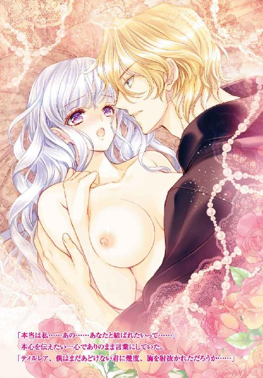
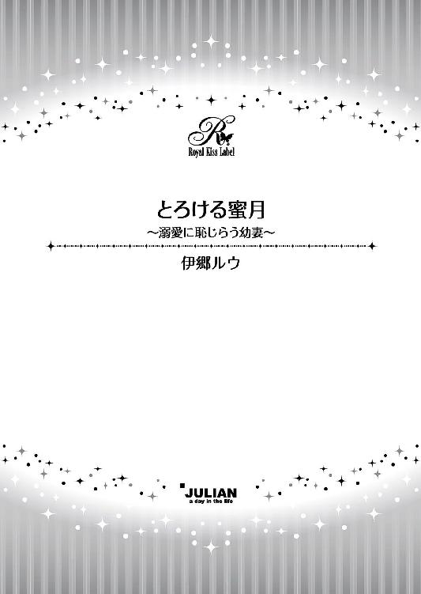
この物語はフィクションであり、実在の人物・団体・事件等とは、いっさい関係ありません。
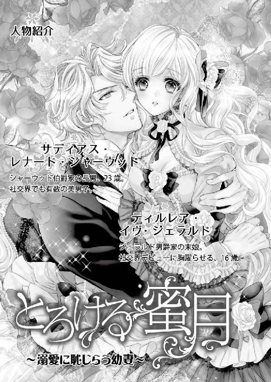
イラスト・氷堂れん
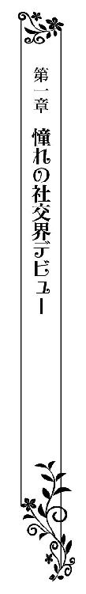
黒いテールコート姿の紳士たち、そして、煌びやかなドレスを纏った貴婦人たちで、贅の限りを尽くした絢爛豪華な大広間は賑わっていた。
優雅に湾曲した高い天井からは、目を瞠るほど大きなシャンデリアが吊り下げられている。
金色の繊細な燭台が幾つも並び、火が灯された蝋燭の炎が眩いほどに揺らめいていた。
白い大理石の壁に等間隔で並ぶ金色の燭台でも炎が揺らめき、紳士淑女で溢れかえる大広間をいっそう華やかに見せている。
十六歳になったばかりのティルレア・ジル・ジェラルドは、父親のロナルド・デイヴィッド・ジェラルド男爵にエスコートされ、盛大な舞踏会の会場へとやってきていた。
大広間には、盛装した楽団が奏でるワルツが流れ始めている。紳士の誘いを受けた淑女たちが、手を取り合って中央へと出て行く。
片手に房のついた扇を持ち、片手を父親の腕に絡めて歩くティルレアは、軽やかなワルツの調べに乗ってステップを踏み出した彼らを、大きな瞳を輝かせながら眺めている。
宮殿の謁見室で女王陛下の拝謁を賜り、夢にまで見た社交界デビューを果たしたばかりで、まさに生まれて初めて出席する舞踏会なのだ。
目にするものがすべて新鮮で、胸は期待に満ちあふれている。贅沢な大広間の煌めき、長いドレスの裾を翻しながら舞う貴婦人たちの優雅さ、耳をかすめていく楽しげな笑い声のすべてに心が躍った。
晴れの日を迎える愛娘のために、母親のジェラルド男爵夫人が選んでくれたのは、純白の絹地に銀糸を織り込んだ可憐ながらも大胆なドレスだった。
深いデコルテからは、華奢な身体に似合わない豊かな乳房が盛り上がっている。そのふっくらとした胸元が際立つように、腰の部分はことさら細く絞ってあり、そこから裾にかけて何枚も重ねられた純白のしなやかなレースが波打っていた。
デコルテにあしらった薔薇の大輪を模したレースの飾りが、愛くるしい顔立ちを少し大人びて見せている。
ドレスに引けを取らないほど輝く母親譲りの銀髪は、ふんわりと結い上げてあった。銀の髪を彩る髪飾りには、目にも鮮やかなルビーが幾つも鏤めてある。
すんなりと伸びた腕は、肘まで純白の長い手袋に覆われていて、露わな胸元は、髪飾りと揃いのルビーをあしらった首飾りで彩られていた。
上等なルビーは目を奪われるほどに美しい。けれど、輝く銀色の髪と可憐なすみれ色をした大きな瞳を持ち、滑らかな陶磁器を彷彿とさせる白い肌をしたティルレアの引き立て役に過ぎなかった。
「早く踊りたくてしかたないようだね？」
温和な笑みを浮かべたジェラルド男爵が、ダンスに興じる客たちに目を奪われている娘の顔を覗き込んでくる。
父親は娘以上に今日を楽しみにしていた。華やかな社交界に無事に愛娘をデビューさせることができた喜びから、父親の頬は緩みっぱなしだ。
「この日のためにたくさんお稽古をしてきたんですもの」
踊るかのごとく軽やかな足取りで歩いていたティルレアは、弾けるような笑顔で父親を見上げた。
初めての舞踏会だから、自分でも驚くくらい緊張している。けれど、数々の習い事の中で、なによりもダンスが好きだっただけに、踊りたくてうずうずしているのだ。
「では、最初の一曲は私と踊るかい？」
ふと足を止めたジェラルド男爵が、にこやかに誘いの言葉を向けてきた。
舞踏会に来たばかりで、まだ誰からもダンスに誘われていない。それを気にしてくれたのかもしれないし、本当に娘と踊りたいのかもしれない。
父親からの誘いはもちろん嬉しく、本当ならば一緒に踊りたかったけれど、ティルレアは首を縦に振らなかった。
「でも、私......」
「相手が私では嫌なのかな？」
父親の表情はどこか寂しげで、上手く理由を伝えられないもどかしさに桜色の唇をキュッと噛んでしまう。
困り顔で父親を見上げていたそのとき、ふとティルレアたちの前にひとりの青年が現れた。
「ジェラルド男爵、失礼します」
礼儀正しく一礼してきた青年へと視線を移したティルレアは、驚きに大きく目を瞠り、白い手袋に覆われた小さな手を思わず弾んだ胸にそっと押しあて、静まれと言い聞かせる。
「私はシャーウッド伯爵家の長子、サディアスです。以前、舞踏会にお招きいただいた際にご挨拶をいたしたのですが......」
「覚えておりますとも。立派になられましたな」
「素敵なお嬢さまを、ダンスにお誘いしてもよろしいでしょうか？」
ジェラルド男爵に許可を求める長身の青年を、ティルレアは息を呑んで見つめた。
「なんと光栄なことか......さあ、踊っておいで」
すぐさま了承して満面の笑みを浮かべた父親が、片手で優しくドレスに覆われた娘の背を押してくる。
貴族にとって爵位は絶対的なものだ。位の高い貴族の子息からダンスに誘われるのは、この上ない光栄であり、断る理由などない。
それだけでも充分だというのに、伯爵家の長男であるサディアスは、いずれ爵位を受け継ぐのだ。彼と娘が結婚に至れば、男爵家から伯爵夫人が誕生ということになる。
それを父親が喜ばないわけがない。即座に踊ってくるよう娘に勧めてきたのは、サディアスがあえて品定めなどする必要がないほど、申し分のない相手だからだ。
「お手をどうぞ」
優雅に片手を差し出してきたサディアスを、ティルレアは胸をときめかせながら大きな瞳で見上げる。
艶やかな黒のテールコートに身を包んでいる彼は、大きく仰ぎ見るほどに背が高い。煌めく金色の髪はとても柔らかそうで、軽く波打っている。
優しげな青々とした瞳、形の整った眉、細く通った鼻筋、高い頬骨、すっきりとしたあごの輪郭など、絵に描いたかのように整っていた。女性ならば誰もが目を奪われる美男子だ。
ふとあたりに視線を移してみれば、着飾った若い貴族の令嬢たちが、さも不満げな顔でこちらを見ている。
次期伯爵であるサディアスが男爵家の娘をダンスに誘ったことが、彼女たちは気に入らないのだろう。
未婚の女性にとって、舞踏会やパーティは結婚相手を探す場であり、いわば戦いの場のようなものだ。
社交界にデビューをしてから一、二年でよい結婚相手と出会えなければ、不本意な男性の妻になることをよしとするか、生涯独身を覚悟するしかない。
いち早く裕福な貴族の子息に見初められるべく、デビューしたての令嬢たちは戦々恐々としているのだった。
けれど、ティルレアはそうした周りの目など気にすることなく、とびきりの笑みを浮かべてサディアスの手を取る。
「では、参りましょう」
よそよそしい言い方をしたかと思うと、ふと悪戯っぽく目を細めた彼に、重ねた手を軽く握りしめられ、踊りの輪の中へと導かれていく。
背筋を伸ばして堂々と歩く彼は、躊躇うことなくホールの中央へと進み、片手をティルレアの背に添えてきた。
互いの身体が近づき、豊かに盛り上がった胸が彼の上着に触れそうになり、ちょっとした羞恥に囚われる。
「レディ・ティルレア、僕との約束を覚えているかい？」
笑顔で訊ねてきた彼が、ワルツの調べに乗せてステップを踏み始めた。
彼のリードで足を踏み出したとたん羞恥が消えたティルレアは、パッと顔を綻ばせて青い瞳を見つめる。
「もちろんよ。私、あなたと踊れる日を心待ちにしてきたの」
「僕も君が舞踏会に姿を見せる日を待ち焦がれていたよ」
声を弾ませたティルレアを、彼が嬉しそうに頬を緩めて見返してきた。
父親からダンスに誘われながらも躊躇ったのは、初めての舞踏会で最初に踊る約束を彼としていたからだ。
誰にも言ったことがないから、もちろん父親も知らない。きっと二人が初対面だと思っていることだろう。
秘密にしていたのは心苦しかったけれど、夜分にこっそりと部屋を抜け出したときの出来事だけに、自分の胸にだけ秘めてきた。
あれから、二年の歳月が流れた。サディアスが約束のことなどすっかり忘れてしまっている可能性もあっただけに、覚えてくれていたのが嬉しくてたまらない。
「君はあのころよりずっと綺麗になったね」
扇を持つ手でドレスを軽く摘まみ、流れるワルツに乗せて優雅に舞っているティルレアは、サディアスの甘い囁きにどうしようもなく胸がときめく。
彼が次期伯爵だという事実には驚いたけれど、それよりもこうして一緒に踊れることの嬉し
さが勝っている。
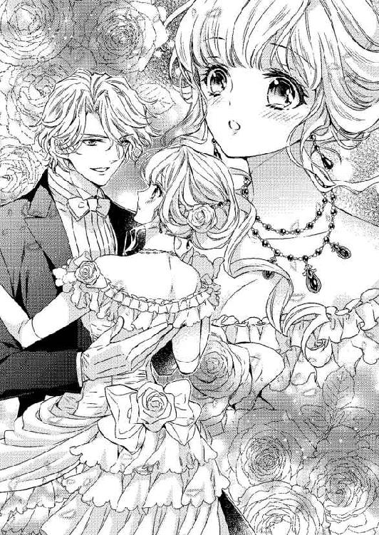
子供と交わしたたわいない約束を彼は覚えてくれていて、実行に移してくれた。これほどの喜びが他にあるだろうか。
「あなたはあのころと変わらず素敵だわ」
いっときも逸れることがない魅惑的な青い瞳に、初めて彼と出会った日のことが脳裏にまざまざと蘇ってきた。
＊＊＊＊＊
「なんて綺麗なの......」
夜着にショールを羽織り、少し身を屈めているティルレアは、わずかに開いた扉の隙間に顔を押しつけるようにして、広間で繰り広げられている舞踏会を眺めていた。
子供はとうにベッドに入っている時間だったが、舞踏会の様子がどうにも気になり、そっと部屋を抜け出してきてしまった。
舞踏会は女の子の憧れだ。そればかりか、情操教育の一環としてダンスを習い始めたから、これまで以上に興味が募っている。
とはいえ、社交界にデビューしなければ、舞踏会には出られない。まもなく十四歳になろうとしているティルレアには縁のない場所なのだ。
広間の大きな扉は開け放されていて、招待客が頻繁に出入りするから、廊下の外れにある小さな出入り口の扉から覗いている。
だからといって見つからないという保証はなく、誰かに気がつかれてしまえば必ずや咎められてしまうことだろう。
たとえ舞踏会を主催したジェラルド男爵家の娘であろうと、子供が夜遅くに自室を出て屋敷の中の歩き回るなど許されないからだ。
男爵家の娘として厳しい教育を受けているから、してはいけないことくらいわかっている。
それでも、すでに社交界にデビューしている二人の姉の着飾った姿や、ぞくぞくとやってくる紳士淑女たちを自室の窓から見てしまったら、ひとり部屋でおとなしくなどしていられなくなり、こっそり抜け出してきたのだ。
「ああ、早く私もお姉さまたちのように着飾って踊りたい......」
煌びやかなドレスを纏って踊る貴婦人たちから、雲泥の差がある自分の姿へと目を移して力なく肩を落とす。
すぐ上の姉は昨年、真新しい純白のドレスで晴れの日を迎えた。けれど、ティルレアはあと二年も待たなければならない。
自分の番が巡ってくるのはまだまだ先だと思うと、気が遠くなってしまいそうになるのだ。
「レディ......」
「......っ」
いきなり背後からポンと肩を叩かれ、食い入るように広間の中を見つめていたティルレアは飛び上がらんばかりに驚く。
覗き見をすることが悪いことだと承知しているから、招待客たちに見つからないよう中央の大きな扉ではなく、客が滅多に使うことがない出入口を選んでいた。
急に鼓動が激しくなった胸を片手で押さえながら、肩を窄めて恐る恐る振り返った。
「こんなところでなにをしているんだい？」
テールコートに身を包んだ若い男性が、興味深げな顔で見下ろしてくる。
二十歳になる兄と同じくらいの年齢だろうか。とても若々しいけれど、背筋が真っ直ぐに伸びた品のよい正装姿からは落ち着きが感じられ、貴族の子息だろうと容易に想像がつく。
「あっ......あの......」
叱られるのが怖いだけでなく、夜着姿を客人に見られた恥ずかしさに、言葉が上手く続けられない。
羽織っているショールの端を胸の前で握りしめ、長い睫を伏せて項垂れる。走って逃げ出したいのに足が竦んで動かなかった。
「僕はサディアス。君はジェラルド男爵家のお嬢さんだね？ 名前を教えてもらえるかな？」
自ら名乗ってくれただけでなく、思いのほか優しい口調に少しだけ安堵し、勇気を出して顔を上げる。
「ティルレアです......ごめんなさい......私......舞踏会を見てみたくて......それで......あの、すぐ部屋に戻りますから、お父さまたちには内緒にしていただけませんか？」
上目遣いで見つつ、失礼にならないようできるだけ丁寧な言葉を心がけたけれど、身内以外の男性と言葉を交わす機会がほとんどないだけに自信がない。
それでも、サディアスは気にした様子もなく、神妙な顔をしているティルレアをしみじみと見つめてきた。
「レディ・ティルレアは、好奇心が旺盛なお年頃なんだね」
笑いを含んだ声に羞恥が募り、顔を真っ赤にしてまたしても項垂れる。
こんなとき、どうすればいいのか、なにを言えばいいのか、さっぱりわからない。早く部屋に戻ればよかったと、後悔してしまう。
「早くドレスを着て踊りたいんだろう？」
手袋を嵌めた手でそっと頬に触れてきた彼に顔を上向かされ、ティルレアは恥じらいに頬を赤く染めたまま小さくうなずき返す。
「舞踏会は女の子の憧れなのだからしかたない。でも、こんな遅い時間に部屋を抜け出してくるのはいけないことだよ」
「ごめんなさい......」
柔らかな口調で窘められて素直に詫びると、サディアスが目の前に跪いてきた。
男性にそんなことをされるのは初めてで、間近に迫った彼の顔を驚きに大きく瞳を瞠って見つめる。
彼はとても整った顔をしていた。それに、綺麗な青い瞳をしている。まるで水底を思わせる濃い青で、見ていると吸い込まれてしまいそうな錯覚を起こす。
父親や兄以外の男性と、ここまで顔を近づけ合ったことがなく、今にも息が触れ合いそうで酷く恥ずかしいのだけれど、なぜか目が離せないでいた。
「レディ・ティルレアはいくつになるのかな？」
下ろしている長い銀色の髪を優しく撫でられ、鼓動が一気に速くなる。
「あ......あの......もうすぐ十四歳になります......」
「デビューまで二年以上あるのか......待ちきれないのもしかたないかな」
長い髪を指先で弄びながらにこやかにつぶやいた彼が、静かに立ち上がった。
「舞踏会を覗いてみたい気持ちはわかるけど、お嬢さまはおとなしくベッドで寝ている時間だからね、お父上に見つかって叱られる前に部屋まで送ってあげよう」
いきなり手を握り取られ、さらに鼓動が跳ね上がる。
貴族たちが暮らす屋敷は概ね造りが同じで、一、二階に広間、居間、食堂などがあり、家族の私室は三階に設けられていた。
サディアスがなにも訊ねてくることなく歩き出したのは、同じような造りの屋敷で生活している貴族の息子だからだろう。
ゆったりとした足取りで蝋燭の灯りに照らされた廊下を歩き、その先にある階段を躊躇うことなく上がっていく。
ティルレアは長い夜着の裾を片手で軽くたくし上げ、彼に遅れないようついていった。
（不思議な人......）
どうして彼はこんなに親切なのだろうか。父親に告げ口しないでいてくれるつもりなのだろうか。
手袋越しに伝わってくる温もりにドキドキしながらも、手を繋いで歩いている彼をしみじみと見上げる。
すると、こちらの熱心な視線に気づいたのか、彼がにこやかな顔で見下ろしてきた。
「舞踏会に出られるようになるのはまだ先だけど、君のような可愛いお嬢さんなら、きっと誰もが虜になるだろうな」
「本当に？」
にわかには信じ難い言葉に、ティルレアは軽く首を傾げる。
「魅力的なすみれ色の瞳に、輝く銀色の髪、それに、なによりも唇が愛らしい。僕はひと目で君の虜になったよ」
「嘘ばかり......」
先ほど以上に信じがたい言葉にからかわれたのだと思い、つい唇を尖らせてしまう。
社交界には美しい女性が数え切れないほどいるはずだ。そうした女性たちと接してきている彼が、まだ社交界にデビューもしていない子供の自分に惹かれるわけがない。
世間知らずであることは自覚しているけれど、それくらいのことは容易に理解できた。
「レディ・ティルレアは疑り深いようだ」
手を取り合ったまま階段を上がり始めた彼が、楽しげに笑いながら見下ろしてくる。
「僕は嘘をついたりしないよ。初めての舞踏会で君と踊る相手が僕ならいいなって、本気でそう思っている」
「私と？」
「そう、素敵な君と踊りたい」
階段を上がりきったところで足を止めたサディアスに、両手で頬を包み込まれた。
真っ直ぐに向けられる青い瞳はとても真摯で、嘘など言っていないように感じられる。
初めての舞踏会で踊る相手のことなど、これまで考えたこともない。煌びやかなドレスに身を包んで舞踏会に出る日が早くこないだろうかと、それだけを願ってきたのだ。
それなのに、彼と踊る自分を思い描いたとたん、不思議なことにかつて味わったことがないときめきを胸に覚えた。
着飾った人々で埋め尽くされた華やかな舞踏会で、紳士的で優しいサディアスにリードされて踊ったら、どんなに楽しいことだろう。
「私も......私もあなたと踊りたい」
思わず口を突いて出たひと言に、彼が破顔した。
「では、初めてのダンスは必ず僕と踊ると約束してくれるかい？」
「約束するわ」
即座に返事をし、満面の笑みで見上げる。
ティルレアは嬉しさのあまり、目上の男性に対する言葉遣いなどすっかり忘れてしまっていたが、彼は窘めてくることもなかった。
「レディ・ティルレア、また会える日を楽しみにしているよ」
両手で頬を包み込んだまま身を屈めてきた彼が、軽く唇にくちづけてきた。
あまりにも突然のことに、心臓が止まりそうになる。
彼の唇は触れただけですぐに離れたけれど、これは紛れもないファーストキスだ。
夢にまで見てきた初めてのくちづけを、一方的に奪われてしまった。それなのに、胸の奥が熱くなるばかりで、怒りや嫌悪感がまったく湧いてこないでいる。
「さて、君の部屋はどこかな？」
なにごともなかったように頬から手を放したサディアスが、前方をスッと指さす。
「ありがとう、もう大丈夫だから」
部屋の前まで送ってもらうことがなぜか恥ずかしく思え、ティルレアは礼を言うなり彼に背を向けてしまった。
「おやすみ、よい夢を」
背中越しに聞こえてきた彼の声に、ぴたりとその場に立ち止まって振り返る。
「おやすみなさい」
軽く会釈をし、再び背を向けて子供部屋に向かう。
扉の前でいったん足を止め、改めて彼に視線を向けてみると、まだこちらを見ていた。
距離があるというのに目が合ったのがわかり、にわかに頬や耳が熱くなる。そればかりか、鼓動までが速くなった。
慌てて目を逸らし、扉を開けて部屋に飛び込む。そそくさと閉めた扉に背を預け、ドキドキしている胸を両手で押さえる。
彼ともっと一緒にいたかった。社交界にデビューしていれば、親に叱られる恐怖に怯えることなく、彼といろいろな話ができたと思うと残念でならない。
「サディアス......」
名前を口にしただけで、胸の奥がせつなく疼く。
こんな感覚は味わったことがない。いったい、自分はどうしてしまったのだろうか。
「あと二年......早くサディアスと会いたい......」
これまで以上に社交界にデビューする日が待ち遠しくてならず、ティルレアは扉に背を預けたまま晴れの日に思いを馳せていた。
＊＊＊＊＊
「レディ・ティルレア、君はなんて軽やかに踊るんだ」
嬉しそうに顔を綻ばせているサディアスが、流れるように滑らかなステップを踏みながら、優雅に身をしならせてターンをする。
彼にリードされているティルレアのドレスが、回転するたびに柔らかに波打ち、織り込まれた銀糸が眩い光を放つ。
「あなたのリードが上手だからよ。まるで羽が生えたようだわ」
サディアスと踊れる嬉しさと楽しさに、自然と声が弾んだ。
素敵な彼はダンスが上手いに違いないと思っていたけれど、想像を遙かに超えていた。
いつもと同じステップを踏んでいるはずなのに、まるで雲の上にでもいるかのように身が軽く感じられる。
彼にリードされてターンをするたびに、そのまま舞い上がっていきそうな錯覚を起こした。
「見えないけれど、羽が生えているのかもしれないね。あまりにも軽やかで、天使と踊っているのかと勘違いしてしまいそうだ」
腰へと滑り落としてきた手でグイッと引き寄せられ、微笑む彼に唇を奪われる。
戯れのようなくちづけだったけれど、触れ合った唇の感触がことのほか心地よく思え、ふと目を細めてしまう。
「まさに天使の微笑みだな」
耳元で甘く囁かれ、胸がキュンとする。
会いたくてたまらなかったサディアスと見つめ合い、言葉を交わしているだけで、喜びが満ちあふれてきた。
「あなたと踊っていると楽しい......ずっと踊っていたいくらいよ」
周りでは数え切れないほどのカップルが、同じように手を取り合って踊っているのに、ティルレアは彼しか見ていない。
彼のリードで踊っていれば、絶対に誰かとぶつかったりしない。そんな安心感があるのだ。
待ちに待った初めての舞踏会で、焦がれ続けてきたサディアスと踊るティルレアは、まさに二人の世界にどっぷりと浸っている。
「少し風にあたらないか？」
彼に言われてふと我に返ると、すでに楽団が奏でる演奏はポルカに変わっていた。
ダンスに夢中になるあまり、ワルツが終わったことにすら気がつかなかったらしい。
「息が弾んでいるよ」
胸元に向けられたサディアスの視線に、ほんのりと顔が赤らむ。
ドレスのデコルテは深いけれど、乳房は隠されている。それなのに、すべてを彼に見られたような恥ずかしさを覚えてしまったのだ。
「バルコニーで少し休もう」
しっかりと手を握ってきた彼が、バルコニーへと足を向けようとしたとき、ひとりの青年が歩み寄ってきた。
「レディ、一曲、お相手願えませんか？」
優雅に差し出してきた青年の手を困り顔で見つめていると、サディアスがスッと前に出てきた。
「レディ・ティルレアは僕のフィアンセなんだ。申し訳ないが他をあたっていただきたい」
微笑みながらも、きっぱりとした口調で言い切ったサディアスが、ティルレアの肩に手を回して抱き寄せてくる。
「それは失礼した」
彼の言葉を真に受けた青年が、苦笑いを浮かべて離れていく。
「嘘なんかつかなくてもいいのに」
はなから青年と踊るつもりがなかっただけに、とんでもない嘘をついて誘いを断ったサディアスを、呆れ気味の顔で見上げる。
「僕は本気だよ」
「えっ？」
ティルレアが大きく目を瞬かせると、彼は握っている手を引いてダンスの輪から抜け出していった。
「レディ・ティルレア、僕は初めて会ったあの日から、君だけを思ってきた。僕の妻は君しか考えられないんだ、どうか結婚してほしい」
壁際まできて足を止めた彼にいきなり告白され、息を呑んで硬直する。この人はいったいなにを言っているのだろう。
初めて会ったあの日から今日まで、一度も顔を合わせていない。それに、初めての舞踏会で一緒に踊る約束をしただけでしかない。それなのに、いきなり求婚してきたのだから驚く。
「レディ・ティルレア、君は僕のすべてなんだ。もう君しか目に入らない......結婚してくれるね？」
いっときも逸れることがない真摯な青い瞳を、ティルレアは無言で見つめ返す。
サディアスは本気なのだろうか。社交界にデビューしたばかりで、まだ右も左もわからない男爵家の末娘と、本当に結婚したいと思っているのだろうか。
（私......どうしよう......）
胸の内がにわかにざわめき始める。
サディアスに初めて会ったときから、今日までずっと恋い焦がれてきた。
自分の胸に宿る気持ちが恋だと気づいたのは、彼に会ってしばらく経ってからではあったけれど、社交界にデビューする日が近づいてくるほどに、焦がれる気持ちは強くなっていった。
子供と交わした約束を、彼が覚えてくれているかどうかもわからない。それに、彼はとうに結婚している可能性もあった。
彼のことだけを思って初めての舞踏会に臨んだりしたら、悲しい思いをしてしまうかもしれない。
大きな期待を抱かなければ、もし彼が約束を忘れてしまっていても傷つかない。そう自分に言い聞かせていたけれど、期待を抑え込むことなどできないでいた。
約束を覚えてくれていて、ダンスに誘ってくれただけで幸せいっぱいだというのに、求婚されたのだ。もし彼が本気だったら、嬉しさのあまり卒倒してしまうだろう。
「レディ・ティルレア、僕の奥さんになるのはいやかい？」
サディアスから焦れたように返事を促され、本気だと確信したティルレアは慌てて首を横に振った。
「結婚してくれるんだね？」
さらなる問いかけに、今度は大きくうなずき返す。
「はい......」
しっかり返事をしたつもりだったけれど、自分でも驚くほど声が震えていた。
恋い焦がれてきたサディアスの妻になれる。喜びに胸が張り裂けそうだ。
「ありがとう。すぐにでもジェラルド男爵に許しをもらわなければ」
安堵の笑みを浮かべた彼が、腰に片手を回してくる。
当たり前のように抱き寄せられて身体が密着し、面映ゆい気分になった。
まさか社交界にデビューしたその日に末娘が求婚されるなど、家族の誰に想像できただろうか。それも、求婚者は次期伯爵なのだから、きっと大騒ぎになるだろう。
「あっ......」
浮かれた気分でいられたのはほんのわずかであり、ふと脳裏を過ぎった不安にティルレアの足が止まる。
「どうしたんだい？」
立ち止まって顔を覗き込んできたサディアスを、困惑も露わな顔で見上げた。
「あの......男爵家の娘との結婚を、あなたのご両親は許してくださらないのでは？」
互いにどれほど惹かれ合っていたとしても、身分の差を超えることはできない。
貴族において爵位はステータスであり、揺るぎのないものだ。いずれ伯爵家の当主となるサディアスの妻には、相応の身分の娘でなければならない。
位が低い男爵家の娘である自分との結婚を、現シャーウッド伯爵夫妻が認めるとは、とても思えなかった。
「僕の妻は、僕が心から愛せる女性でなければならない。たとえ、周りに反対されようとも、意志を貫くつもりだ」
「でも......」
「君はなにも心配しなくていい。二年以上も思いを募らせてきたんだから、僕は絶対に君と結婚するからね」
顔を寄せてきた彼に耳元で甘く囁かれ、コクリと小さくうなずき返す。
自分が恋い焦がれてきたように、彼も自分のことを思い続けてきてくれた。
あの夜、彼と出会ったのは神のお導きだったのだ。互いにひと目で恋に落ち、再び会える日を指折り数えてきた。これはもう、運命としか言いようがないだろう。
「ああ、あそこにいらっしゃる......」
再び歩き出したサディアスが、紳士と談笑している父親を見つけるなり、にわかに足を速めてきた。
彼を信じると心に決めたティルレアは、腰を抱き寄せてくれている彼に身を寄せたまま足並みを揃える。
「ジェラルド男爵、少しよろしいでしょうか？」
サディアスから声をかけられた父親が、談笑していた相手に軽く会釈をしてからこちらに向き直ってきた。
「初めての舞踏会でのダンスは楽しめたかな？」
娘を目にして顔を綻ばせたのもつかの間、父親が訝しげに眉根を寄せる。
サディアスと必要以上に身体を寄り添わせている娘の姿が、解せなかったようだ。
「ジェラルド男爵、私はレディ・ティルレアを妻として迎えたく思っております。結婚のお許しをいただきたく、お願い申し上げます」
礼儀正しく頭を下げたサディアスを、父親がぽかんと口を開けて見返す。驚きが大きすぎて言葉にもならないらしい。
「私はレディ・ティルレアを心から愛しています。ご心配もあるとは存じますが、私は必ずやお嬢さまを幸せにすると、ここに誓います。どうか、私たちの結婚をお許しください」
「し、しかし......ティルレアは男爵家の娘、シャーウッド伯爵が反対なさるのでは？」
娘と同じ不安を抱いた父親に、サディアスは真摯な瞳を向ける。
「爵位の異なる結婚など珍しくありませんし、ジェラルド男爵家は由緒正しい家系ではありませんか。清らかで美しいレディ・ティルレアとの結婚を、私の両親はけっして反対などしないはずです。彼女ほど私の妻に相応しい女性は他にいないと、私は断言できます」
父親に向けて力強い口調で言い切ったサディアスが、愛しげにティルレアを見つめてきた。
心から自分を望んでくれているのだとわかる言葉と微笑みに、胸の奥がじんわりと熱くなってくる。
彼の真摯な思いは、父親にも通じたはずだ。結婚を許してくれると確信しているティルレアは、不安の欠片もない笑顔でサディアスを見上げる。
「私が願うのは娘の幸せ、ただそれだけだ。あなたなら、きっと娘を幸せにしてくれることだろう。結婚おめでとう、ティルレア」
前に出てきた父親が、優しく抱きしめてくれた。
「お父さま、ありがとう......」
祝福してくれた父親にしがみつき、喜びの涙を溢れさせる。
恋い焦がれてきたサディアスの妻になれるなんて、まるで夢を見ているかのようだ。
けれど、これは夢ではない。すべてが現実なのだ。これからはずっとサディアスと一緒にいられると思うと、嬉しすぎて涙が止まらなくなった。
「初めての舞踏会で娘の結婚を祝うことになるとは......」
抱きしめる腕を緩めた父親に両手で頬を挟まれ、顔を上向かされる。
「幸せになるんだよ」
目元を和らげて見つめてくる父親の瞳が、うっすらと涙で滲んでいた。
喜んでくれているとわかるその表情に、ティルレアは新たな涙を溢れさせる。
「お父さま......」
「レディ・ティルレア、みんなに結婚の報告をしよう」
ぽんと肩に手を置いてきたサディアスを、驚きの顔で見上げた。
「えっ？」
大勢の前で結婚を発表するなど恥ずかしくたまらなかったけれど、彼は意に介したふうもなくティルレアに身を寄り添わせて片手を高く挙げる。
「みなさまにご報告があります」
楽団の演奏にも負けないサディアスの大きな声にふと曲が途切れ、ダンスをしていたカップルたちが足を止め、話に花を咲かせていた人たちが口を噤む。
大広間にいるすべての人たちが、片手を挙げているサディアスへと目を向けてきた。
彼の隣にいるティルレアは一瞬にして注目の的となり、羞恥に頬を染めて項垂れる。
貴族の結婚は、結婚許可証を得て挙式を執り行い、後に親しい人たちを招いて食事会を開くのが通例で、大勢の人が集まる場であえて公表などしないものだ。
社交界にデビューして初めての舞踏会で、ティルレアは知った顔もほとんどない。そればかりか、身分違いの結婚なのだから、祝ってもらえるかどうかも怪しかった。
「私、サディアス・レナード・シャーウッドは、ジェラルド男爵令嬢、レディ・ティルレアと結婚することをここにご報告いたします」
サディアスが声高に言い放つと同時に、大広間にざわめきが起こる。
扇で口元を隠した貴婦人たちが顔を寄せ合い、こちらを見つつひそひそと言葉を交わす。
いっぽう、結婚相手を見つけるべく舞踏会に来ている令嬢たちは、美男子の次期伯爵が結婚を決めたと知って血相を変えた。
「なに？ 彼はなんて言ったの？」
「伯爵家のサディアスが、男爵家の娘と結婚ですって？」
「身分違いも甚だしいじゃない、信じられないわ」
「この前の舞踏会でサディアスと踊ったのに......伯爵家に生まれた私より男爵家の娘を選ぶなんて、彼はどうかしてるわ」
ティルレアに先を越されて歯噛みする思いであろう彼女たちは、声を潜めようともしない。
耳に届いてくる批判的な声に、ティルレアは萎縮してしまう。
サディアスとの結婚を祝ってくれたのは、父親ただひとりだ。身内以外、誰にも認めてもらえない悲しさに、胸が酷く痛んだ。
「サディアス、おめでとう」
「おめでとう、未来の伯爵夫人を早く紹介してくれ」
「いきなり結婚の報告なんかするから驚いたじゃないか」
どこからともなく集まってきた青年たちに、周りを取り囲まれる。
どうやら、みなサディアスの友人のようだが、もちろんティルレアは誰ひとりとして言葉を交わしたことがない。
どうしたらいいのかわからず、サディアスの腕に縋り付いて救いを求める視線を向ける。
「レディ・ティルレア、僕の友人を紹介しよう。端から、アンディ、ロバート、ニコル......ああ面倒だ、君たち自己紹介してくれ」
増えてくる友人の数に、サディアスは自分で紹介することに嫌気が差したらしい。
「君は相変わらずだ」
ひとりの友人の言葉をきっかけに、みなが同意したように笑う。
サディアスとは気心が知れた仲なのだろう。それぞれの顔に浮かんでいる明るい笑みから、容易に察せられた。
「では、僕から......」
前に出てきた青年が、礼儀正しく一礼する。
「レディ・ティルレア、初めまして。僕はアンドレア・Ｊ・バーキン、気兼ねなくアンディとお呼びください」
「初めまして」
にこやかに差し出したティルレアの手を取ったアンディが、恭しくくちづけてきた。
「こんなにも愛らしい女性がデビューしていたとは知りませんでした。サディアスより先に出会うことができなかったのが残念でなりません」
お世辞とわかっていても、讃えられるのは嬉しいものであり、つい頬が緩んでしまう。
「後がつかえているんだから、よけいなことを言っていないで次と替われよ」
窘めてきたサディアスをちらりと見やったアンディが、ティルレアにとびきりの笑顔を向けてくる。
「おめでとう、心からの祝福を」
「ありがとう」
祝ってもらえた嬉しさに、自然と顔が綻ぶ。
「さあ、交代、交代。早くしないと夜が明けてしまうぞ」
サディアスが順番を待っている友人を手招く。
口では面倒くさそうに言いながらも、その顔はどこか楽しげだ。
友人たちからの祝福を、彼も喜んでいるからだろう。
つい先ほどは、耳に届いてきた令嬢たちの批難めいた言葉に胸を痛めたけれど、こうして集まってきた彼の友人たちに祝ってもらえたことで、妻になれる喜びが再び込み上げてきた。
「初めまして」
入れ替わり立ち替わり前に出てくるサディアスの友人と挨拶をするティルレアは、遠巻きに見ている令嬢たちの目を気にすることなく、このうえない幸せに浸っていた。
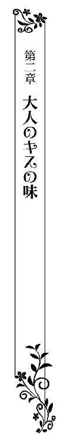
馬車で迎えに来てくれたサディアスとともに、シャーウッド伯爵家にやってきたティルレアは緊張しきっていた。
サディアスの両親と会うのはこれが初めてであり、二人の結婚を認めてもらえるかどうかはこの訪問にかかっている。
サディアスは普段通りに振る舞えばいいと言ってくれたけれど、簡単なことではなかった。
彼の妻になるためには、どうあっても両親に気に入ってもらわなければならないのだから、嫌でも気負ってしまうのだ。
案内されたのは柔らかな陽に包まれた居間で、暖炉の前に置かれた長椅子にサディアスと並んで腰掛けている。
父親以上に結婚を喜んでくれた母親が、今日のために選んでくれたのは、淡いピンク色のシルクサテンで仕立てたドレスだった。
襟の開きも控えめで、波打たせたレースがあしらわれているため、豊かな胸が上手く隠されている。
ボリュームのあるスカートには、数え切れないほどの真珠が散らしてあった。真珠の上品な虹色の輝きが、可愛らしい色合いのドレスを引き立てている。
楕円形のテーブルを挟んだ向かい側には、正装したシャーウッド伯爵、煌びやかなドレスに身を包んだ夫人と妹のシェリルが座っていた。
居間の天井はとても高く、半円を描いている。贅沢に金の装飾が施され、淡い色合いで翼を広げた幼い天使が描かれていた。
たっぷりと陽を取り込んでいる窓はアーチ型で、磨き抜かれたガラスの向こう側は小さな庭になっていて、青々と葉を茂らせた木々が見える。
優雅に垂れ下がる真紅のカーテンは、房がついた金色の帯でまとめられ、床にはアラベスク模様の艶やかな絨毯が敷き詰められていた。
暖炉に設けられたマントルピースや、長椅子とテーブルの猫脚も金色に塗られていてるのだが、下品な印象はまったくない。要所要所に取り入れられた金色が、陽差しに包まれた明るい居間をより華やかに見せていた。
テーブルに用いられているのは厚いガラス板で、複雑な彫り細工が施されている。その上にはパーラーメイドによって運ばれてきたティーセットが置かれていた。
繊細な持ち手がついたティーカップには、薫り高い紅茶が満たされている。ただならない緊張からティルレアは手を出せずにいたが、伯爵夫人とシェリルはさっそく優雅な仕草でソーサーを取り上げると、細い指先でカップの持ち手を摘まみ、紅茶を啜り始めた。
伯爵夫人は息を呑むほどの美貌の持ち主で、二十歳を超える息子がいるとはとても思えない艶やかな肌をしている。
落ち着いた紫色のドレスはデコルテが浅く、胸の谷間も見えることなくとても上品な仕立てになっていた。
すんなりとした腕は肩山が少し盛り上がった長袖で覆われ、短い純白の手袋を嵌めている。
豊かな金の髪は丁寧に結い上げられていて、小さな羽を施した髪飾りがあしらってあった。
首飾りと耳飾りは、繊細な金細工に小粒の真珠が鏤められている。これ見よがしなところがまったくなく、柔らかな微笑みを湛える口元と相まって、品のよさが際立っていた。
「なぜお茶を召し上がらないの？ 男爵とはいえ貴族なのだから、お茶の作法くらいは習わせてくれているのでしょう？」
「シェリル、口の利き方には気をつけなさい」
小さく咳払いをしたサディアスがすかさず妹を窘め、気にするなと言いたげな顔をティルレアに向けてくる。
「あら、私は男爵家のご令嬢がどのような教育を受けているのか知らないから、お訊ねしてみただけよ」
長椅子に身体をわずかに斜めにして座っているシェリルが、嫌みたっぷりに言い放っただけでなく、蔑むような視線を向けてくる。
艶やかな茜色のドレスにも負けない、母親譲りの美しい顔立ちをしているが、優しい雰囲気がある伯爵夫人とは異なり、印象が酷くきつい。
サディアスから妹は十八歳だと聞かされていたが、実際に会ってみると大人びた顔立ちのせいか、もっと上のように見える。
顔を合わせた瞬間から侮蔑するような瞳を向けられ、兄の妻として相応しく思っていないことがすぐに察せられた。
できることなら、彼の両親だけでなく、妹にも結婚を認めてもらいたい。年齢も近いのだから、仲良くなりたいと思う。
けれど、両親から許可を得られなければ、なにも始まらない。棘のあるシェリルの言葉に胸は痛むけれど、今は気にしてはいけないと自らに強く言い聞かせていた。
「いただきます」
にこやかに会釈したティルレアは、背筋を伸ばしたまま身を乗り出し、片手でソーサーごと取り上げる。
紅茶をこぼさないよう静かに身体を引き、指先で細い持ち手を摘まんでカップを口に運ぶ。
男爵は確かに爵位としては低い。けれど、ジェラルド男爵家は、数ある男爵家の中でも裕福であり、両親は息子にはもちろんのこと、娘たちにも、どこに出ても恥ずかしい思いをしないよう、最高の教育を施してくれた。
だから、サディアスの家族を前に緊張はしているけれど、いざとなれば臆することなく振る舞えた。
シェリルの射るような視線を感じる中、堂々と紅茶をひと口啜り、そっとカップをソーサーに下ろす。
「ああ、美味しい。とても薫りのよい茶葉ですね」
ティルレアの素直な感想に、伯爵夫人が嬉しそうに目を細める。
「わたくしの好きな茶葉なのよ。気に入っていただけて嬉しいわ」
そう言った彼女が再びカップを口に運ぶと、それまで黙って紅茶を味わっていたシャーウッド伯爵が、ティルレアに視線を向けてきた。
「レディ・ティルレアは先日の舞踏会が社交界デビューだと聞いているが、本当かね？」
伯爵は長椅子の背に寄りかかり、組んだ脚の上にソーサーを載せている。
貫禄のある体格をしているが、なかなかの男前だ。若かりしころは、さぞかし女性の目を惹きつけたことだろう。
サディアスは母親の血を色濃く受け継いでいるような気がしたが、よく見てみると穏やかな目元などは伯爵に似ていた。
「はい、仰るとおりです」
ティルレアの答えを聞くなり、訝しげに首を傾げた伯爵が、しみじみと息子を見つめる。
「初めて会ったその日にプロポーズしたのには、なにか理由があるのか？」
父親から問われたサディアスに、さりげなく目を向けた。
舞踏会が初めての出会いではない。けれど、それを言ってしまうと、あの日の令嬢らしからぬ素行を彼の家族に知られることになる。
伯爵夫妻はもとより、ただでさえ男爵家の娘は兄の嫁として相応しくないと思っているシェリルには、事実を知られたくなかった。
「レディ・ティルレアに一目惚れしたからですよ。あそこで求婚しなければ、他の男に取られてしまうかもしれないと思うと、居ても立ってもいられなかったんです」
「なるほど。で、レディ・ティルレアもサディアスに一目惚れしたと......」
心当たりでもあるのか、伯爵が納得顔でうなずく。
（よかった......）
サディアスが誤魔化してくれたことに胸を撫で下ろしたのもつかの間、シェリルがさも不機嫌そうに音を立ててカップをソーサに下ろし、ティルレアはビクッとしてしまう。
「お兄様は、まったく見る目がないわ。よりによって男爵家の娘に一目惚れするなんて」
きつい言葉を投げつけてきたシェリルから冷ややかな視線を向けられ、気にしないようにしていてもやはり胸が痛んだ。
「シェリル、いい加減になさい。わたくしが子爵家の生まれであることを知らないわけではないでしょう？ わたくしたちは、男爵家のお嬢さまであっても、サディアスが妻として望ましいと思ったのならば、喜んで迎えるつもりよ」
「どうして？ 子爵家と男爵家では大違いじゃない！ 男爵家は伯爵家より二つも爵位が下がるのに、跡継ぎであるお兄様と結婚するなんて許せないわ」
シェリルは甲高い声で言い放つや否や、勢いよく長椅子から立ち上がりると、暇を告げるでもなく居間を足早に出て行ってしまった。
「レディ・ティルレア......」
怒りを露わにして立ち去った彼女を呆然と見ていたティルレアは、サディアスの静かな呼びかけにハッと我に返る。
「すまない、妹はどうにも気が強くて僕たちもお手上げなんだ」
苦笑いを浮かべた彼に、気にしていないと首を振って見せた。
シェリルには伯爵令嬢としてのプライドがあるのだ。身分に差があるのは事実であり、それを指摘しているだけなのだから、悲しい思いをしたところで彼女を咎めることはできない。
「わたくしからもお詫びするわ、気を悪くさせてしまってごめんなさいね。でも、わたくしたちは心からあなたを歓迎しているの」
柔らかに微笑んだ伯爵夫人が、同意を求める視線を伯爵に向ける。
「貴族である以上は爵位を重んじなければならない。だが、結婚において重要なのは愛だよ、愛。愛し合っていることが大事なのだから、私たちは反対などしない。レディ・ティルレアをシャーウッド伯爵家の嫁として喜んで迎えよう」
「ありがとうございます」
思わず込み上げてきた涙を慌てて指先で押さえながら、ティルレアは感謝の気持ちを込めて深く頭を下げた。
「そろそろ晩餐の時間だな。食事をしながら、結婚式の相談をしようではないか」
「では、参りましょう」
顔を見合わせて微笑んだ伯爵夫妻が長椅子から立ち上がり、ティルレアもサディアスとともに腰を上げる。
「さあ」
片手を腰に添えてきたサディアスに身を寄せ、伯爵夫妻たちに続いて居間を出て行く。
彼の両親が身分の差を気にしないわけがなく、説得するには時間がかかるかもしれないと考えていた。
あまりにも簡単に許しが得られて拍子抜けしてしまった感があるものの、やはり結婚を認めてもらえたのは嬉しい。
「優しいご両親ね」
「自慢の両親だよ」
笑顔で大きく仰ぎ見たティルレアに微笑み返してきた彼が、そっと頬にくちづけてきた。
優しく触れてきた唇に大きな愛を感じ、胸が熱くなっていく。
これからは誰に憚ることなく、彼と寄り添うことができる。その嬉しさに心が浮き立つティルレアは、並んで歩くサディアスの腕に自ら手を絡めていた。
＊＊＊＊＊
シャーウッド伯爵夫妻との晩餐を終えたティルレアは、サディアスと二人で中庭に続くバルコニーへと出てきていた。
すっかり夜のとばりが下りていて、外は暗闇に近い状態だ。サディアスが提げているランプの灯りがなければ、きっと歩くのさえ不自由したことだろう。
「さあ、座って」
腕を取って歩いていたティルレアの手を軽く叩いてきたサディアスが、バルコニーの端に置かれた白い長椅子へと促してくる。
「ありがとう」
ドレスの長い裾を気にしながら浅く腰掛けると、すぐ隣に座ってきた彼がランプを足元に下ろした。
並んで腰掛ける二人の姿が、暗闇の中にくっきりと浮かび上がる。まるで、揺らめく炎の灯りに包まれているような感じだ。
「こんなに楽しい時間を過ごしたのは久しぶりだわ」
腰に腕を回してきた彼に躊躇うことなく寄り添い、笑顔を弾けさせる。
専属の料理人の手による贅沢な食事、気さくなシャーウッド伯爵夫妻との会話、そして、なによりも愛するサディアスと一緒にいられるのが嬉しく、ティルレアはかつてない満ち足りた気分になっていた。
「両親も君を気に入ったようで安心したよ」
目を細めたサディアスが、頬に軽くくちづけてくる。
彼とは唇を重ねたことがあるけれど、本格的なくちづけはまだ交わしていない。
頬や額にくちづけられるたびに、もしかしたら次は唇を重ねてくるかもしれないと、つい胸をときめかせてしまう。
初めて会った彼に恋したティルレアは、焦がれるあまり幾度となくくちづけ合うその瞬間を思い描いてきた。結婚の約束をしたのだから、期待してしまうのはしかたのないことだ。
けれど、頬から離れた唇は、望む場所に触れることなく遠ざかってしまう。くちづけを交わし合うのは、まだ先になりそうだった。
「どうしたの？」
名残惜しげにサディアスの唇を見つめていたティルレアは、はしたない自分を恥じて顔を赤らめてる。
「いえ......なんでもないわ」
取り繕った笑みを浮かべ、照れ隠しに白い手袋に包まれた指先で後れ毛を整えた。
くちづけを待ち焦がれていることを知られたら、きっとはしたない娘だと思われてしまうだろう。
貴族の子女は常に貞淑でなければならない。どれほど期待に胸をときめかせていても、顔にでないようにしなければと、ティルレアは自らに言い聞かせる。
「それより、私、シェリルさんと仲良くなれるかしら？」
このままでは気まずい空気になりそうに思えて話をふると、サディアスが苦々しく笑った。
「シェリルも根は悪い子ではないんだよ。ただ、僕の結婚相手の君が自分より年下だから、彼女も焦りを感じていると思うんだ。どうか、数々の暴言を許してほしい」
ティルレアの手を取ってきた彼が、真摯な瞳を向けてくる。
「私ね、きっとシェリルさんと仲良くなれると思うの。たくさんお話をして、お互いのことをよく知れば絶対に大丈夫。だって、優しくて心が広いあなたの妹なんだもの、仲良くなれないわけがないわ」
笑顔で言い切り、青い瞳を真っ直ぐに見つめた。
温厚で優しいシャーウッド伯爵夫妻から、愛情を注がれて育ったはずのシェリルが、意地悪な性格をしているとはとても思えない。
年ごろの娘は、誰もが早く結婚したがっている。サディアスが言ったように、兄の妻になるのが自分よりも年下であることに、彼女は焦りを感じてしまっただけなのだ。
美しい伯爵令嬢のシェリルは、遠からずみなが羨む結婚相手を見つけるに違いない。結婚が決まれば、こちらのことなど気にもしなくなるだろう。
しばらくはあれこれ言われるかもしれないけれど、家族の一員である彼女とは仲良くやっていきたいティルレアは、自ら彼女に歩み寄るくらいの気持ちでいなければと思っていた。
「ティルレア......」
いつになく熱い眼差しを向けてくるサディアスに、いきなり名前を呼び捨てにされてドキッとする。
「なあに？」
一気に速まった鼓動に戸惑いながらも、小首を傾げて彼を見返す。
「君は本当に優しいんだな。ティルレア、君のような娘を妻にできるなんて夢のようだよ」
「大袈裟なんだから」
同じ思いでいるだけに、サディアスの熱のこもった言葉が面映ゆく、ティルレアはわざと冗談めかして笑った。
向けられる魅惑的な青い瞳や、重ねられた手から、大きな愛が伝わってくる。幸せすぎて、怖いくらいだった。
「大袈裟なものか、君を妻にできる僕は世界一の幸せ者だよ」
「あっ......」
両の手で力強く抱きしめられ、ティルレアは大きく仰け反る。
より鼓動が速くなり、彼に伝わってしまいそうで恥ずかしい。けれど、抱きしめられているのが心地よく感じられ、躊躇いがちに両手を彼の背に回した。
「愛してるよ、ティルレア......早く挙式をすませて君と一緒に暮らしたい......」
「私も......早くあなたの妻になりたい」
抱きしめる腕の中で身じろいで顔を上げたティルレアは、愛しくてたまらないサディアスを一心に見つめる。
「ティルレア......」
ふと顔を綻ばせた彼が、両の手で頬を挟んできた。
穏やかな春の夜風にそよぐ金色の髪、水底を思わせる青々とした瞳、なにか言いたげに薄く開いた形のいい唇のすべてに魅せられてしまう。
「なんて可愛いんだ」
ひとしきり見つめてきた彼に、そっと唇を塞がれる。
「んっ......」
これまでとは違って深く重ねられた唇に、鼓動が跳ね上がった。
何度も唇を啄まれ、ときに舌先でなぞられ、体温がどんどん高まっていく。
「ふ......っ」
改めて唇を深く重ねてきた彼が、舌を忍び込ませてきた。
互いの舌が触れ合い、驚きに細い肩がぴくりと動く。
（これがくちづけ......）
彼の唇がやけに熱い。歯列をなぞり、口蓋を悪戯に突いてくる舌も、焼けるように熱く感じられる。
しばらく口内を彷徨っていた舌が、己の舌に絡みついてきた。逃げる間もなく思いきり搦め捕られた舌を吸われ、鳩尾の奥のほうが熱く疼く。
「んんっ」
どうしていいのかわからず、抱きしめている彼の背を無我夢中で掻きむしった。
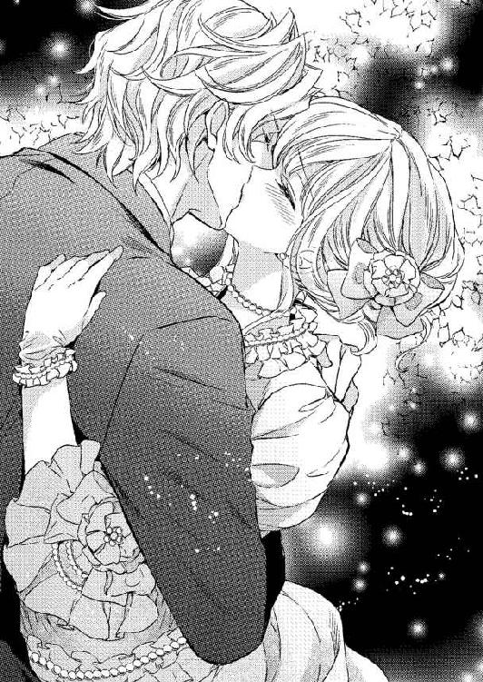
息苦しくて目眩を起こしそうなのに、絡みついてきている舌が心地よくてならない。
全身が甘く痺れて、肌のそこかしこがざわめいている。こうした感覚は、かつて味わったことがない。
ティルレアの結婚が決まったと知ったすぐ上の姉が、舌を絡め合うのが大人のくちづけで、とても気持ちのいいものだとこっそり教えてくれた。
互いに舌を絡め合う感覚など想像できるわけもないが、気持ちがいいと言われれば期待に胸は膨らむ。
だからこそ、サディアスが戯れではないくちづけをしてくれるのを、はしたないと思いながらもまだかまだかと首を長くして待っていたのだ。
そうして、ようやく味わった大人のくちづけは、砂糖をたっぷりと含ませた焼き菓子よりも甘く、舌を絡め合うほどに虜になっていく。
「ん───っ」
胸に深く染みてくる甘いくちづけに夢中になっていたティルレアは、内腿を撫でられていることに気づき、慌てて彼の唇から逃れた。
足元まで覆っていたドレスの長い裾が、いつの間にか膝までたくし上げられている。あと少しで、ドロワーズが見えそうだ。
くちづけを交わしながら、ドレスの裾を捲って手を入れてきた彼が、内腿を撫でていた。それも、知らぬ間に手袋を外した手で、直に触れてきていたのだ。
「───っ」
あまりも唐突なことに驚いて息を呑んだティルレアは、声もなく大きく目を瞠って彼を見つめる。
「可愛いティルレア、怖いことはしないから」
優しく微笑んで甘く囁いてきた彼が、肩口に顔を埋めてきた。
「あっ......」
柔肌を軽く啄まれ、こそばゆさに肩を窄める。と同時に、ちょっとした恐怖を覚え、両の手で彼の腕を掴む。
「サディアス、やめて......」
声を震わせると、彼が顔を静かに顔を起こした。
「結婚が決まっていても、神の前で愛を誓い合うまでは身体を繋げることは許されない。だけど、僕は君に触れたくてたまらない......愛する君の肌を、この手で感じたいんだ」
「でも......」
ティルレアは困り顔で彼を見返す。
挙式の日取りもほぼ決まっている。サディアスは確実に夫となる相手なのだから、拒む必要はないのだと頭では理解している。
ただ、男性に触れられるのは初めてのことだけに戸惑いがあるし、屋敷から誰かが出てくるかもしれないと思うと不安でならないのだ。
「僕の可愛いお姫さまは、初夜まで肌に触れることすら許してくれないのかな？」
「そんなこと......」
悪戯っぽい笑みを浮かべて言われ、ますます困ってしまう。
「レディ・ティルレア、肌に触れるお許しをいただけますか？」
今度はわざとらしく畏まってきた。
いまだ彼の手は内腿に触れている。肌に伝わってくる温もりを、嫌だとは感じていない。
彼はそれを知ってか知らずか、いつになく熱っぽい眼差しを向けてくる。愛する彼の腕に抱かれていては、とても拒めそうになかった。
「ふ......触れることを......許可します」
負けじとわざとらしい口調で答えてみたけれど、逸れることない視線に羞恥を煽られ、長い睫を伏せてしまう。
「有り難き幸せ」
笑いを含んだ声が耳をかすめていくとともに、首筋に彼の唇を感じる。
「あっ......」
さわさわと内腿を掌で撫でられ、胸の高鳴りが激しくなってきた。
サディアスの手が己の肌に触れている。それを嬉しく思うと同時に、ただならない羞恥に襲われ、全身が燃えるように熱くなった。
「滑らかな肌をしているね。絹のような手触りだ」
甘い囁きが耳をくすぐってくる。
「ティルレア......早く君のすべてを僕のものにしたい......」
耳たぶを甘噛みされ、肩がひくりと跳ねて肌が細波立つ。
彼の言葉に恥ずかしさが薄れ、胸に熱いものが込み上げてくる。愛する人に求められることが、こんなにも嬉しいことだとは知らなかった。
挙式まではまだ日がある。夫婦になってしまえば、躊躇うことなくこの身を彼に捧げることができるのに、今はそれができないのが残念でしかたなかった。
「可愛い僕のティルレア......」
首筋に唇を移してきた彼が、音を立てながら柔らかな肌を啄んでいく。
内腿を優しく撫でられるのは心地よく、膝が自然と緩んでいった。
「っ......」
片腕に抱き留められている安心感から、夢見心地で初めて味わう愛撫に浸っていたティルレアは、思いがけない動きをした彼の手に動揺して硬直する。
「大丈夫、怖がらないで」
サディアスは子供をあやすように声をかけてきたけれど、指の一本も自由にならないほど身体は硬くなっていた。
内腿を撫で上げてきた彼の手が、ドロワーズの合わせ目を越えてきたのだ。彼は脚に触れてくるだけだと思っていたのだから、驚かないわけがなかった。
「こちらも柔らかだ」
ドロワーズの中に忍び込ませてきた手で柔らかな茂みを撫でられ、驚愕して目を瞠ったティルレアは、咄嗟に悪さをする彼の腕を掴んだ。
「いやっ......」
「触れるだけだよ。それ以上のことはしない」
「でも......」
困惑も露わな顔でサディアスを見返す。
普段、ドロワーズに隠されている秘所は、結婚したあかつきには夫と身体を繋げ合う場所となり、腹に宿した子はそこから産まれてくると習った。
尊い場所ではあるけれど、同時に不浄の場所でもある。身体を繋げるつもりがないのに、どうしてそんなところに触れてくるのか、それが理解できなくて不安になった。
「君が知らない悦びを教えてあげる」
「んっ......」
言葉の意味もわからないままくちびるを奪われ、搦め捕られた舌をきつく吸い上げられ、不安をよそに身体の力が勝手に抜けていく。
（きっと大丈夫......）
酔うほどに甘いくちづけを与えてくれるサディアスが、酷い真似をしてくるわけがない。
そんな思いが脳裏を過ぎり、抗う気持ちは失せていった。
「ん......ふ......」
何度も搦め捕られた舌を吸われ、唇を甘噛みされ、彼の腕を掴んでいた手が力なく滑り落ちる。
息苦しいほどの熱烈なくちづけに、頭の中が霞に覆われたかのようになっていき、無心で彼の唇を貪っていた。
「んんっ」
茂みを弄んでいた彼の指が秘所へと潜り込み、ティルレアはハッと我に返る。
汚れた場所に彼が触れていると思うとジッとしていられず、唇から逃れて身体を遠ざけようとした。
けれど、それもできないまま、身震いして動きを止める。指先で秘所をツイッと撫でられたとたん、そこから甘い痺れが走り抜けていき、身体が固まってしまったのだ。
彼がどこに触れたのかもわからない。けれど、その瞬間に感じたのは、かつて味わったことがない、身を震わすほどに強烈な心地いい感覚だった。
「女性はここで快楽を得られるんだよ」
耳たぶを舐めるようにして囁いてきたサディアスが、先ほどと同じ場所を指先で撫で回してくる。
「ひっ......や......ああぁ」
ジワジワと広がってくる甘い痺れに、自分でも耳にしたことがない声がもれ、身体のそこかしこが震えた。
自分の身になにが起きているのか、さっぱり理解できない。ただわかっているのは、恥ずかしい場所に触れられているのに、とても気持ちがいいということだけだ。
「あ......っんん......」
抑えようのない声が静かな中庭に響き、羞恥を煽られたティルレアは両の手でサディアスにしがみつく。
「サディアス......やめて......私、怖い......」
広い胸に顔を埋め、嫌がるように首を何度も横に振る。
それなのに、彼はやめてくれるどころか、指先をさらなる奥へと進めてきた。
「ひゃっ......」
重なり合った襞のあいだをツーッと指先で撫で上げられ、ドレスに包まれた細い肩が大きく跳ねる。
「どうしてそんなことをするの......汚いからやめて......」
「汚くなどないよ。ここは君を愛する僕にとって、とても神聖な場所だ」
そんなことを口にしながら、襞のあいだで指を前後に動かしてきた。
「もう濡れてきているね」
どこか嬉しげな声が耳をかすめていく。
いったい彼はなにを言っているのだろう。自ら触れたことがない場所だけに、不安を掻き立てられる。
「さあ、気持ちよくしてあげるよ」
襞に添わせながら、指を元の場所へと戻していく。
先ほどとは異なり、指の滑りがよく感じられる。彼が言ったように、秘所が濡れてきているからだろうか。
「んっ、あ......」
茂みのすぐ下を撫で回され、再び甘い痺れに包まれた。
触れられているそこが、小さく尖っているような気がする。甘い痺れの源は、間違いなくその小さな塊のようだ。
「ああぁ......ああ......」
丹念に突起を撫で回されると、先ほどよりも強い痺れが湧き上がってきた。
「やっ......ふ......ぁ」
気持ちよくてたまらず、声がひっきりなしにもれてくる。
痛みはまったくない。ちょっとむず痒い感じもするけれど、肌が粟立つような痺れは心地いいとしか言いようがなかった。
「ここを撫でられると、気持ちがよくないかい？」
指の動きを止めることなく問われ、ティルレアはコクコクと胸の中でうなずき返す。
優雅なドレスの裾を膝まで捲りあげたまま、しどけなく開いた脚の奥を片手で弄られ、あられもない声をあげている。
こんな姿をシャーウッド伯爵夫妻が見たら、呆れ返るはずだ。挙式を終えていない身でありながら、夜更けに中庭で淫らな行為に耽る娘など、伯爵家の嫁として相応しくないと思うに違いない。
結婚式までは慎ましやかでありたいと思っているのに、どうしても抗うことができない。
「清らかな君は知らないと思うけど、いま味わっているのが快感だ」
「これが快感......」
「そう、神が人間に与えてくれた悦びのひとつだ」
身を震わせながらつぶやいたティルレアに、彼がさらなる愛撫を加えてくる。
硬く凝った小さな塊を、指の腹で押し上げてきた。とたんに指先が鋭敏に感じられ、大きな声をあげそうになって慌てる。
「んっ」
唇を噛みしめ、サディアスのテールコートをきつく握りしめる。上等な絹地が皺になってしまうかもしれない。けれど、そんなことにはかまっていられなかった。なにか縋っていなければ、声を我慢できそうにないのだ。
「僕に触れられているここに意識を集めてごらん」
耳元で囁き、頬にくちづけてきた彼が、ただならない熱を帯びている突起を指先で弾いてきた。
「やぁ......あっ、ああぁ......」
弾けた強い痺れに、自分でも信じられないくらいの甘い声が唇からこぼれ落ち、開いている膝が震える。
このまま触れられていたら、どうなってしまうのだろう。気持ちよすぎて、いまにもおかしくなってしまいそうだ。
「ひっ......んん」
感度が高まっている小さな塊を、サディアスが執拗に擦ってくる。
膝の震えが激しくなり、ますます脚が開いていった。
「ティルレア、可愛い声をもっと聞かせて......」
初めて知った快感の虜になっているティルレアの耳には、彼の甘い囁きすら遙か遠くに聞こえる。
このまま快感に溺れてしまったら、戻ってこれないような錯覚すら覚えた。怖いけれど、溺れてしまいたい衝動に駆られる。思考が激しく乱れていて、自分が自分でなくなっていくようだった。
「ぃ......や」
やむことのない小さな塊への愛撫に身体は震えるばかりで、彼にしがみついていることすら困難になってくる。
テールコートを掴んでいる指から力が抜け、だらしなく彼の脚に滑り落ちていった。感じるほどに動悸が激しくなり、デコルテに包まれている乳房が大きく上下している。
噛みしめることすらできずに、薄く開いたままの唇からは、いつになく熱い吐息がこぼれてきた。
身体を満たしているのは紛れもない快感で、そこいらじゅうが蕩けそうになっている。それでも、快感の終わりが見えないせいか不安が募ってきた。
「サディアス......どうなってしまうの......私......」
「そのまま身を快感に委ねればいいんだよ。そうすれば、君は天にも昇る心地になれる」
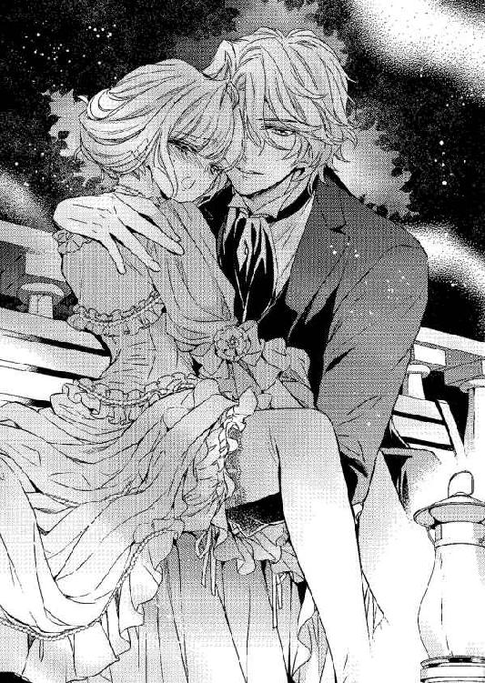
優しく言い聞かせてきたサディアスが、 痛いほどに感じてしまっている凝りを指先で突いてくる。
「っ......」
頭の天辺を目がけて駆け抜けていった強い痺れに、ティルレアは弾かれたように埋めてきた顔をあげ、細く尖ったあごを大きく反らし、全身に広がっていく快感に身を震わせた。
彼が弄られ続けている小さな塊が、熱く脈打っている。普段は意識すらしたことがない場所なのに、いまはひと回り大きくなっているかのように感じられるそこが、はっきりと存在感を示していた。
「あふっ」
疼く小さな塊を指先で小刻みに叩かれ、仰け反ったまま甘声をもらして身悶える。
と同時に、あってはならない感覚に襲われ、ティルレアはにわかに慌てた。
（いやよ、どうしてなの......）
こともあろうに、もよおしてきたのだ。それも、すぐにでも粗相してしまいそうなほど強烈な感覚だった。
このまま刺激され続けたら、間違いなく漏らしてしまう。彼の目の前で粗相などしてしまったら、もう生きていけない。けれど、自ら切羽詰まった状況にあることを伝えることも、恥ずかしくてできそうになかった。
（どうしたらいいの......）
どうあっても我慢しなければと、下腹に力を入れてみる。
「んっ......ふ......」
必死に堪えようとしているのに、甘く痺れる突起をキュッと摘ままれ、弾けた快感に脱力してしまう。
こちらが緊迫した状況にあることなど知らないディアスに、悪気があるわけもない。それでも、愛撫することにのめり込んでいるような彼が、いまは少し恨めしく感じられた。
「ダメよ......もう、無理......」
ついに限界を越えそうになり、震える唇で訴えながら、力ない手で彼の腕を掴む。
早く彼の腕から逃れて屋敷に戻らなければ、間に合いそうにない。一分一秒を争っているというのに、彼はこちらの声に耳を傾けてくれなかった。
「もうすぐだよ」
にこやかに言って頬をすり寄せてきた彼が、熱く脈打つ凝りを責め立ててくる。
触れられるほどに快感は高まっていき、どうして下腹に力を入れることができない。
「お願い......サディアス......私......」
涙が滲む瞳を向けると、さすがに心配になったのか、彼が愛撫の手を止めて顔を覗き込んできた。
「ティルレア？」
「私......あの......」
漏らしてしまいそうだと言えずに、震える唇を噛みしめる。
「僕の可愛いお姫さま、どうしたんだい？」
青い瞳でジッと見つめられ、迷いも露わに見返す。
彼の指はいまも甘く痺れる突起に触れている。そこは強く痺れていて、ほんのわずかでも指を動かされたら、我慢していたものが堰を切ったように溢れてきてしまうだろう。
愛する彼の前で粗相するくらいなら、用を足したいと言って屋敷に駆け込んだほうがましかもしれないと思えてくる。
「あの......私、その......急にもよおしてきて......」
恥を忍んで打ち明けたのに、なぜか彼は小さく笑った。
「清らかな君は本当になにも知らないんだな」
片腕にそっと抱きしめてきた彼を、粗相してしまわないかと冷や冷やしながら見上げる。
「大丈夫だよ、君は勘違いをしているだけだ。もよおしてきたのではなくて、それは絶頂の兆しの現れだよ」
「絶頂の兆し？」
「僕を信じて、このまま身をゆだねてごらん」
絶頂がなにを意味するのかわからなかったけれど、彼に優しく言い聞かされてしまえば従うしかなく、ティルレアは不安を抱きつつもそっと身を寄せた。
「いい子だね」
目を細めて唇に軽くくちづけてきた彼が、いまだ痺れ続けている小さな塊を緩やかに撫で回し始める。
とたんに強烈な快感が駆け抜け、下腹の奥が熱く渦巻いてきた。この馴染みのある感覚は、けっして勘違いなどではない。もう我慢できそうになかった。
「やぁ────」
彼の前で粗相などしたくないのに、自分では抑えようがなくなっている。
震える指先でテールコートの襟を掴み、下腹に押し寄せてくる圧迫感から意識を逸らそうとするが、愛撫の手が止まらなければそれも叶わない。
「もっ......だめ......」
熱く熟れた突起から広がっていく強烈な痺れに、すべての力が奪われていく。
「サディアス......」
純白のシャツに涙に濡れた顔を埋め、ティルレアは細い身体をわななかせる。
感じている痺れがさらに強まっていき、手や足へと広がっていく。
「んっ......ああっ────」
抗い難い奔流が下腹の奥から押し寄せてきた。
彼が触れているそこでなにかが弾け、溢れ出してきた奔流に呑み込まれていく。
「ん────っ」
千切れるほどにテールコートの襟を握り締め、肩をきつく窄めて身を硬くする。
数泊ののち、身体のそこかしこからすーっと力が抜け落ちていった。
「ふぅ......」
深い吐息をもらし、脱力した身を彼に預ける。
ざわめく身体はとてつもない開放感に包まれていて、内側から蕩けていくような心地よさがあった。
なにが起きたのか、さっぱりわからない。けれど、こうした感覚を味わったことがなく、このままうっとりと浸っていたい気分だった。
「ティルレア？」
サディアスに呼びかけられ、力なく視線を上げる。
「お姫さま、ご気分はいかがですか？」
乱れたドレスの裾を整えてくれている彼から冗談めいた口調で訊ねられ、ふと現実に引き戻されたティルレアは、己の下肢に意識を向けた。
（どうして......）
下腹部は用を足したあとのようにすっきりしているけれど、ドロワーズが濡れているようには感じられない。
粗相はしていないのに、解き放つときに似た感覚に陥ったのはなぜなのだろうか。
（絶頂......）
サディアスが口にした言葉が、ふと脳裏を過ぎった。
「可愛いお姫さまは、まだよくわかっていないようだね。これから僕がたくさんの快楽を教えてあげるよ」
にっこりとした彼に両の手できつく抱きしめられる。
「快楽って、たくさんあるものなの？」
乱れた呼吸に胸を大きく上下させながらも、興味深げな瞳を彼に向けた。
つい先ほど味わったのが快楽なのだろう。未知の場所に触れられて、放心してしまいそうになるほど気持ちよくなった。
そうした感覚に陥る行為が他にもたくさんあるのだとしたら、怖いけれど知りたくなる。
「早く知りたそうな顔をしているね？」
「そ、そんなことないわ......」
面白がったように彼から顔を覗き込まれて咄嗟に言い返したものの、羞恥を覚えたティルレアは頬を赤らめて目を逸らす。
「どうして？ さっきよりも気持ちよくなれるかもしれないんだよ？」
思わせぶりな言い方をされ、そろそろと視線を彼に戻した。
「そんなふうになったら、きっと私、おかしくなってしまわ」
とんでもないと、首を横に振ってみせる。
彼の言葉を聞いたら、興味よりも恐怖が先立ってしまったのだ。
「本当に君は可愛いな。おかしくなった君を見てみたくなったよ」
笑っている彼の言い方は本気とも冗談ともつかなかったけれど、優しさだけでなく強引なところがあるとわかったから、やりかねないような気がした。
彼の手管に溺れていく己の姿がふと脳裏を過ぎり、快楽を教えられたばかりの身体の奥が熱く疼く。
「こ......こういうことは結婚してからにしましょう。私たちはまだ夫婦ではないのだから、はしたない行為をしてはいけないと思うの」
このままでは会うたびに乱されてしまいそうで怖く、先手を打ったティルレアは身体を離して真っ直ぐに彼を見つめる。
「どうしようかなぁ......」
彼はわざとらしい迷い顔で、あらぬ方へと視線を向けた。
やけに今日の彼が意地悪に感じられ、つい頬を膨らませてしまう。
「わかったよ。僕のお姫さまのお望みならば、聞き入れないわけにはいかないからね」
「本当に？」
「僕を疑うのかい？」
ちょっと不機嫌そうな顔をされ、ティルレアは慌てる。
「あなたを疑ったりしないわ」
「よかった。ところでキスをするのは、お許しいただけるのかな？」
「もちろんよ」
間髪を容れずに答えると、サディアスがパッと顔を綻ばせた。
魅力的な甘い笑顔に、目が惹きつけられる。
挙式を終えれば、素敵な彼と毎日のように一緒にいられるのだ。そう思っただけで、喜びが胸に溢れてくる。
「ティルレア......」
これまでになく甘い声音で呼ばれてドキッとした瞬間、腰に回してきている手で抱き寄せられ、そっと唇を塞がれた。
「んっ......」
深く重ねられた唇に、さらに胸が大きく弾む。
初めて肌に触れられ、絶頂へと導かれていくあいだは、恥ずかしさしか感じていなかったけれど、こうしてくちづけ合っていると幸せしか感じない。
愛しくてたまらないサディアスの腕に抱かれ、唇を貪り合う喜びはなににも代えがたく、瞬く間にティルレアは二人だけの世界に入り込んでいた。
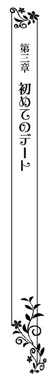
ジェラルド男爵家の居間では、ティルレアが挙式で纏う花嫁衣装の仮縫いが行われていた。
明るい陽差しに包まれた居間の中央には、幾何学模様が織り込まれた円形の絨毯が敷かれている。
普段はそこに長椅子とテーブルのセットが置かれているが、いまはすべてが脇へ避けられ、中央にティルレアが立っていた。
長椅子に座って様子を屈めている両親とサディアスを前に、完成間近の晴れ姿に身を包んでいるティルレアはずっと顔を綻ばせている。
花嫁衣装を手がけてくれているのは、シャーウッド伯爵夫妻が紹介してくれた、王室御用達の著名な仕立屋だ。
若い三人のお針子を伴ってやってきたのは、腕の立つ仕立て人であり店主でもある初老の男性で、穏やかな顔立ちながらも職人気質の厳しい目で、仮縫いを進めている。
花嫁衣装は母親と二人ですべてを決めた。生地選びからデザインまで、幾日もかかったけれど、それはそれは幸せな時間だった。
迷いに迷った末に決めたのは、花嫁に相応しい純白のシルクサテンと、同じく純白の軽やかなレースだ。
どちらもパリから取り寄せた最高級品とのことで、艶やかで滑らかなシルクサテンは驚くほど手触りがいい。
レースに施されているのは、愛らしく花開いたすみれだ。瞳の色がすみれ色をしているティルレアは幼いころからすみれの花が好きで、ひと目で気に入って真っ先に決めていた。
生地選び以上に時間を費やしたのがデザインだった。一生に一度しか着ることができないと思うと、どうしても迷いが生じてしまったのだ。
さすがに呆れた母親にせっつかれてようやく決めたのは、大胆かつ可憐なデザインだった。
大きく開いたデコルテには、レースが贅沢にあしらわれている。たっぷりと波打たせたレースを施すことによって、ほどよく豊かな胸が隠れた。
肩山はふっくらと膨らんでいて、肘のあたりで絞ってある半袖だ。手に嵌めているのはレースの共布で仕立てた手袋で、手首にリボンが飾られていた。
ウエストはことさら細く仕立ててあり、そこから大きく膨らんだスカートが広がっている。
優雅に波打つシルクサテンの上に、複雑に重ね合わせた何枚ものレースが、綿菓子のように盛り上がっていた。
花嫁衣装ならではの引き裾は、なんと五メートルにも及ぶ。花冠の形に仕立てて頭に載せたベールは、引き裾と同じくらいの長さがある。
晴れの日のために自ら選んだ花嫁衣装は、優雅さの中にも甘さが感じられる贅沢な仕上がりになっていた。
「胸元のレースですが、もう少し下げたほうがよいかもしれません」
ティルレアの正面に立ち、細かい部分を調整していた店主が、デコルテにあしらわれたレースに触れてくる。
斜め前に置かれた大きな姿見を見つめていたティルレアは、自らの手でレースを少し押し下げてみた。
いつもよりコルセットをきつめにしているため、細い腰がことさら強調されている。それもあってか、持ち上げられた胸がかなりふくよかに見えた。
レースを下げてしまうと、胸の谷間が覗いてしまいそうだ。清楚な花嫁姿に相応しくないような気がし、店主の意見に従うのが躊躇われた。
「首飾りをつけられることを考えますと、それくらいがよろしいかと」
さらなる店主の意見に、改めて鏡に映った己の姿を見つめる。
首飾りは母親が挙式の際につけたものを譲り受けることになっていた。祖母が母親に贈ったもので、代々受け継がれてきた由緒あるものだ。
先日、母親から見せてもらったが、ダイヤモンドと真珠が幾つもあしらわれた、それはそれは贅沢な首飾りで、先端の飾りがちょうど胸の谷間あたりで揺れるような作りになっている。
それを身につけた姿を思い描いてみると、やはりいまのままではレースが邪魔になりそうに思えた。
「そうね、お願いするわ」
考えを改めたティルレアはにこやかに言って、レースに添えていた静かに手を下ろす。
「早く私たちにも見せてくれないか？」
待ちきれないような父親の声に、店主がどうぞとばかりに一礼して退く。
仮縫いではあるけれど、ほぼ完成に近い状態であり、ティルレアは得意げに両親たちに向き直る。
ちょっとした動きに軽やかなレースのベールが波打ち、長いスカートがふわりと膨らんだ。
脇に立っていたお針子のひとりが、すぐさま後ろに回り込み、スカートやベールの裾を整えてくれる。
「どうかしら？」
両手を軽くスカートに添えて小首を傾げたとたん、サディアスが満面の笑みで手を打ち鳴らしてきた。
「素敵だよ、なんて素敵なんだ、レディ・ティルレア......」
感極まったような声を発して長椅子から腰を上げた彼が、ティルレアに歩み寄ってくる。
「可愛い僕のお姫さま、君を抱き上げていますぐ教会に行きたいよ」
正面に立って少し身を屈めてきた彼に耳元で囁かれ、嬉しさに口元が緩む。
早く結婚式を挙げたい。自分と同じ気持ちでいてくれることに、胸に熱いものが込み上げてくる。
「さあ、どうぞ」
脇に並んできた彼が軽く肘を曲げ、腕を取るよう促してきた。
上着こそ黒いフロックコートだが、襟元に結んだ洒落たクラヴァット、両手に嵌めた薄茶色の手袋、艶やかなトップブーツでまとめている彼は、そのままでも花婿になれそうだ。
「ありがとう」
にこやかに言って彼の腕に片手を添え、そっと身を寄せる。
「愛らしくて美しいお嬢さまとの結婚を許可してくださったことに、改めてお礼を申しあげます」
間もなく義理の両親となるジェラルド男爵夫妻に向け、サディアスが丁寧に一礼した。
「そんな堅苦しいことは仰らないで」
母親が柔らかに微笑むと、顔を見合わせた父親が大きくうなずいてサディアスを見上げる。
「礼には及びませんとも、娘を幸せにしてくれればそれでいい」
「もちろんです」
迷うことなく答えたサディアスから熱い眼差しを向けられ、ティルレアは面映ゆくなってはにかむ。
「本当に結婚式が待ち遠しいわ。さぞかし素敵な式になることでしょうね」
「そうだな」
顔を見合わせて笑った両親が長椅子から腰をあげ、寄り添って立っているティルレアたちに歩み寄ってくる。
「いつまでもお待たせしてはいけないわ。それに、これから二人で街に出るのでしょう？ 早く着替えをすませてしまいなさい」
母親が伏し目がちで立っている仕立屋の店主をちらりとみやり、すっかり彼らの存在を忘れてしまっていたたティルレアは、慌ててサディアスの腕から手を離す。
「ごめんなさい......胸元のレースを直していただければ、他は問題ないわ」
「かしこまりました」
恭しく頭を下げた店主が、後方に控えているお針子を振り返る。
「レディ・ティルレアのお着替えを」
お針子たちを急かすように片手を動かし、店主が再びこちらに向いてきた。
「このように素晴らしいドレスを仕立てさせていただけて、私どももたいへん光栄に思ってお
ります」
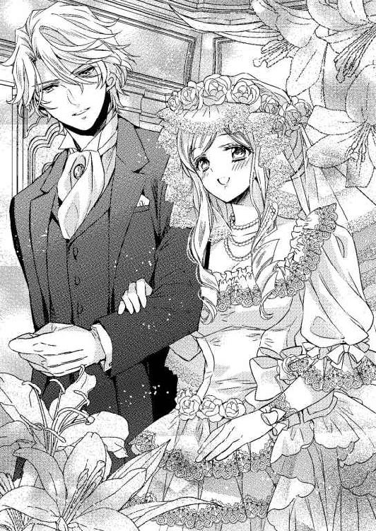
「こちらこそ、素敵に仕上げていただけて嬉しいわ」
「それでは、私は下がらせていただきます」
改めて深く頭を下げた店主が、両親とサディアスに挨拶をして居間をあとにする。
これから着替えをするティルレアを、店主は気遣ってくれたようだ。
「サディアス君、娘の着替えが終わるまで私たちとお茶でもどうかね？」
「ありがとうございます。レディ・ティルレア、またあとで」
父親からの誘いを受けたサディアスが、こちらに向けて投げキッスをしてくる。
あまりにも自然すぎて、気障には感じられない。彼はどんなことでも、さりげなくやってしまうのだ。
それがまた格好よく感じられ、ますます彼に惹かれていく。と同時に、妻になれる喜びに胸が満たされていった。
「すぐに行くわ」
お針子たちがドレスを脱がし始めていて身動きが取れないティルレアは、できるかぎりの明るい声でサディアスを送り出す。
「ティルレアさま、こちらのドレスでお出かけなさいますか？」
身の回りの世話をしてくれているメイドのリリーが、花嫁衣装の仮縫いをするために脱いだ桜色のドレスを両手に持って見せてきた。
「ええ、それで......」
言葉半ばで口を閉じ、ひとしきり考える。
サディアスと街に出るのは初めてであり、少し大人っぽいドレスを着て一緒に歩きたい気分になった。
「やっぱり青いドレスにするわ。この前、仕立ててもらった青いドレスをお願い」
「かしこまりました」
ドレスを持ったまま一礼したリリーが、急ぎ足で居間を出て行く。
伯爵家に嫁いでいく娘のために、両親はさまざまな嫁入り道具を揃え始めてくれている。
真っ先に用意されたのが、何着ものドレスだ。晩餐会や舞踏会にサディアスの妻として出席するには、子供っぽいドレスでは釣り合いが取れないだろうと、大人びた色合いのドレスを誂えてくれていた。
本来は嫁いでから着るべきなのだろうが、サディアスと出かけるのだから、両親も咎めたりはしてこないはずだ。
「街でなにをするのかしら......」
彼は一緒に街へ出かけようと言って誘ってきただけで、目的は教えてくれなかった。
男性と二人きりで街を歩いたことなどなく、気持ちが浮き立ってくる。
「きっとお食事はするわよね......」
ティルレアは姿見に映し出されている花嫁衣装を脱がされていく己を見つめつつ、サディアスとの初デートに胸をときめかせていた。
＊＊＊＊＊
大勢の人や、たくさんの馬車が行き交う賑やかな街を、ティルレアはサディアスの腕を取って歩いている。
まだ陽は空高くにあり、可愛らしいレースのフリルが施されたパラソルを差していた。
（ここに......）
寄り添って歩きながらも、サディアスの腕を取っている自分の左手に目を向けている。
走り抜けていく馬車が立てる大きな音は耳に入らず、すれ違う人の姿はまったく目に入っていない。ただただ、左手をジッと見つめていた。
「なにをしているんだい？」
間近からサディアスに顔を覗き込まれ、ハッと我に返って目を瞠る。
「手がどうかした？」
ふと足を止めた彼が、被っているトップハットのつばを指先で少し上げ、不思議そうに首を傾げた。
「ふふ......」
小さな笑い声をもらしたティルレアは、彼の腕を取っていた手を真っ直ぐ前に伸ばしてみせる。
「あの結婚指輪をこの手にはめられるのかと思うと嬉しくて......」
口元を緩めたまま、手袋を嵌めた手をひらひらと動かす。
街に出てきた彼が真っ先に連れて行ってくれたのは、多くの貴族を顧客に持つ名高い宝飾店で、結婚指輪を二人で選んできたところだ。
結婚指輪は彼が用意してくれるものだと、勝手に決めてかかっていた。まさか二人で選ぶとは思ってもいなかっただけに、嬉しくてしかたがないのだ。
「君が気に入るものがあってよかったよ」
「あなたとお揃いの指輪を嵌められるなんて夢みたい！ 一生、肌身離さずつけていると約束するわ」
声を弾ませたティルレアは、再び彼の腕に手を絡める。
彼と一緒にいると幸せしか感じない。本当になにもかもが楽しくてしかたがなかった。
「レストランを予約しているんだけど、まだ少し時間があるんだ。公園に行って休もうか」
「ええ」
迷うことなくうなずき返し、トップハットのつばをさりげなく戻した彼とともに、公園に向かって歩き出す。
街を流れる大きな川に沿って、緑豊かな公園が設けられている。朝ともなれば散歩で訪れた紳士淑女で賑わいを見せる、貴族の社交場のようなところだ。
これまでのティルレアは、姉や家庭教師たちと公園を訪れてきていた。男性と手を取り合って公園に行くなど初めてのことで、少しばかり緊張してしまう。
しばらく歩いて行くと、目にも鮮やかな緑の芝生が見えてきた。公園には多くの貴族が集っている。男性はフロックコートにトップハットを被り、女性は煌びやかなドレス姿でパラソルを差していた。
サディアスはもちろんのこと、ティルレアも装いは彼らと同じだ。なにも恥じることなく公園に足を踏み入れることができる。
彼はたまに知り合いらしい貴族と会釈をするが、これといって言葉を交わすわけでもない。
立ち話をするでもなく、婚約者として紹介してくれるでもないのは、ほんの顔見知りにすぎないからだろう。
伯爵家の長男ともなれば、交友関係は広いはずだ。妻となれば、たくさんの貴族と接することになる。
男爵家の娘というだけでなく、社交界にデビューして間もないというのに、次期伯爵の妻らしく振る舞えるだろうかと、ここにきて急に不安になってきた。
「サディアス......」
ティルレアが小さな声で呼びかけると、視線をこちらに向けてきた彼が、なんだいと言いたげに目を細める。
「私、あなたに相応しい妻になれるかしら？」
不安をそのまま口にしたとたん、彼がスッと眉根を寄せた。
「なぜそんなことを？」
「私はまだ知らないことばかりで、あなたの妻としての役目を果たせる自信がないの......」
考えれば考えるほど不安が募っていき、縋るように彼を見つめる。
「座って話そうか」
サディアスに空いているベンチへと導かれ、並んで腰を下ろす。
閉じたパラソルを膝の上に置き、両手でキュッと掴む。
先ほどまで楽しくてしかたなかったのに、いまは自分でも驚くほど不安しか感じていない。
彼が大好きだから結婚したい。彼の妻になって、生涯をともに暮らしたい。でも、そうした気持ちだけで伯爵家に嫁ぐのは間違っている。そんな思いすら湧いてきていた。
「ティルレア......」
パラソルを握りしめている手に、彼がそっと手を重ねてくる。
「十六歳になったばかりなのだから、知らないことばかりなのは当然のことだよ。僕だって社交界に出たばかりのころは、知らないことばかりだった。世界が変わるようなものなのだからしかたないよ。ひとつずつ学んでいけばいいし、けっして難しいことじゃない」
「本当に？」
大きく目を開きて長い睫を瞬かせると、彼が笑顔でうなずき返してくれた。
「礼儀を欠きさえしなければ、誰も咎めたり嘲笑ったりしない。それに、僕がいつでも君のそばにいるから安心して」
優しく手を重ねられ、不安がスーッと消えていく。
「ありがとう、とても気持ちが楽になったわ」
安堵の笑みを浮かべて見せると、彼が柔らかに目を細めて見つめてきた。
「そうだ、この週末は別荘に行って二人だけで過ごさないか？」
あまりにも唐突な彼の提案に、ティルレアはきょとんとしてしまったが、不安を口にしたこちらを気遣ってくれたのだとすぐに思い当たる。
「いいわね、とても楽しそう！」
ことさら明るい声をあげ、期待に満ちた瞳を彼に向けた。
「ああ、そうか......」
「どうしたの？」
サディアスに神妙な顔をされ、思わず眉根を寄せてしまう。
「まだ結婚式をすませていないのに、二人だけで過ごすことをご両親が許してくれるかな？」
「お父さまとお母さまはあなたのことを信用しているから、きっと大丈夫」
すっかり別荘に行く気になっているティルレアは、たとえ両親に渋い顔をされても、頑張って説得するつもりでいるのだ。
「では、あとでご両親に話してみよう」
「ええ」
大きくうなずき返すと、サディアスが嬉しそうに笑った。
結婚すれば、いくらでも二人きりでの時間を過ごせる。そうわかっていても、待ちきれない気持ちが強い。
彼にしてみれば、ほんの思いつきにすぎなかったのかもしれないけれど、こんなにも早く二人きりになれるとは想像もしていなかっただけに、喜びはひとしおだった。
「あっ......」
初めてシャーウッド伯爵家を訪ねた夜のことがふと脳裏を過ぎり、思わず小さな声をもらしたティルレアは、意味もなくベンチに腰掛けたまま居住まいを正す。
屋敷には伯爵夫妻や妹がいたにもかかわらず、サディアスは淫らな行為に及んできた。
あれこれ想像してしまうのは慎みに欠けるとわかっていても、別荘で二人きりになったときのことを考えないではいられないのだ。
「どうかした？」
わずかに首を傾げた彼に、慌てて取り繕った笑みを向ける。
「私、お腹が空いてしまったわ」
「僕の可愛いお姫さまは、食欲が旺盛なお年頃のようだ。早くお腹を満たしてあげないと可哀想だから、そろそろレストランに行こうか」
ベンチから腰を上げた彼が、優雅に片手を差し出してきた。
ささやかな嘘で誤魔化した後ろめたさを感じながらも、彼の手を借りて腰を上げる。
「二人で食事をするのは初めてだね」
「そうね、とても楽しみだわ」
彼の腕を取り、並んで歩き出す。
肌に直に触れられ、指で昇り詰めさせられてしまったあの夜を、忘れることはできない。
生まれて初めて味わった快感は、それほどまでに強烈だったのだ。
（別荘では二人きり......）
思い出すだけで胸の奥が熱く疼いてしまうというのに、サディアスの温もりを布越しに感じているから、邪な思いばかりが頭に浮かんでくる。
「料理が君の口に合うといいんだけどな」
「あなたが連れて行ってくれるお店なら、きっと美味しいに決まってるわ」
笑顔で言葉を交わしながらサディアスと並んで歩いているけれど、あの夜に囚われているいまのティルレアは、どこか上の空になりがちになっていた。
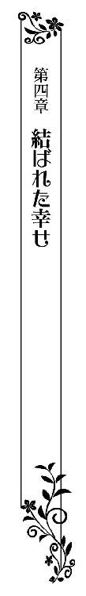
シャーウッド伯爵家の別荘は、街から半日ほど列車に乗り、駅から馬車で小一時間走ったところにある小高い丘に建てられていた。
ジェラルド男爵からは、思いのほか簡単に旅行の許可が下りた。挙式の日取りまで決まっているのだから、問題ないだろうと判断したようだ。けれど、羽目を外し過ぎないようにと、父親らしく出発前の娘に釘を刺してくることは忘れていなかった。
「ああ、気持ちいい......」
たっぷりと湯を張ったバスタブに浸かったティルレアは、大きなため息をもらしながら湯気が立ち込めている天井を仰ぎ見る。
別荘に到着したときはすでに陽は沈んでいたため、今日はとりあえず早く休もうということになり、サディアスに勧められるまま先に入浴をさせてもらっていた。
「部屋が別だと思わなかった......」
予想外のことに、湯の中でひとり小さく肩をすくめる。
同じ部屋で寝泊まりすると思っていたのに、荷物が別々の部屋に運び込まれたのだ。
ひとつのベッドで寝ることになったらどうしようかと、不安と期待が入り乱れていただけに拍子抜けしてしまう。
「でも、部屋を訪ねてくるかもしれないし......」
景色の豊かな別荘に招待されたのだから、散策をしたり、馬で遠出をしたりと、楽しみはたくさんあるというのに、邪な思いばかりで頭の中が占められている。
『ティルレア......』
浴室の扉が軽く叩かれ、サディアスの声が聞こえてきた。
「は、はい......」
全裸で湯に浸かっていたティルレアは、考えもなしにバスタブから飛び出し、扉の近くに設けられているタオルが載った棚へと急ぐ。
『入るよ』
「あっ......」
タオルに手が届くより先に扉が開けられ、生まれたままの姿でその場に呆然と立ち尽くす。
しとどに濡れた銀色の髪から、ポタポタと湯が滴り落ちていく。
「ああ、もう出たところだったのか」
サディアスは答えを待つことなく扉を開けておきながら、悪びれた様子もなくこちらを見つめてくる。
早々に入浴を終えたのか、膝丈の黒いガウンを羽織っている彼は、素足に室内履きを履いていた。
「あ、あの......着替えるから外で......」
恥ずかしくてたまらず、さりげなく両の手で胸を覆い隠す。けれど、彼は浴室を出て行こうとしない。
「サディアス......」
「早く身体を拭かないと風邪を引いてしまうよ」
脇の棚から取り上げたタオルを広げた彼が、ティルレアの肩にかけてくる。
「あ......ありがとう......」
礼もそこそこにタオルを胸の前で掛け合わせ、困惑しきりに彼を見上げた。
「僕が拭いてあげよう」
両の手を伸ばしてきた彼がタオルの端を掴んで引き上げ、濡れた銀の髪をすっぽりと包み込んでくる。
せっかく隠した裸体が再び露わになり、とてつもない羞恥に駆られたティルレアは彼の手からタオルを奪い、身体に巻き付けながら浴室を飛び出す。
「ティルレア......」
彼が浴室から出てくる気配を感じ、迷った末に部屋の中央に置かれた寝台に駆け寄った。
金色に塗られた四本の丸い柱を持つベッドは、贅沢な装飾が施された天蓋から緋色の幕が垂れている。
身を隠せる場所は他になく、慌ただしく重厚感のある朱色のカバーを外し、艶やかな絹地の上掛けを捲って中へと潜り込み、身体を小さく丸めた。
「ティルレア」
間もなくして上掛け越しに声が聞こえ、ベッドが軽く軋んだ。
彼がベッドに上がってきたのだろうか。恥ずかしくて上掛けから顔を出すことができず、息を詰めてジッとしていた。
「恥ずかしがり屋のお姫さまは、顔を見せてくれないのかい？」
再びベッドが軋み、上掛けが捲られる。
「サディアス......」
恥じらいに赤く染まった顔で見上げると、彼がなにも言わず隣に身体を滑り込ませてきた。
「可愛いティルレア、君が欲しい」
熱っぽい吐息で唇をくすぐってきた彼が、わななく桜色の唇にくちづけてくる。
「っ......」
唇を塞いだまま彼が身体を重ねてくると、ガウン越しに熱くて硬いものが腿にあたった。
それが彼自身であろうことは容易に想像がつき、鼓動が一気に速さを増す。
「ティルレア、愛してる。君のすべてを僕に......」
息を触れ合わせながら甘く囁き、唇を軽く噛んでくる。
「ん......っ」
甘酸っぱい痛みに、肩が小さく跳ねた。舌先で唇をなぞられ、跳ねた肩が小刻みに震える。
抗う気持ちなど脇上げるわけもなく、くちづけに身体の熱が高まっていき、羞恥に強ばっていたそこかしこから力が抜けていった。
「ふっ」
すっかり甘いくちづけに溺れていたのに、腰から撫で上げてきた手で乳房を鷲掴みにされた瞬間、反射的に顔を背けてしまう。
「ダメ......これ以上はダメよ、結婚式を挙げるまでは......」
出発間際に釘を差してきた父親の顔が脳裏に浮かび、乳房に触れている彼の手を押さえる。
「いけないことだってわかってるから、結婚するまで待つつもりでいたんだ。でも、もう待てそうにない......」
熱っぽい瞳で見つめてきた彼が、ティルレアの手を優しく払いのけ、胸に顔を埋めてきた。
「はぅ......」
胸の小さな突起をペロリと舐められ、大きくあごを上げて仰け反る。
「サディアス、お願いだからやめて......」
口では拒絶しながらも、彼を押し退けられない。
結婚前に身体を繋げるのは罪だし、父親を裏切ることになる。それでも、愛する彼に求められたら本気で拒めるわけがなかった。
「う......ふっ......」
口に含まれた乳首を吸われ、甘声がもれて胸が弾む。
舌先で硬く凝った先端をチロチロと舐め回され、むず痒さに身悶える。
執拗に乳首を舐めたり甘噛みしたりしながら、片手で腿を擦ってきた。慈しむように優しく撫でられ、甘い痺れに包まれていく。
「は......ぁ」
悪戯に腿を彷徨っていた手が内腿に滑り落ち、つけ根を目指して這い上がってくる。
ゾクゾクするような感覚に身を震わせたそのとき、柔らかな茂みに隠された小さな塊を指先が捕らえ、甘い疼きに腰が大きく浮き上がった。
けれど、快感に浸る間もなく乳首に歯を立てられ、ツンとした痛みに身を捩って逃げ惑う。
「やっ......」
そのひと声にサディアスが胸に埋めていた顔を起こし、息を乱しているティルレアの瞳を覗き込んでくる。
「本当にやめてほしい？ いまならまだ僕も抑えがきくよ」
気遣いを見せてきた彼を、戸惑い気味に見返す。
ここで嫌だと言えば、どれほど昂揚していようとも、思いやりがある彼はきっとやめてくれるだろう。
けれど、そんなことは望んでいない。ここで身体を繋ぎ合うのは罪深いことだ。それでも、彼と同じくらいティルレアも気持ちが昂まっていた。
「違うの......私......噛まれて痛かっただけで......」
「ティルレア......」
彼が驚きに目を瞠る。
どうやら、本気で中断する覚悟を決めていたようだ。
「本当は私......あの......あなたと結ばれたいって......」
自らねだるような真似は恥ずかしかったけれど、本心を伝えたい一心でありのまま言葉にしていた。
「ティルレア、僕はまだあどけない君に幾度、胸を射貫かれただろうか......」
優しく目を細めて愛しげに見つめてくる彼に腰を押しつけられ、異変に気づいて思わず息を呑む。
腿にあたっている熱を帯びた硬いものが、にわかに力を漲らせるのを感じたのだ。
男性の象徴は、興奮の度合いによって如実に変化すると教えられた。それをまさに体感したティルレアの胸に、自然と喜びが満ち溢れてくる。
「サディアス......」
見つめてくる瞳があまりにも熱く感じられ、目を合わせていられなくなったティルレアは、自ら頭を起こして彼の唇を塞ぐ。
唇はそのまま深く重ねられ、互いに貪るようにくちづける。絡め合う舌の甘さ、かすめる吐息の心地よさ、伝わってくる鼓動のすべてに、全身の熱が高まっていった。
「本当にいいんだね？」
唇をわずかに離したサディアスから改めて訊ねられ、はにかんでうなずき返す。
強引なところもあるけれど、やはり彼は優しい。こうして気遣ってくれることが嬉しくて、よりいっそう昂揚してきた。
「可愛いティルレア、ようやく君のすべてを僕のものにできる......」
感極まったような声をもらした彼が静かに起き上がり、身を隠していた上掛けが遠ざかる。
先ほどの戯れで、身体に巻きつけていたタオルが乱れてしまったようだ。たわわな胸が露わになっている。いまさらながらに恥ずかしくなり、引き寄せたタオルで胸を覆った。
（あ......）
胸を隠して安堵したのもつかの間、ガウンを脱いでいるサディアスを目にして息を呑む。
彼はガウンの下になにもつけていない。愛する彼の裸を見たとたん、大きく胸が弾んだ。
生まれて初めて目にした男性自身は、少し不気味に感じられた。己の身体で受け入れるのかと思うと、ちょっとした恐怖を覚えて顔を背けた。
「これは邪魔だね」
手を伸ばしてきた彼に、整えたばかりのタオルを剥ぎ取られてしまう。
「サディアス......」
往生際が悪いとわかっているけれど、両手で胸を隠して彼に背を向けた。
いきなり浴室の扉を開けて入ってきた彼に、生まれたままの姿を見られている。いまさらといった思いはあるのだけれど、やはり熱い視線を感じてしまうと隠さずにはいられなかった。
「その初々しさがたまらないな」
笑いを含んだ声が近くに聞こえると同時に、背中越しに抱きしめられる。
肌の温もりだけでなく、彼自身の熱と硬さを尻に感じ、思わず肩を窄めた。
目にしたものより、彼の屹立が大きく思えてしまう。脈動までもが伝わってきて、その生々しい感覚にますます身体が硬くなる。
「ん......ふっ......」
下腹に触れていた彼の手がするりと滑り落ち、柔らかな茂みを捕らえてきた。
彼が秘所に触れてきたのはたったの一度でしかない。それなのに、あの夜の出来事が鮮明に思い出され、茂みに隠された小さな塊が熱っぽく疼き出してきた。
指先で茂みを弄ばれていると、早く疼くそこに触れてほしくなってくる。快楽を忘れていない身体が、あさましくざわめき始めていた。
「は......あぁ」
こそばゆさに、肩を窄めたまま身を捩る。
たまらない快感を生み出す小さな塊に、間もなく彼が触れてくると思っただけで、下腹のあたりが熱を帯びてきた。
けれど、サディアスはさんざん茂みを弄んでおきながら、疼く塊にまったく触れることなく、乳房へと手を移してしまう。
「ん───っ」
指が食い込むほどに乳房をきつく掴まれ、わずかな痛みを覚えてあごを反らす。
「あふっ......」
続けて掌で乳首を撫で回され、痛みを打ち消す甘い痺れに吐息をもらして身悶える。
「気持ちがよさそうな声だ」
肩にあごを乗せてきたサディアスに耳たぶを甘噛みされ、さらには掴んだ乳房を激しく揺さぶられ、ティルレアの細い身体がしなやかに反り返る。
「ぃ......や......あっ、んんっ......」
豊かな乳房をやわやわと揉みながら、瞬く間に硬く凝った胸の突起を指先で弾かれ、全身が甘くて心地いい痺れに包まれていく。
「ふ......ぁああ......あっ」
彼が触れているのは乳房だけなのに、茂みの奥で小さな塊が物欲しげに脈打っている。そればかりか、重なり合う襞の奥がしっとりと湿ってきた。
「はっ......あっ......や......んんん......」
内耳を舐められ、首筋を啄まれ、乳首を執拗に弄られ、下肢の疼きが激しくなっていく。
いっこうに望む場所に手を伸ばしてこないサディアスに、あの夜、初めて味わった快感が忘れられないティルレアは焦れてしまう。
「サディ......アス......」
息を乱しながら呼びかけ、胸に触れている彼の手を押さえる。
「ここはいやなのかな？」
手を止めた彼が、肩越しに顔を覗き込んできた。
見つめてくる瞳がいつになく熱っぽい。尻にあたっている彼自身も、先ほどより硬度を増しているように感じられた。
初めて身体を繋げ合うときを迎えた女性は、すべてを男性に任せるものなのだろうか。どんなに焦れてしまっても、それを口にしてはいけないものなのだろうか。
家庭教師はそこまで教えてくれなかったし、ここには教えを請う相手もいない。疼く身体を持て余し気味になっているティルレアは、困り顔で彼を見返した。
「君がいやだと思うことはしないから、正直に言ってごらん」
彼は優しい声音で促してきたけれど、いやなわけではないからよけいに困ってしまう。
（どう言えばいいのかしら......）
望みを口にしていいものかどうかを迷い、唇をキュッと噛みしめる。
「いやなのかい？」
改めて問われ、小さく首を横に振った。
「続けても大丈夫？」
さらなる問いにも、同じように首を動かす。
「困ったお姫さまだ」
「だって......」
呆れ気味に笑われたティルレアは、正直に答えただけなのにと、頬を膨らませて彼を見返した。
「いやではないけど続けてほしくないのは、他にしてほしいことがあるからだね？」
胸を離れた彼の手が、肌を撫でながら下腹へと落ちていく。
「お望みは、ここかな？」
「いっ......」
指先で小さな塊をトントンと叩かれ、駆け抜けていった甘美な痺れに喉の奥を鳴らして身を震わせた。
「ここをどうしてほしいの？」
彼の指先は疼く塊を捕らえたままで、耳をかすめた囁きにすら身体が震える。
そこで気持ちよくなれることを教えてくれたのは、彼に他ならない。それなのに、あえて訊ねてくる彼は、なんて意地悪なのだろう。
「言ってくれないとわからないよ」
彼が甘い囁きで追い詰めてくる。
相変わらず彼は過敏になっている部分に触れたままだから、どうしても意識がそちらに向かってしまう。
意識すればするほど疼きは大きくなり、彼が教えてくれた快楽のことしか考えられなくなっていく。
言葉にすれば、あの蕩けるような感覚を再び味わうことができる。けれど、自ら口にするのは抵抗があった。
いったい、どうすれば望みは叶えられるのだろうか。疼きを収めてくれるのは彼しかいないのというのに、黙っていたらきっと知らぬ振りをするに決まっている。
「サディアス......」
覚悟を決めたティルレアは抱き留められている腕の中で身じろぎ、意地悪な彼を熱に潤んだ瞳で見つめ、震える指先で掴んだ彼の手をそっと茂みの奥へと導いた。
「ここを......」
自らこんなことをするのは、消え入りたいほどに恥ずかしかったけれど、他に方法が見つからなかった。
「よくできました」
楽しそうに言ったサディアスが、さらなる奥へと指先を滑らせてくる。
しっとりと濡れた襞を指先で何度かなぞり、愛撫を待ち望む小さな塊へと戻してきた。
「ああ......ぁ」
滑りがよくなった指先で先端部分を撫で回され、甘い痺れが湧き上がってくる。
あまりの気持ちよさに腰が淫らに揺れ動き、重なり合う襞の奥から泉のように蜜が溢れてくるような感覚に囚われた。
「ひっ......」
再び襞を捕らえてきた指先が、掻き分けるようにして中を探ってくる。
これから彼の屹立を受け入れる場所を弄られ、とてつもない羞恥に襲われたティルレアは、身を捩って逃げ惑う。
けれど、彼は片脚で巧みに細い身体の動きを封じ、分け入った襞の奥へと指を進めてきた。
「やっ......あっ、ああぁ」
信じられないことに、彼の指を受け入れたそこがクチュクチュと音を立てる。その音がやけにいやらしいものに感じられ、全身がカッと熱くなった。
「痛むかな？」
心配したような問いかけに、大丈夫と無言で首を振る。
「もう少し挿れるよ」
彼がゆるゆると指を差し入れてきた。
襞が押し広げられ、窮屈さに息が詰まる。ただ、痛みはほとんど感じられず、指の動きが止まったところで深く息を吐き出した。
「はぁ......」
肩を大きく上下させて呼吸を整える。
窮屈さは変わらない。それに、気持ちよくもなかった。ただならない疼きを放っている突起は、いつかまってもらえるのだろうかと、そちらばかりに考えが向かう。
「すぐにでも身体を繋げたところだけど、その前に君の望みを叶えてあげないといけないね」
首筋をかすめていった吐息が焼けるように熱く、背に伝わってくる鼓動がやけに速いのは、それだけ昂揚しているからだろう。
男性は女性と身体を繋げることで、絶頂を迎えることができると教えられた。自分ばかりが気持ちよくなろうとしてはいけないのだと、いまになって気づく。
「サディ......」
身勝手な自分を詫びようとしたそのとき、尻のあいだに熱くて硬いものをいきなり突き立ててられる。
内腿に伝わってくる脈動から、それが彼自身であることは確かめるまでもなく理解できた。
灼熱の楔と化した屹立で濡れた襞を擦られ、熱く熟した突起を押し上げられ、下腹の奥がズクンと疼いて仰け反る。
「ひゃ......」
「僕を感じながら達してごらん」
そう言って耳に舌を這わせてきた彼が、柔らかな茂みを指先で搦め捕り、下腹に向けて引き上げてきた。
「ん───っ」
引き攣ったような痛みに顔をしかめたのもつかの間、背後からトンと腰を突き上げられ、張り詰めた先端部分で突起を刺激された。
「はっ......ああぁ、あっ......」
指で弄られるのとは、また違った気持ちよさがある。
茂みを引き上げられて剥き出しになっているせいか、弾けた快感が格段に強かった。
「いいところにあたってる？」
息を荒くしている彼が、幾度も腰を突き上げてくる。
身体を繋げ合ってはいないけれど、彼も快感を得ているようだとわかり、嬉しくなるとともに安堵したティルレアは、下肢に広がっていく淫靡な痺れに無心で浸っていく。
「ゃ......んん......ふ......ぁ」
溢れてくる蜜を纏った彼自身の先端で、繰り返し突き上げられ、記憶に残る感覚が下腹のあたりに湧き上がってきた。
肩がひくりひくりと動き、下腹が妖しく波打ち、投げ出している脚の先までが小刻み震えてくる。
「やっ......ん、ふっ......あぁ、もっ......」
どこもかしこも焼けるように熱い。
熱に浮かされているかのように、身体の感覚がなくなっていく。
「ティルレア......」
吐息混じりに囁かれ、耳たぶを噛まれ、目眩を起こしそうだった。
全身をくまなく満たしていく甘ったるい痺れは、紛れもなくサディアスに教えられた絶頂の兆しだ。
粗相してしまいそうなのではなく、昇り詰めていく証しだとわかっているから、怯えることなく快感に身を委ねる。
「ぅ......」
ことさら強く背後から腰を打ち付けられた瞬間、下腹の奥でうねっていた熱い奔流に呑み込まれたティルレアは、咄嗟に彼の腕を掴んで縋りついた。
「あ────っ」
ついに極まり、彼の腕に爪を立てながら痙攣する。
せつないほどに甘い痺れが、達した小さな凝りから広がっていく。それは、指の先までを満たしていき、間もなくして全身が気怠さに包まれていった。
「はぁ......」
脱力したティルレアの手が、サディアスの腕からベッドに滑り落ち、パタッと小さな音を立てる。
吐き出す息がいつも以上に熱く、たわわな胸が大きく弾んでいた。余力の欠片も残っていない。感じているのは、甘美な開放感だけだった。
しかし、彼は余韻に浸っている間を与えてはくれない。疲れ切っている身体をすぐさま仰向けにされ、脚を割ってあいだに入り込んできた。
「サ......ディアス......」
息も絶え絶えに、膝立ちになっている彼を見上げる。
「ここまできたら、もう止められないよ」
抗いを許さない口調とは裏腹に、いつも以上に優しく微笑んだ彼が、力なく投げ出しているティルレアの脚を担いできた。
「あっ」
身体がズズッと引っ張られ、尻が高く浮き上がり、さすがに恐れをなしてしまう。
結婚前に身体を重ねるのはいけないことだけれど、別荘で二人きりなのだから、自然の流れと言えるだろう。
なにより、彼と結ばれる日を夢見てきた。その夢が、早くも現実になろうとしているのに、なにを恐れることがある。
頭ではそう思っているのに、破瓜は痛みを伴うものだと聞きかじっているから怖いのだ。
「怖がらないで、僕の可愛いお姫さま」
あやすように言いながら、己自信を片手に握ったサディアスが、硬く張り詰めた先端部分を秘所にあてがってくる。
「ひっ......」
声ばかりか、顔まで引き攣ってしまう。
それでも、彼とひとつになるためには、乗り越えなければならない試練なのだと自らに言い聞かせ、無の境地で目を閉じる。
「ゆっくり息を吐いてごらん」
彼に促されたティルレアは、目を閉じたまま深く吸い込んだ息を吐き出してく。と同時にクチュリと淫らな音がして、襞の奥に強烈な圧迫感を覚えた。
「息を止めてはいけないよ」
甘やかな声に、瞬間的に詰めてしまった息を吐き出す。
それを合図にしたかのように、彼がゆっくり腰を進めてきた。
熱く滾った彼自身を深く穿たれ、より強い圧迫感と、身体を引き裂かれるような激痛を覚えたティルレアは悲鳴をあげる。
「いやぁ────っ......あ......あっ......」
耳を劈く自分の声に慌て、咄嗟に両手で口を塞いだ。
脳天に向けて駆け抜けていった激痛に涙が溢れ出し、震え出した手が力なく開いていく。
ひとつになれた悦びなど感じる余裕もない。思い描いていたよりも、ずっと痛みが強くて我慢できそうになかった。
「痛い......サディ......やめ......て......」
あまりの痛さに、声をあげて泣きじゃくる。
すると、担いでいる脚をそっと脇に下ろしたサディアスが、胸を大きく上下させて苦痛に喘いでいるティルレアに身体を重ねてきた。
「ティルレア、泣かないで......」
両の手で抱きしめてきた彼が、涙に濡れた頬に顔をすり寄せてくる。
震える脚を広げて投げ出したまま、彼の背に両手を回してしがみつき、幼子のようにしゃくり上げた。
本当は嬉しいのに、喜べないのが辛い。彼を困らせてしまっているのが、申し訳なくてしかたなかった。
「ティルレア、愛してるよ。ようやく君とひとつになれた......」
柔らかな声音で耳をくすぐってきた彼が、頬を濡らす涙を舐め取っていく。
あとからあとから溢れてくる涙を丹念に舌で拭いながら、ときおり唇を啄んでくる。
灼熱の楔を穿たれているそこは、いまも痛くてしかたがない。けれど、幾度も唇を啄まれているうちに、痛みから意識が遠ざかっていった。
自分と同じように、彼もずっとことの瞬間を待ち焦がれていてくれたのだ。そう思ったとたん、熱いもので胸がいっぱいになり、彼とくちづけたくなった。
甘いくちづけをくれる彼と唇を重ね合っていれば、どんな痛みにもきっと耐えられる。そんな気がして、彼の唇に追い縋った。
「んっ......」
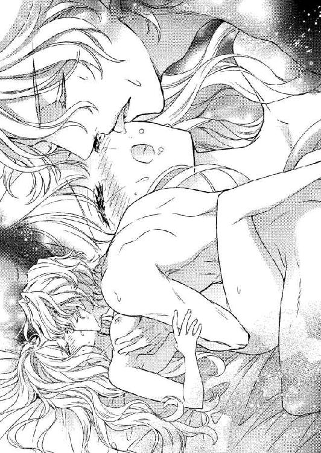
すぐさま深く唇を重ねてきた彼が、舌を忍び込ませてくる。
待ちかねたように自ら舌を絡めていくと、きつく吸い上げられた。
「ふ......っん」
絡め合った舌を吸い合うほどに、鳩尾の奥が熱くなっていき、次第に痛みを忘れていく。
「ぅ......」
掌で硬く凝っている乳首を撫で回され、むず痒いような感覚に唇を貪り合ったまま妖しく身をくねらせる。
胸から湧き上がってくる快感と、蕩けてしまいそうなくちづけに、ティルレアは我を忘れて溺れていった。
「はぅ」
すっかり忘れていた痛みが急に舞い戻り、唇から逃れてあごを反らす。
深く貫いている彼が、腰を動かし始めたのだ。ゆっくりと腰を引いたかと思うと、最奥を抉るように突き上げてくる。
「あ────っ」
彼が腰を引くと身体ごと持っていかれ、勢いよく突き上げてくると仰け反るほどに背がずり上がった。
そのたびに激痛に襲われているのに、彼は腰を使い続けてくる。乾いたばかりの頬が、新たに溢れた涙に濡れていった。
「ティルレア、力を抜いて」
耳に吹き込まれた熱い吐息混じりの声に、なぜかそこかしこが甘く粟立ち、痛みが薄れていく。
緩急をつけた抽挿に、細くしなやかな身体が翻弄され、シーツに乱れ散った銀色の髪が大きく波打った。
「あっ、あぁ......んんんっ......ん」
何度も灼熱の楔で最奥を突き上げられ、そこにせつない疼きが生じてくるとともに、己の内側に彼の猛りをはっきりと感じる。
かつて味わったことがない熱に全身が包まれ、奥深いところから沸々となにかが湧き上がってくるようだった。
「ティルレア、おいで」
不意に背に手を回してきた彼に身体を起こされ、深々と貫かれたまま腰を跨ぐように座らされる。
「ぁ......やっ」
より深いところを真下から突き上げられ、優雅に背をしならせて身悶えた。
「綺麗だよ、ティルレア......」
サディアスが緩やかに揺れている乳房にくちづけてくる。
ツンと尖った乳首を甘噛みされ、仰け反ったまま身を震わせた。
片腕に抱かれていなければ、後ろに倒れてしまいそうなほど、上体が傾いている。
しっとりと汗に濡れた白い肌は艶めき、長い銀の髪が首を振るたびに揺らめいた。
「可愛いティルレア、もっと声を聞かせて......」
茂みへと片手を滑り込ませてきた彼が、達したばかりでまだ疼きが残っている塊を指先で弾いてくる。
「ああぁ......んんっ......」
炸裂した快感によりあごが上がり、下腹がひくつく。
硬く尖ったそこを撫でたり摘まんだりしながら腰を使われ、最奥を突き上げられるティルレアは溢れかえる快感に打ち震える。
弄られている小さな塊、灼熱の楔に貫かれている襞、先端で押し上げられる最奥、くちづけられる柔肌のすべてで感じていた。
あれほど酷かった激痛もいまはもう消えてなくなり、全身が心地よい快感だけで満たされている。
「ティルレア......君の中が熱くてたまらない......」
しなやかに反らしていたティルレアの背を引き寄せ、片腕にきつく抱きしめてきた彼が、汗に濡れた肩口に顔を埋めてきた。
息を乱す彼が腰の動きを速め、最奥が痛いほどに突き上げられる。繰り返される抽挿に擦られる襞までが、甘やかに痺れてきた。
「ぁ......いゃ......」
下腹の奥がどんどん熱くうねってくる。
覚えのない感覚に、にわかに恐怖を覚えた。
小さな塊を弄られて達するときとは、あきらかに感覚が異なっていて、このままだと自分がどうにかなってしまいそうで怖い。
それなのに、彼は繰り返し突き上げてくる。何度も何度も最奥を押し上げられ、頭の中が白くなっていった。
「あっ......ああぁ────」
「ティルレア......僕と一緒に......」
艶やかな極まりの声に誘われたかのように、ことさら大きく腰を突き上げてきた彼に、骨が軋むほど強く抱きしめられる。
「ぅ......」
肩口で短く呻いたサディアスが、グッと腰を押しつけてきた。
妖しくうねる最奥で一気に膨らんだ彼自身がドクンと脈打ち、熱いものが注がれるのを感じる。
最奥を満たしていくのは、男性が達したときに放つという精なのだろうと、靄っている頭でぼんやりと考える。
「はぁ......」
大きく息を吐き出して顔を起こした彼に、真の絶頂を味わって脱力しきっている身体を軽く持ち上げられ、ティルレアは吐息をもらす。
「あふっ......」
そのまま繋がりを解かれ、ベッドの横たわらされる。すぐに身体を重ねてきた彼が、やんわりと抱きしめてきた。
嵐のような快感に巻き込まれ、これまでにない疲労感に襲われているティルレアは放心状態で、抱き返すこともできないでいる。
愛するサディアスと結ばれた悦びを言葉にしたいのに、それができないのが残念でしかたなかった。
「ティルレア......」
頬にくちづけられて力なく視線を動かすと、彼が嬉しそうに顔を綻ばせてこちらを見つめてくる。
魅惑的な笑顔、熱い眼差し、そして、身体に残るかすかな痛みと甘い痺れに、愛するサディアスと身も心も結ばれたのだと改めて実感した。
「サディアス......あなたとひとつになれた......」
思いを伝えたい一心からかすれた声で囁くと、さらに目を細めた彼が唇を塞いでくる。
唇はすぐに離れていったけれど、深い愛が感じられるくちづけだった。
「今夜のことは二人だけの秘密だよ」
青い瞳を悪戯っぽく輝かせた彼に、答えの代わりに大きく瞬いてみせる。
婚前に交わったことは、けっして誰にも知られてはいけない。ともに天に召されるまでの秘密なのだ。
悪いことをしたのだから、喜んだりするのは間違っている。それでも、彼と秘密を共有できるのが嬉しく、つい頬が緩んでしまう。
「明日は早起きをして遠乗りをしようかと思うんだけど、どうかな？」
ふと思いついたように誘いの言葉を向けてきた彼に、迷うことなくうなずき返す。
「ええ、いいわね」
「馬には乗れるのかい？」
「もちろんよ」
嬉しさに声を弾ませ、優しく髪を撫でてくれている彼を見つめ、広い胸に顔を埋める。
「おやすみ、愛しいお姫さま」
「おやすみなさい」
顔を上げて軽くくちづけ合ったティルレアは、再びサディアスの胸に顔を埋めて静かに目を閉じ、このうえない幸福感に包まれながら深い眠りへと落ちていった。
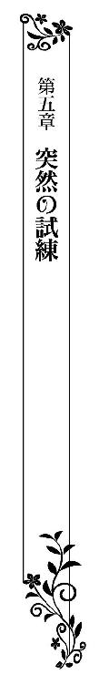
サディアスと二人で別荘を訪れてきたティルレアは、清々しく晴れ渡った爽快な朝を満喫している。
小高い丘に立つシャーウッド伯爵家の別荘は、高い塔を擁した堅牢な石造りの二階建てで、青々とした芝が生い茂る庭に囲まれていた。
建物の裏側には、日が長くなる春から秋にかけて狩猟を楽しめる、自然に溢れた緑の森が広がっている。
二人のための朝食は、心地よい風が吹き抜けていくテラスに用意されていた。
大理石を敷き詰めたテラスの中央に、純白のクロスがかけられた大きな丸いテーブルが置かれている。
その上に並んでいるのは、艶やかに磨かれた銀のカトラリ、金色の縁どりが施された花鳥柄の大小の皿、揃いのティーセット、そして、二人で食べるには充分すぎる料理の数々だ。
スコーン、マフィン、トーストが盛られた籠が中央に置かれ、その脇には小さな器に入ったクロテッド・クリーム、ジャム、バター、はちみつが添えられている。
それぞれの前に置かれた大皿には、ふんわりと焼き上がったオムレツ、こんがりと焦げ目のついた薄切りのベーコン、キドニーのソテーが、彩り豊かな温野菜と一緒に盛りつけられていた。
「なんて美味しいスコーンなの！」
サディアスと向かい合って座っているティルレアは、ジャムをたっぷりと塗ったスコーンを頬張るなり、大袈裟な声をあげて顔を綻ばせる。
食後に遠乗りを予定しているため、フリルの立ち襟がついた長袖の青いドレスを選んで纏ってきた。
装飾が控えめになっていて、袖口とスカートの裾に幅の狭いレースが施してあるだけだ。
長い銀色の髪は、後頭部の高い位置でひとつにまとめ、ピンク色のシルクサテンで仕立てた太いリボンを結んでいる。
煌びやかなドレス姿も美しいけれど、社交界にデビューしたばかりのティルレアには、やはり清楚で愛らしいドレスと快活な髪型が似合っていた。
「気に入ったかい？」
笑顔で訊ねてきたサディアスが、フォークですくい取ったオムレツを口に運んでいく。
彼は乗馬用の短いジャケット羽織り、膝まであるブーツにズボンの裾をたくし込んでいる。
金の髪を軽く撫でつけ、赤いクラヴァットを首に巻いた姿はとても爽やかで、正装しているときよりもずっと魅力的だった。
「ええ、バターの風味がとてもいいわ」
明るい声を答えて、再びスコーンを頬張る。
テラスに置かれた大きな白い丸テーブルに、サディアスと向かい合わせで腰掛け、朝の食事をしているのが楽しくてたまらない。
一夜明け、ベッドの中で目覚めて彼と顔を見合わせたときは、とてもつない恥ずかしさに襲われたけれど、それもとうに忘れてしまっていた。
「ティルレア、紅茶のおかわりは？」
彼の言葉に目の前のティーカップに目を向けてみると、すっかり空になっている。
「お願いするわ」
ティルレアが返事をするなり、彼はすぐさま片手を軽く挙げた。
静かに歩み寄ってきたのは別荘の管理を任されている執事のティモシーで、黒いお仕着せを身に纏っている。
五十代に半ばくらいだろうか、もう長らくシャーウッド伯爵家に仕えているとサディアスから教えられた。
片田舎にある別荘ではあるが、ティモシーを筆頭に大勢の使用人が働いていた。ティルレアの身の回りを世話してくれる、専任のメイドもいる。
ティルレアが生まれ育ったジェラルド男爵家は、タウン・ハウスとカントリー・ハウスを所有しているが、別荘は持っていない。
カントリー・ハウスは地方の広大な領地に建っていて、別荘など必要としないほどの自然に恵まれている。
とはいえ、こうしてシャーウッド伯爵家の別荘に招かれて来てみると、日常から切り離された特別な時間を過ごすのもよいように感じられた。
サディアスの妻となったあかつきには、この別荘を気兼ねなく訪れることができるようになると思うと、それだけで嬉しさに胸が弾んだ。
「ありがとう」
紅茶を満たしてもらったティルレアは、ティーポットを手にしているティモシーをにこやかに見上げる。
温厚そうな顔立ちをしている彼は、柔らかに微笑んでお辞儀をすると、ティーポットを静かにテーブルに下ろして戻っていった。
次期当主であるサディアスの妻として認めてくれているのか、ティモシーは常に敬意を払って接してくれている。それが、少し面映ゆくもあり、嬉しくもあった。
「楽しそうだね？」
「ええ、とっても楽しいわ。ここはとても景色が美しいし、お料理は美味しいし、みな私によくしてくれるし、なによりあなたと二人きりなんだもの」
ティルレアは思うままに答えてティーカップを摘まみ上げ、薫り高い紅茶を味わう。
舞踏会で再会したサディアスに求婚されてからは、夢のような日々が続いている。
初めて恋した男性の婚約者となり、内緒ながらも結ばれた翌朝に、こうして二人で語らっているのだから、楽しくないわけがなかった。
「本当に君は可愛いな」
嬉しくてたまらないそうな顔をしたサディアスが、膝から取り上げたナプキンで口元を拭いながらティモシーに声をかける。
「馬を用意してくれないか」
「御意」
サディアスの命を受けたティモシーが、建物の中へと戻っていく。
食事はもう終わりなのだと察したティルレアは、ティーカップを下ろしてナプキンを手に取り、口元を丁寧に拭った。
「さて......」
椅子から立ち上がってテーブルを回り込んできたサディアスが、ティルレアの背後に立って両の肩に手を置いてくる。
「お姫さま、参りましょう」
耳元で悪戯っぽく囁いてきた彼の髪に頬をくすぐられ、思わず肩を窄めてしまう。
「さあ、どうぞ」
椅子の背に手をかけてきた彼に促され、ティルレアは静かに腰を上げる。
美味しい料理を楽しんだあとは、彼と二人で遠乗りだ。広大な森の中を馬に乗って併走するのは、さぞかし気持ちがいいだろう。
乗馬の腕は自慢できるほどではなかったけれど、彼のことだからこちらに合わせて走ってくれるはずだ。
「行こうか」
サディアスにいきなり手を握り取られ、胸が大きく弾む。
並んで歩くときは、いつも彼の腕を取っていた。ダンス以外で手を握り合うのは初めてのことで、なんだか特別な気がしてしまう。
互いに手袋をはめているけれど、しっかりと握ってくれている彼の手から、温もりが伝わってくる。
そんな些細なことですら嬉しく感じられ、ティルレアは一緒にいられる幸せを改めて噛みしめていた。
「ここで遠乗りをするのは久しぶりなんだ」
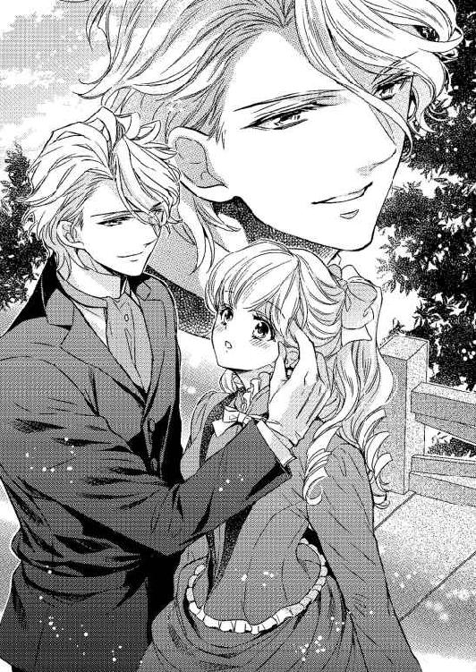
「そうなの？」
手を握り合って歩く楽しさに、満面の笑みで彼を見上げる。
「まあ、ここに来るのが久しぶりなんだけどね」
肩をすくめてこちらを見つめてきた彼が、ひとつにまとめている銀色の髪にさりげなく触れてきた。
「この髪型、僕は好きだな。君によく似合っている」
「ありがとう」
彼に褒められるのはどんなことでも嬉しく、勝手に頬が緩んでしまう。
これまでになく楽しいことや嬉しいことばかりで、罰が当たりやしないかと不安になるくらいだ。
「こっちだよ」
彼に導かれるまま大きな建物に沿って歩いて行くと、横に長い階段が巨大な扉へと何段も続いている正面玄関へと出た。
玄関前にはお仕着せに身を包んだ何人もの使用人が並んでいて、豪華な鞍を載せた二頭の馬の手綱を、二人の馬番がそれぞれに持っている。
馬の毛はどちらも真っ黒で、手入れの行き届いた馬体は朝陽を受けて艶やかに輝いていた。
サディアスの姿が目に入ったのか、馬番が手綱を引いてこちらに向かってくる。
よく調教されている馬はとてもおとなしく、嘶きもせずに脚を進めてきた。
「自分で乗れるかい？」
馬の脇で足を止めたサディアスに訊ねられ、ティルレアは大きくうなずき返す。
「大丈夫よ」
そのひと言に、腰を屈めた馬番が組み合わせた両手を前に出してくる。
片足を浮かせたティルレアはブーツの先を馬番の手に乗せ、両手で鞍を掴む。と同時に馬番が足を押し上げてくれ、反動をつけて鞍に横向きで座った。
「上手だね」
にこやかに言ったサディアスが、乗馬用のスティックを差し出してくる。
「ありがとう」
礼を言って受け取り、馬番から手渡された手綱とともに握った。
「はっ」
サディアスの息む声に、スカートの裾を整えていたティルレアは隣へと目を向ける。
彼はすでに鞍に跨がっていて、ティモシーから受け取ったトップハットを被っているところだった。
「用意はいいかい？」
紳士らしく身なりを整えた彼が、ティモシーから差し出されたスティックを握り取り、馬首を巡らせてくる。
「ええ、行きましょう」
明るい声で答え、手綱を操って馬を彼が跨がる馬に並ばせた。
顔を見合わせてうなずき合ったのを合図に、馬の腹を軽く蹴って走らせる。
男性とは違って鞍に横座りをしているから、同じ速さではとても走れない。それを承知している彼は、こちらの様子を見つつ、速さを調整してくれた。
「なんて気持ちがいいの！」
頬をかすめていく風の心地よさに大きな声をあげ、さらに馬に勢いをつけて走らせる。
高い位置でまとめている長い髪が、風に吹かれて舞い上がり、長いドレスの裾が音を立ててはためく。
少し前を走るサディアスは、背筋を真っ直ぐに伸ばした上体がまったくぶれない。瘤のように盛り上がった木の根を飛び越えるときも、張り出した枝の下をくぐり抜けるときも、馬の脚を緩めようとはしなかった。
なんとも鮮やかな彼の手綱捌きに、あとを追いかけるティルレアはつい見惚れてしまう。
「この先に泉があるんだ。そこまで行くよ」
軽く振り返ってきた彼が、片手に握るスティックで前方を指し示してくる。
「わかったわ」
風に負けない大きな声で答えると、彼が馬の脚を速めた。
とはいえ、追いつけない速さではない。すぐさま馬の脇腹を蹴って、彼のあとに従う。
「やだ......」
急に耳障りな羽音が頭の周りで聞こえてきた。
羽音から虻だとわかり、慌てて片手を振って追い払う。
自然が豊かな森の中なのだから、虻と遭遇することもあるだろう。刺されないように気をつけなければと思った矢先、乗っている馬があらぬ方向へと勝手に首を巡らせた。
「どうしたの？」
急なことに驚き、軽く手綱を引く。
すると、いきなり嘶いたかと思うと、後ろ足立ちになった。
「っ......」
身体が大きく後ろに傾き、息を呑んだティルレアは咄嗟に手綱を握りしめる。
幸いにも落馬しないですんだけれど、馬の興奮は収まっていないようだった。
前足を下ろしたものの、無闇やたらに首を振っている。虻が耳に入ったのかもしれない。
早く馬を宥めなければと、前屈みになって片手を伸ばしたとたん、再び嘶いた馬が勢いよく走り出した。
「きゃ─────っ」
馬上から振り落とされそうになり、手綱をきつく握ったまま鬣にしがみつく。
正気を失ったかのように疾走する馬は、瞬く間にサディアスが乗る馬を追い越していった。
「サディアース、助けて───」
落馬しないようにするので精一杯で、振り返ることもできない。
どうしたら馬は落ち着いてくれるのだろうか。乗った馬が暴走した経験がないから、対処のしかたなどわからず、恐怖ばかりが募ってくる。
「ティルレア！ ティルレア！」
サディアスの大きな声が、後方から聞こえてきた。
「しっかり掴まっているんだぞー、手綱から手を離すなー」
声が少し近づいてきたような気がする。
蹄の音も大きくなっているようだ。
きっと彼らなら助けてくれる。そう信じて手綱と鬣をしっかりと握り直し、固く目を瞑る。
「ティルレア───っ」
すぐ近くに彼の声が聞こえると同時に、握っている手綱をグイッと引っ張られる。
ハッとして目を開けると、馬を真横に並べてきた彼が、ティルレアの手綱を掴んでいた。けれど、興奮している馬は脚を止めようとしない。
このままでは、二人とも馬から振り落とされてしまうのではないだろうか。そんな恐怖に身を震わせながらも、馬が落ち着きを取り戻してくれることをひたすら祈る。
「どう、どう」
引きずられるように併走している彼が、ティルレアの馬を必死に宥めながら手綱をぐいぐいと引き締めていく。
「いい子だ、おとなしくしろ」
サディアスが力任せに手綱を引くと、急にティルレアの馬が脚を止めた。
「きゃっ......」
反動で身体が前のめりになり、馬の首を抱き抱えて持ち堪える。
「うわっ」
同時に聞こえてきた大声にパッと顔を起こすと、彼の身体が空中に放り出されていた。
信じ難い光景に、言葉もなく息を詰める。
続いて聞こえてきたのは、身体が地面に叩きつけられるドサッという音だった。
「サディア────ス！」
無我夢中で馬の背から下りたティルレアは、地面に横たわったままピクリとも動かない彼に駆け寄っていく。
ティルレアの馬だけでなく、彼が乗っていた馬も急に脚を止めたせいで、身体が投げ出されてしまったのだろう。
こちらに意識を向けていた彼は、受け身の体勢を取る間もなく地面に落ちたに違いない。
「サディアス！ サディアス！」
彼の脇に膝をついて呼びかけてみたけれど、目は閉じられたままだ。
「まさか......」
深く身体を前に倒し、恐る恐る彼の口元に耳を寄せてみる。
かすかではあるが肌に息を感じた。呼吸をしているとわかって胸を撫で下ろしたけれど、どこか怪我でもしていやしないかと不安でいっぱいになる。
見たかぎりでは、どこからも出血していない。けれど、無闇に彼の身体を動かすのは危険なような気がして、手も出せないまま呆然としてしまう。
「と......とにかく知らせなければ......」
馬に乗って走れば、いくらもせずに別荘に戻れる。そうわかっていても、怖い目に遭ったばかりだけに、馬に乗るのが怖い。
もし、また暴走したら、今度は誰も助けてくれないと思うと、怖じ気づいてしまうのだ。
「サディアス、すぐに戻るから待っていて」
不安が宿る胸を片手で押さえながら、彼に声をかけて立ち上がったティルレアは、馬の手綱をそれぞれ張り出している枝に巻き付けた。
改めてサディアスに目を向けてみたが、地面に投げ出されている身体は微動だにしない。
「大丈夫、気を失っているだけよ......」
不安を振り払い、別荘に向けて一目散に走り出す。
両手でドレスの裾をたくし上げて走っていると、今頃になって涙が溢れてきた。とめどなく流れてくる涙を、足を止めることなく片手で無造作に拭う。
衝撃的な出来事に直面した瞬間は、涙も流れてこないものなのか。サディアスから離れたとたん、最悪の事態ばかりが脳裏に浮かび上がり、恐怖に苛まれ始めた。
「急がなければ......」
もしかしたら、彼は不意に意識を取り戻すかもしれない。そのとき誰もいなかったら、彼は不安に思うだろう。できれば、ずっと彼のそばにいてあげたい。
それでも、いつ目を開けるかわからない彼を前に、じっとしていられるわけがないのだ。
とにかくいまは一刻も早く別荘に戻り、サディアスが事故に遭ったことを伝えなければと、ティルレアは鬱蒼とした森の中をひとり走っていた。
＊＊＊＊＊
「ぅ......ん」
上掛けに伏せた顔の下でなにかが動く気配にふと目覚めたティルレアは、ハッとしたように座っている椅子から腰を上げ、ベッドに身体を横たえて眠っているサディアスを見下ろす。
落馬して気を失った彼は、ティモシーが引き連れてきた使用人たちによって別荘の寝室へと運び込まれた。
連絡を受けてやってきた医者の診断によると、軽い打撲が数カ所あるだけで、命に別状はないということだった。
朝には目覚めるだろうと言われたティルレアは、寝ずの番をしようとベッド脇に置いた椅子に座ったのだが、どうやら知らぬ間に眠ってしまったようだ。
閉めたカーテンの隙間から、陽が差し込んでいる。マントルピースに置かれた時計の針は、まもなく九時を指そうとしていた。
「サディアス......」
一夜明けても、彼は目覚める気配がない。
不安に駆られたティルレアがティモシーを呼ぶためにベルを鳴らそうと、房飾りが付いた金色の紐に手を伸ばしたそのとき、扉が静かに叩かれた。
「どうぞ」
手を引っ込めて声をかけ、あたふたと乱れた髪やドレスの襟元を整える。
サディアスのそばを離れたくない思いから着替えの時間を惜しみ、遠乗りに出たままの姿で夜を明かしたのだ。
「おはようございます」
扉を開けた黒いお仕着せ姿のティモシーが、銀色のワゴンを押して入ってくる。
「サディアスさまはお目覚めになりましたか？」
彼はこちらに歩みを進めながら、ベッドで眠っているサディアスに目を凝らす。
「いえ、まだ眠っているみたいで......」
ベッド脇に立ったまま、ティルレアは小さく首を横に振った。
「さようでございますか......間もなくドクターがお見えになりますので、もう一度、しっかりと診ていただきましょう」
「はい」
力なくうなずき返し、ベッドの端に腰かける。
「お茶をご用意しましたので、ひと息つかれてはいかがですか？」
湯気が立ち上るティーカップを載せたソーサーを、ティモシーが脇から差し出してきた。
「ありがとう」
素直に受け取りはしたが、カップに口をつけることなくソーサーを膝に下ろし、サディアスを見つめる。
ティモシーたちによって夜着に着替えさせられ、顔の汚れもきれいに拭き取られている彼の寝顔はとても健やかに見えた。
こうして見つめていると、次の瞬間には目を開き、柔らかに微笑んでくれそうに思えるのだが、伏せている睫の一本も動かない。
（もし、このまま......）
サディアスは意識を取り戻すことなく、眠り続けるのではないだろうかと、ただならない不安に囚われてしまう。
「サディアス......」
手を伸ばして頬に触れ、静かに呼びかけてみると、彼の瞼がピクリと動いた。
「サディアス？」
「んん......」
再度の呼びかけに、小さく呻いた彼が横になったまま身じろぐ。
「ティモシーさん、来て！」
咄嗟に声をあげたティルレアは、サイドテーブルにカップが載ったソーサーを置いて立ち上がる。
「お目覚めになりましたか？」
すぐ脇に立ってきたティモシーが、身を乗り出してサディアスの顔を覗き込む。
「サディアス」
「サディアスさま」
声を揃えて呼びかけると、睫を震わせたサディアスがゆっくりと目を開ける。
「サディアス......」
両手を伸ばしたティルレアが彼の頬を挟むと、瞬きを繰り返しながら身体を起こしてきた。
まだ焦点が合っていないようだったが、澄んだ青い瞳は真っ直ぐにこちらを見ている。
「ここは......」
「サディアス、よかった......」
ようやく意識を取り戻した嬉しさに声を震わせ、急いでベッドに膝をついて上がり、彼を両手で抱きしめる。
「サディアスさま、ご気分はいかがでございますか？」
ティモシーは礼儀正しさこそ失っていなかったが、サディアスに問いかけた声は少し上擦っていた。気が休まることのない一夜を明かしたのだから、しかたのないことだ。
「すまないが、離れてくれるかい」
片手で肩を押しやられ、どこか痛むのかもしれないと、すぐに抱きしめる腕を解いて身体を遠ざけた。
「サディアス......」
「なぜ僕のことをサディアスと呼ぶんだ？」
思いがけない問いかけに、ティルレアは息を呑んでティモシーを振り返る。
「サディアスさま？ ご自分の名前をお忘れで？」
「僕の名前？」
解せない顔でティモシーが訊ねると、眉根をきつく寄せたサディアスが額を片手で押さえて項垂れた。
ただならない不安が湧き上がってきたティルレアは、無言でティモシーと顔を見合わせる。
「あなたはシャーウッド伯爵家のご長子、サディアス・レナード・シャーウッドさまでございますよ、覚えていらっしゃらないのですか？」
沈着冷静なティモシーもさすがに焦ったのか、ティルレアを押し退けるようにしてベッドに片手をつき、項垂れているサディアスをまじまじと見つめた。
「覚えがない......君たちにも会ったことがないはずだが......」
額に手をあてたまま顔を起こしたサディアスが、眉根を寄せたまま穴の空くほどこちらを眺めてくる。
「わからない......」
力なく首を横に振った彼が、再び項垂れてしまう。
「サディアス、私はあなたと結婚の約束をしているティルレアよ、本当に覚えていないの？」
ベッドに飛び乗って正座をしたティルレアは、項垂れている彼の肩を掴んで大きく前後に揺さぶった。
あんなに愛してくれていたのに、間もなく結婚式を挙げるというのに、忘れてしまうなんてあり得ない。
きっと、彼はからかっているのだ。悪戯なところがある彼は、こちらを驚かそうとしているとしか思えなかった。
「申し訳ないが、君のことも、彼のことも、僕は知らないんだ」
「嘘よ、そんなこと言わないで！」
知らないと言われたとたん大粒の涙が溢れ出し、震えだした両手で顔を覆う。
「ドクターがお見えです」
医者の到着を知らせるメイドの声が聞こえ、ティルレアはベッドを飛び降りる。
「ドクター、ドクター......」
焦げ茶色のラウンジスーツに身を包み、堅牢な黒い鞄を提げた初老の医者が寝室に姿を現すなり、勢いよく駆け寄っていった。
「ドクター......サディアスの様子がおかしいんです。私たちのことを覚えていなくて......」
医者の腕を掴み、涙が滲む瞳でどうにかしてくれと訴える。
「覚えていない？」
「ええ、自分の名前もわからないようで......」
「なるほど」
ティルレアの手を大丈夫だよと言いたげに軽く叩いてきた医者が、足早にベッドへ歩み寄っていく。
不安から両の手をきつく握り合わせて医者のあとを追い、ベッドの脇に立っているティモシーに並ぶ。
提げていた鞄をサイドテーブルに置き、ベッドの端に腰を下ろした医者が、難しい顔をしているサディアスと向き合う。
ティモシーの話では、医者はシャーウッド伯爵家と関わりが深く、サディアスの幼い頃から知っているとのことだった。
医者の他に頼れる者はいない。ベッドから少し離れて立つティルレアは、祈る思いで彼らを見つめた。
「サディアス君、私がわかるかね？」
「いえ、初めてお目にかかるのだと思いますが？」
医者の問いかけに首を横に振ったサディアスは、かなり混乱しているようで、忙しなく視線を動かしている。
もし、彼がここにいる誰ひとりとして覚えがないのであれば、見知らぬ場所で見知らぬ人に囲まれていることになる。さぞかし不安を感じていることだろう。
けれど、そんなことが起こりえるのだろうか。ある瞬間を境に、すべてを忘れてしまうなどとうてい考えられなかった。
医者はサディアスと言葉を交わしながら、脈を測り、瞳を覗き込み、耳の下に触れ、手や足の動きなどを確認している。
見守ることしかできないティルレアは、ときおり不安げな様子のティモシーと顔を見合わせ、医者が診察を終えるのを待った。
「目立った怪我もなく、意識もはっきりしている。察するに、君は落馬の際の衝撃で記憶が飛んでしまったのだろう」
サディアスに説明している医者の言葉に、ティルレアは再びティモシーと顔を見合わせる。
「ドクター、それは病とは異なるのでしょうか？」
「人はさまざまな理由で記憶を失うことがある。サディアス君の場合は、脳に強い衝撃を受けたことが原因だろう」
ティモシーの問いに答えた医者が、唇を噛みしめているティルレアを見上げてきた。
「レディ・ティルレア、挙式を控えているあなたにこんなことを言うのは残念でならないが、サディアス君の記憶が戻るかどうかはわからない。記憶喪失というものは、治療の施しようがないのだよ」
「そんな......」
声を震わせ、打ちひしがれる。
サディアスの妻となり、生涯を添い遂げる夢は本当に潰えてしまったというのか。もう二度と彼に愛されることはないかもしれないと思うと、涙がとめどなく溢れてきた。
「サディアス、サディアス！」
廊下から大きな声が響いてくる。
肩を震わせていたティルレアが振り返ると、間もなくして勢いよく扉が開き、シャーウッド伯爵と夫人が続けざまに駆け込んできた。
ティモシーから連絡を受けた伯爵夫妻が、いてもたってもいられず駆けつけてきたようだ。
「サディアス......」
ベッドで身体を起こしている息子を見た伯爵夫人が、安堵の声をもらして胸に手をあてる。
「落馬をして意識を失ったと知らせがあったときには、心臓が止まる思いだったのよ」
息子の無事を喜ぶ伯爵夫人が、静かにベッドに歩み寄ってきた。
サディアスの記憶が飛んでしまっていることを、彼らはまだ知らない。医者から話を聞かされたときのことを思うと、ティルレアは胸が痛んだ。
「打ち所が悪くて脳震盪を起こすことはよくあるものだ、おまえもレディ・ティルレアも無事でなによりだった」
ベッドの脇から声をかけた伯爵を、サディアスが訝しげに見上げる。
「サディアス君、こちらは君の父上と母上だよ」
ベッドから腰を上げた医者が、伯爵夫妻を片手で指し示す。
「僕の両親？」
「そうだ、君と一緒に暮らしているご両親だ」
息子と医者のやり取りを、伯爵夫妻が理解し難い顔で見つめる。
「ドクター、いったいなにを言っているんだね？」
「サディアス君は落馬の際に強い衝撃を受け、記憶を失ってしまったらしく、なにも覚えていないのだよ」
「記憶が？」
医者に顔を向けていた伯爵が、驚きの声をあげてサディアスに視線を移す。
「父親の私がわからないというのか？」
「ええ......」
サディアスが苦々しい顔で肩をすくめると、伯爵夫人がベッドの間際まで足を進めた。
「わたくしのことも覚えていないの？」
母親から詰め寄られたサディアスが、深いため息をついてうなずく。
「ドクター、いつかは治るのでしょう？ ずっとこのままではないのよね？」
くるりと向き直った伯爵夫人に、医者までが苦々しい顔で肩をすくめる。
「そんな馬鹿な......」
唇を噛みしめて肩を落としているティルレアに、伯爵夫人がふと目を向けてきた。
サディアスの事故は不可抗力だったとはいえ、責任を感じてしまっているから、申し訳なくて目を合わせられない。
「ティルレア、可哀想に......」
歩み寄ってきた伯爵夫人が、項垂れているティルレアを優しく抱きしめてくれる。
申し訳なさがよけいに募り、溢れてきたさらなる涙に肩を震わせた。
「治療ができればよいのだが、こればかりは私も手の施しようがなくてねぇ......このままの状態が続くかもしれんし、あるときふと記憶が蘇ってくるかもしれん」
医者のつぶやきに、伯爵夫人の腕に抱かれていたティルレアは、パッと顔を起こす。
「ドクター、失われた記憶が戻ることもあるのですか？」
「ああ、完全ではないにしても、記憶を取り戻したという症例は幾つも耳にしている」
医者の答えにわずかな希望の光が見えた気がし、伯爵夫人の腕からそっと逃れてサディアスに向き直る。
「サディアス、私があなたの記憶を取り戻してあげる......」
「君が？」
「私たちは結婚をする約束をしているんですもの、このままでいいわけがないわ」
確固たる思いで言い切ったけれど、サディアスは見つめてくるばかりでなにも言わない。
彼にとっては見知らぬ女性なのだから、いきなり結婚が決まっていると言われたところで納得し難いのだろう。けれど、諦めるつもりはさらさらなかった。
互いにひと目で惹かれ合い、二年の時を経ても思いは変わらず、再会すると同時に愛を確信し、身も心も強く結ばれのだ。その記憶のすべてが失われているとは思えないし、思いたくなかった。
「伯爵、伯爵夫人......」
伯爵夫妻に向き直ったティルレアは、真摯な瞳で彼らを見上げる。
「私はサディアスの記憶をどうあっても取り戻したいのです。彼の記憶が戻るまで、ここに滞在することをお許しいただけないでしょうか？」
勝手な申し出に、伯爵としばし顔を見合わせた伯爵夫人が、医者へと視線を移す。
「ドクターはどう思われて？」
「なにもせずにいるよりは、いいのではないかね。婚約者であるレディ・ティルレアがそばにいることで、記憶の糸を手繰り寄せられるかもしれんからな」
「そうね、それがいいかもしれないわ」
微笑んだ伯爵夫人が、ティルレアの手を取ってくる。
「ティルレア、ときに愛は奇跡を起こすものよ。どうか、サディアスの記憶を取り戻してちょうだい」
「伯爵夫人......ありがとうございます」
ポロポロと涙をこぼしながら、伯爵夫人の手を強く握りしめた。
「大丈夫、きっと上手く行くわ」
「はい」
励ましてくれた彼女に力強くうなずき返し、他人事のように黙ってこちらを見ているサディアスを振り返る。
「あなたとしばらくここで暮らすことにしたわ、いいでしょう？」
そっと伯爵夫人の手を離してベッドに歩み寄り、笑顔でサディアスを見つめた。
「ああ」
彼はしかたなさそうに肩をすくめたけれど、いまは同意してくれただけで充分だった。
「ティルレア、今日はここに泊まっていくつもりで来たのだけれど、サディアスと二人きりのほうがよければ、わたくしたちはこのまま街に戻るけれど？」
「でも、お疲れなのではありませんか？」
「わたくしたちのことは気にしなくていいのよ、ねぇ？」
伯爵夫人から同意を求められた伯爵が、柔らかに微笑んでティルレアを見てくる。
「ああ、邪魔なら邪魔と言ってくれてかまわないよ」
「そんな......」
伯爵から冗談めいた口調で言われ、困惑してしまう。
こちらを気遣ってくれているとわかるし、サディアスと二人きりになりたい思いはある。
ただ、かかわった人が多くそばにいたほうがいいような気もしているのだ。
「大勢いるとサディアスも戸惑うでしょうし、二人で過ごしたほうがいいと思うわ」
伯爵夫人は異なる考えを持っているようだが、遠慮させないようにとの配慮から言ってくれた可能性もある。
どちらがいいのか見当もつかないティルレアは、ひとまずは彼らの勧めに従おうと決めた。
「それでは、しばらくサディアスと二人で過ごさせていただきます」
「それがいいわ。サディアス、しばらくしたら顔を見に来るわ」
にこやかにうなずいてきた伯爵夫人がベッドまで行き、サディアスを軽く抱き寄せ頬にくちづける。
母と息子なのだから、別におかしな行為ではない。けれど、伯爵夫人を母親だと認識していないサディアスは、怪訝そうに眉をひそめた。
「早く私たちを思い出せるよう祈っているぞ」
退いた伯爵夫人と入れ替わりにベッド脇に立った伯爵が、穏やかな笑みを浮かべて息子の肩を叩く。
サディアスの表情は相変わらずだったが、伯爵は気にした様子もない。記憶が飛んでしまっているのだからと、半ば諦めているようだ。
息子が記憶を失ってしまったことを、彼らはどう思っているのだろうか。傍からはあまり心配しているように見えない。どちらかと言えば、楽観的にすら感じられる。
伯爵夫妻が胸に秘めている思いは知りようもないが、事故の連絡を受けてすぐさま駆けつけてきた彼らが、愛する息子を気にかけていないわけがない。
婚約者である自分と過ごしたほうが、記憶を取り戻すには効果的と考えたのかもしれない。
とにかく、いまはサディアスに早く自分たちのことを思い出してもらうのが先決だ。あれこれ考えていてもしかたない。
「あっ、お見送りを......」
扉へと向かう伯爵夫妻にふと気づき、ティルレアは慌てて駆け寄っていく。
「あの子と一緒にいてあげて。わたくしたちはドクターと少しお話をしたいから」
「はい」
片手を優雅に挙げて制してきた伯爵夫人に素直にうなずき返し、寝室を出て行く彼らをその場で見送り、そそくさとベッドに戻った。
「サディアス、お腹が空いているのではなくて？ なにか用意させましょうか？」
ベッドの端に腰かけ、笑顔を向ける。
あまりにも馴れ馴れしい態度を取ると、サディアスは嫌がるかもしれないと思ったけれど、これまでどおりに接しようと心に決めていた。
「いや、それより君のことを聞かせてほしい」
「私のこと？」
「ああ、結婚の約束をしているのなら、僕たちは愛し合っていたということだろう？」
真っ直ぐにこちらを見つめてくる青い瞳が、どこか不安げに揺らいでいる。
自分の記憶にはなにも残っていないのに、目の前にいる相手は自分のことをよく知っているという状況なのだから、彼も心穏やかではいられないだろう。
「私たちとっても愛し合っていたの......そうだわ、初めて出会ったときのことから話してあげるわね」
ティルレアは明るい表情と声で話すよう心がけながら、二年ほど前の出会いから話して聞かせ始めた。
サディアスは熱心に耳を傾けてくれているけれど、表情はあまり変わらない。運命的な出会いも、約束の再会も、求婚の言葉も、すべてを忘れてしまっているようだ。
思い出してほしい一心で話を続けているけれど、彼の心の片隅にも自分の記憶が残っていないのかと思うと悲しくてしかたない。
シャーウッド伯爵家を挨拶で訪れた日の夜、中庭で初めて秘所に触れられ、はしたなくも喘いでしまったことを、恥ずかしい思いをしながら話して聞かせたのに、彼は信じられないと言いたげに首を傾げただけだった。
「それでね......」
ベッドに片手をついて身を乗り出し、サディアスとの距離を縮める。
彼は驚いたように身を引いたけれど、かまわずそのまま真っ直ぐに見つめた。
こうなったら、罪を犯して結ばれた昨夜の出来事を話すしかないだろう。強く愛し合っているからこそ互いに求め、身体を繋げ合った。
どんなに愛し合っているかが、きっと彼に伝わるに違いない。それをきっかけに、記憶を呼び覚ますことができるかもしないのだ。
「昨晩、私とあなたはこの別荘で初めてひとつになったの」
いったん言葉を切ったティルレアは、上掛けに載せている彼の手をそっと握り取る。
瞬間、彼の手がピクリと動いたけれど、振り払ってくることはなく、胸を撫で下ろす。
「挙式を前に身体を繋げるのはいけないことだと、私たちもわかっていたわ。けれど、どうしても待つことができなくて、互いに求め合ってしまったのよ」
彼の手を握りしめ、いまだ不安を色濃く宿している瞳を覗き込む。
「君と僕が愛し合ったというのかい？」
「そうよ、生まれたままの姿で深く繋がり合ったの」
本来なら恥ずかしくて言えないような言葉も、サディアスの記憶を呼び戻すためなら、躊躇うことなく口にできた。
「君と......」
ひとしきりこちらを見つめてきた彼が、静かに目を閉じて項垂れる。
記憶の糸を辿ろうとしているのかもしれない。そんな気がしたティルレアは、手を握り取ったまま口を閉ざす。
どんなことでもかまわない、ほんの少しでもいいから思い出してほしい。ひとつでもきっかけが生まれれば、きっと瞬く間に記憶は蘇ってくるはずだ。
「はぁ......」
しばらくして大きなため息をもらしたサディアスが、顔を起こして目を開けた。
「ごめん、なにも浮かんでこない......」
再び項垂れた彼が、力なく首を横に振る。
どこか弱々しく感じられる彼の姿に、胸が激しく痛む。
シャーウッド伯爵家の長子として生まれた彼は、紳士的な態度を崩すことなく、魅力的な笑顔で見る者を惹きつけた。
それなのに、記憶を失ってしまったいまの彼は、まるで迷子になった子猫のように見える。
「サディアス......」
たまらず両手で彼を抱きしめ、頬をすり寄せた。
「大丈夫よ......きっと思い出すから......」
他にかける言葉もなく、ただただ愛してやまない彼を抱きしめる。
「ティルレア......本当に僕はこの手で君に触れたのか？」
耳をかすめた彼の言葉に、そっと腕を緩めて身体を遠ざけた。
「そう......あなたはこの手で、余すところなく私に触れてきたの......あなたの手の温もりを、私ははっきりと覚えているわ」
改めて彼の手を握り取ったティルレアは、自ら自分の頬へと導いていく。
彼は咄嗟に手を引こうとしたけれど、それを許すことなく頬に押し当てる。
「あなたの手で確かめて」
微笑んで促すと、彼が躊躇いがちに頬に触れてきた。
幾度となく頬を撫でてくれた手は、いまも変わらず温かい。
耳に心地よく響く声、美しい青い瞳、伝わってくる温もりのすべてが同じなのに、彼の記憶の中に自分がいないのが悲しくてならなかった。
「ティルレア......」
噛みしめるように名前を呼ばれ、溢れそうになった涙を堪えて彼にくちづける。
数え切れないほど、くちづけを交わしてきた。蕩けるように甘いくちづけを、自分の唇は鮮明に覚えているのだから、彼だって同じかもしれない。
サディアスを抱きしめて深く唇を重ね、自ら舌を差し入れていく。そのまま彼の舌を搦め捕り、やんわりと吸い上げる。
けれど、彼はくちづけに応えてくれない。気持ちばかりが急いてくるティルレアは、唇を離して彼をベッドに押し倒した。
「キスの仕方まで忘れてしまったのね」
悪戯っぽく微笑み、再び彼の唇を塞ぐ。
サディアスに手を握り取られただけでも胸をときめかせていたのに、いまは彼を押し倒して唇を奪っている。
とても信じ難いことだったけれど、彼の記憶を取り戻すためならいくらでも大胆になれるような気がしていた。
いつもなら率先して舌を絡めてくる彼も、驚くほど消極的だ。彼らしくないのは記憶をなくしているせいだと自らに言い聞かせ、差し入れた舌先で追いかけ回す。
「んっ......」
ようやく観念したのか、彼が舌を絡めてくる。
嬉しくなって熱心に舌を絡め合っていると、不意に彼が背に腕を回してきた。
なにかを確かめるようにドレスの上から、丹念に撫でてくる。思い出そうと努力しているように感じられ、くちづけ合ったまま彼のするに任せた。
「ふぅ......ん」
大きな手で脇腹を撫で上げられ、吐息混じりの声が重ねた唇の隙間からもれる。
触れ合わせている唇も、ドレス越しに触れてくる手も、紛れもなくサディアスのものだ。
けれど、熱っぽさが伝わってこない。彼にはまだ躊躇いがあるようだ。
どうすれば、身も心も蕩けるほどの熱烈なくちづけを交わせるのだろうか。いつ、彼は直に肌に触れてきてくれるのだろうか。
愛するサディアスと抱き合っているのに、いつもの彼とはあきらかに異なっているから、もどかしさばかりが募ってくる。
「あふっ......」
不意に唇を離した彼が、小さく息を吐き出したティルレアを抱きしめたまま寝返りを打ってきた。
ベッドに片肘をつきいて軽く状態を起こした彼が、大きく瞠った瞳を真っ直ぐに見下ろしてくる。
「ティルレア......瞳の色がとても美しい」
「そうして何度も見つめてくれたのよ、覚えていない？」
ティルレアは瞳を瞬かせ、柔らかに微笑む。
「ごめん......」
申し訳なさそうに首を振った彼が、ベッドに散った銀の髪に指を絡めてくる。
「絹のような手触りだな」
キラキラと輝く長い髪を、彼が指先で弄ぶ。
彼はすみれ色の瞳と銀色の髪を、とても気に入ってくれていた。記憶を失ってしまっていても、同じように双方に惹かれるのは、彼自身はなにも変わっていないことの証しだ。少し希望が持ててきた。
「君にはなぜか懐かしさを感じる......」
「ほんとに？」
小さくつぶやいたサディアスを、ティルレアは驚きの顔で見上げる。
くちづけを交わしたことによって、心の奥底に残された記憶が徐々に呼び覚まされてきているのだろうか。
「私を抱いて、そうすれば思い出すかもしれないわ」
普段なら赤面してしまいそうな言葉が、いともあっさりと口を突いて出てきた。
羞恥を忘れてしまうほど、一刻も早く彼に記憶を取り戻してほしい思いが強いのだ。
「でも、見知らぬ君を抱く......」
「私のことを知らないわけじゃないわ、忘れてしまっているだけよ」
サディアスの言葉を遮って言い放ったティルレアは、自ら両手を伸ばして彼の首に絡め、熱い眼差しを向ける。
「私はあなたのものよ、早く思い出して」
首に絡めて両手を引き寄せ、なにか言おうとした唇を塞ぐ。
本当はすべてを思い出してほしい。でも、もし彼が記憶を取り戻せなかったら、いちからやり直せばいいような気がした。
彼に対する愛は少しも変わっていないし、漠然とながらも彼はきっとこれまでのように自分を愛してくれると感じているからだ。
楽しかった数々の思い出が失われてしまうのは寂しいけれど、新たな思い出をたくさん作っていけばいいのだ。
「サディアス、愛してるわ」
息を触れ合わせて囁き、深く唇を重ねる。
先ほどは躊躇いがちだった彼も、今度はすぐに舌を差し入れてきた。
重ねられた身体から伝わってくる体温が、徐々に高まっていくようだ。くちづけ合うことで彼が昂揚してきたのだと思うと、なんだか嬉しくなってきた。
「ぅ......んっ......」
乱れたドレスの裾をたくし上げてきた彼が、優しく素肌を撫で上げてくる。
このまま身を委ねて身体を繋げ合えば、彼は記憶が蘇ってくるかもしれない。
ティルレアはそれだけを願いながら、愛するサディアスの唇を貪り、柔らかな愛撫に身を震わせていた。
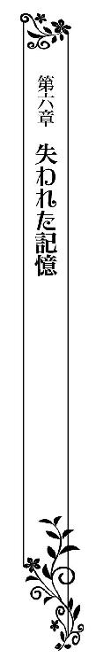
朝食を終えたティルレアはサディアスを誘い、別荘の庭園へと出てきていた。
春ならではの、彩り豊かな花々が植えられた花壇があり、丁寧に刈り込んだ低木が幾何学模様を描くように植え込まれている。
柔らかな緑の芝生と深い緑色の葉を茂らせる低木のあいだを、茶色の道が真っ直ぐに伸び、中央に噴水を擁した池が設けられていた。
吹き抜けていく春風に乗って漂ってくる花々と新緑の薫りや、青々とした広い空に輝く朝の太陽が、とても清々しい。
ライトグレーのラウンジスーツを身につけているサディアスは、艶やかな黒のトップハットを被り、浅黄色のクラヴァットを首に巻いている。
ティルレアは愛らしい小花の刺繍を胸元と裾に散らした、淡いピンク色のドレスを纏い、長い銀色の髪を柔らかに結い上げていた。
本来ならば、二人きりでの朝の散歩を思いきり楽しめるはずだった。けれど、不慮の事故によって事態は一変してしまい、ティルレアは複雑な思いを胸に抱いている。
「本当にいいお天気ね、美しい庭が遠くまで見渡せるわ」
腕を取って歩きながら、ことさら弾んだ声をあげると、サディアスがこちらを見て柔らかに微笑んだ。
「そうだね」
「この景色も覚えていないの？」
ティルレアの問いかけに、彼が小さく首を横に振る。
昨日は自ら率先して彼に身を任せてみたけれど、これといって効果は現れなかった。
その後は二人で食事をしたり、たわいない会話に興じたりして夜まで過ごし、同じベッドで眠りについた。
朝になれば記憶が戻っているかもしれないという、ティルレアのせつなる願いは叶うことなく、いまだ彼はなにひとつ思い出せないままでいる。
こうして一緒にいることを、彼が楽しんでくれているのは間違いない。距離を置かれないだけましなのかもしれなかったが、別人と話をしているように感じられてならないティルレアは、時が経つほどに悲しみが深くなっていった。
「サディアス、向こうのテムプルで休みましょう」
前方に純白の小さな建物を見つけ、彼の腕を引っ張るようにして歩いて行く。
貴族の庭園には、古代の神殿を模したテムプルと呼ばれる建物がよく見受けられる。
ドーム型の屋根と幾つもの柱を持つちょっとした空間は、休憩を取るのに打って付けの場所だった。
彼の肩や腰には、落馬した際に負った打撲のあとが残っている。ただ、本人が言うには、ほとんど痛みを感じていないらしく、生活に不自由はないようだった。
「君は元気なんだな」
楽しそうに笑ったサディアスが、さりげなく腰に手を回してくる。
ただ手を添えてきたのではなく、恋人を抱くかのように腰を引き寄せられ、ティルレアは思わず彼を見上げた。
彼の手はごく自然に動いたように感じられる。記憶は失ってしまっていても、彼の身体は自分のことを覚えてくれているような気がしてきた。
「どうしたんだい？」
目を細めた彼が、軽く首を傾げる。
「私のことを本当に忘れてしまっているの？」
酷な問いかけとわかっているけれど、聞かずにはいられなかった。
これまでのように優しく触れてくるのに、あんなにも愛してくれたこちらのことをまったく覚えていないというのが、どうしても信じられないのだ。
「ごめん......」
「私こそごめんなさい、私よりもあなたのほうが辛いのに......」
申し訳なさそうな顔をされ、慌てて詫びて項垂れる。
誰よりも記憶を取り戻したいと思っているのは、彼に他ならないだろう。
過去を失ってしまった苦しさは、当人でなければわからないというのに、なんてことを言ってしまったのだろうかと、ティルレアは深く後悔した。
「そんな顔をしないで」
ふと足を止めた彼に手袋に包まれた指先で頬を優しく包み込まれ、おずおずと顔を上げる。
「でも、私......」
「ティルレア、僕は君の話をすべて信じようと心に決めているんだ」
「どうして？」
予想外の言葉に目を丸くし、長い睫を瞬かせた。
彼とは本当に愛し合っていたのだから、嘘はなにひとつついていない。それでも、まったく記憶が残っていない彼が、こちらの話を信じてくれるということには驚きを隠せなかった。
「君のことは覚えていないけど、こうして一緒にいるとどんどん惹かれていく......きっと、何度、記憶を失っても同じように君に惹かれてしまうような気がする」
「サディアス......」
逸れることのない青い瞳に、胸がジワッと熱くなってくる。
きっと、何度、生まれ変わっても、自分たちは出会った瞬間に惹かれ合い、恋に堕ちていくような気がした。
「だから、君と出会って、愛し合って、結婚の約束をしたというのが作り話に思えないというか、僕ならそうしているだろうなって思えてね」
「今でも私が......ああ、そうではなくて、今の私が好きということ？」
柔らかに微笑んでいる彼を、大きく目を瞠ったまま見上げる。
「君のことをとても愛しく思っているよ」
「よかった......」
迷いの欠片も窺えなかった答えに、ティルレアが心から安堵すると、サディアスが再び歩き始めた。
腰に腕を回してきた彼に素直に身を寄り添わせ、静かな庭園をゆったりとした足取りで進んでいく。
木々と道によって幾何学模様が描かれた一画を抜けると、そこは一面の芝生になっていて、細い小道がうねうねと続いていた。
しばらく小道を進むと、豊かな水を湛える大きな池が現れる。そこで小道は二叉に分かれていたが、彼は池側に折れることなく真っ直ぐに歩みを進めた。
前方には白いテムプルがある。目的の場所がすぐそこに見えているのだから、直進するのはあたりまえだ。
けれど、この庭園を覚えていないはずの彼の歩みに、あまりにも迷いがないため、記憶喪失を演じているのではないかと疑いたくなってくる。それほどまでに、彼の振る舞いのすべてが自然に感じられるのだ。
テンプルは、床、屋根、柱のすべてが純白の大理石で造られている。中央には小さな翼を持つ天使の彫像が飾られていて、その脇に細長いベンチが置かれていた。
サディアスと身を寄せ合ったままベンチに腰掛けたティルレアは、さりげなく長いドレスの裾を整える。
「ティルレア」
「なあに？」
静かな声の呼びかけに、小首を傾げて彼を見返す。
「もし、僕の記憶が戻らなかったら......」
神妙な面持ちでこちらを見ている彼の口に、咄嗟に片手を押してた。
「サディアス、そんなこと言わないで！ あなたの記憶は必ず蘇ってくるわ、二人で過ごした楽しい時を、あなたが忘れてしまうわけがない......」
溢れてきた涙を堪えもせずに、何度も首を横に振る。
最悪の場合はいちからやり直せばいいと、昨日はそう思った。けれど、彼と過ごしていくうちに、その考えが間違っているような気がしてきた。
初めて出会った夜に交わした約束、舞踏会で再会して初めて踊ったワルツ、劇的なプロポーズなど、歳を重ねても語り合いたいときめくような思い出が数えきれないほどある。
新たに思い出を作っていくことはできるけれど、過去に遡ることはできないのだ。だからこそ、サディアスにはすべてを思い出してほしかった。
「泣かないで、ティルレア......」
両手で頬を挟んできた彼が、困り顔で見つめてくる。
彼のそんな顔は見たくない。早く泣き止まなければと思うのだけれど、なかなか涙が止まってくれなかった。
「んっ......」
いきなり唇を重ねられ、驚きに目を丸くする。
彼とは何度もくちづけ合っているのに、あまりにも唐突すぎたせいか驚きが大きく、涙がピタリと止まった。
「もう二度と言わないと誓うよ。だから、笑顔を見せてくれないか？」
「サディアス......」
唇を触れ合わせただけで顔を遠ざけた彼を、申し訳ない思いで見つめる。
これ以上、困らせないために必死に微笑んでみせると、彼がふと目元を和らげた。
「笑ってくれてありがとう、僕の可愛いお姫さま」
「サディアス！ あなたはそうやっていつも私を呼んでくれていたのよ」
胸を熱くする言葉を聞けた喜びに声を弾ませ、満面に笑みを浮かべる。
「そうなのかい？」
「そうよ、何度も何度も呼んでくれたわ」
「不思議だな、これまで口にした覚えがないのに」
両手で頬を挟んできたまま、彼が青い瞳でじっとティルレアを見つめてくる。
前と変わらない熱い眼差しに、嬉しさと悲しさが交錯した。どうしたら、彼の記憶は蘇ってくるのだろう。記憶を取り戻す方法が知りたくてたまらない。
「思い出せないのは残念だけど、きっと僕にとって君は、いつでもどんなときでも可愛いお姫さまなんだよ」
「サディアス......」
にこやかに言い切った彼に、両の手で抱きつく。
「ティルレア」
躊躇うことなく抱きしめてくれた彼が、慈しむように背を撫でてくる。
神に祈ることしかできないのが、もどかしくてならない。それでも、真摯に祈りを捧げ続ければ、慈愛に満ちている神は願いを叶えてくれるはずだ。
サディアスの記憶は、必ず戻ってくる。ティルレアはそう心に強く言い聞かせながら、優しく抱いてくれる彼の腕に身を任せていた。
＊＊＊＊＊
メイドに手伝ってもらい、ドレスから夜着へと着替えて髪を下ろしたティルレアは、サディアスが使っている隣室をひとり訪ねてきた。
彼はベッドで読書をしていたらしく、背に枕をあてて上体を起こし、上掛けを腰まで引き上げている。なにも身につけていなくて、裸の上半身を惜しげなく晒していた。
「今夜もこっちで一緒に寝るのかい？」
厚い書物を閉じ、手を伸ばしてサイドテーブルに置いた彼が、にこやかにティルレアを見つめてくる。
「いやでなければ......」
ベッドから少し離れた位置で足を止め、窺うような視線を彼に向けた。
向けられる視線が妙に恥ずかしく感じられ、意味もなく握り合わせた両手の指を動かしながら項垂れる。
夕食を終えたあとに少し談笑し、そろそろ寝ようかという話になったのだが、彼はベッドに誘ってくることなく、おやすみのキスをしただけで自分の部屋に戻ってしまった。
落馬をした翌日からいろいろなことがあり、彼は疲れているのかもしれないと考え、ティルレアもいったんはおとなしく部屋に下がった。
二人で一緒に過ごす時間はたっぷりある。急いだからといって、彼の記憶が取り戻せるわけではない。
そう思うものの、隣室に彼がいるとわかっているのにひとりで寝るのが寂しく感じられ、恥を忍んで訪ねてきてしまったのだ。
「さあ、どうぞ」
嬉しそうな彼の声に顔を起こすと、彼はすでに身を横たえていて、下肢を覆っている上掛けが半分ほど捲られていた。
男性が寝ているベッドに自ら上がっていくことに、いまさらながらに羞恥が湧いてくる。
「ありがとう......」
視線を足元に落とし、勇気を出してベッドに歩み寄っていく。
愛するサディアスと同じベッドで眠ることにも、身体を繋げることにも躊躇いはない。彼の温もりを感じていたいからこそ、部屋を訪ねていた。
それなのに、足が止まりそうになってしまう。素足に履いている軽やかな室内履きが、やけに重く感じられる。まるで足枷を嵌められているかのようだ。
自ら彼に「抱いて」と言った昨日の自分が信じられない。どうしてあれほど大胆になれたのだろうか。今は背を向けて部屋を出て行ってしまいたくらい、恥ずかしくてしかたなかった。
「お迎えに上がりましょうか？」
サディアスに冗談めかされ、おずおずと視線を上げる。
いつまで経ってもベッドに入ってこないことに、彼は焦れてしまったに違いない。
自分から訪ねてきておきながら、待たせるのは失礼だろうと思い直し、ティルレアは小走りにベッドへ駆け寄る。
「大胆な君も可愛いけど、恥ずかしがり屋さんの君はもっと可愛い」
「あっ......」
室内履きを脱ぐためにベッドの端に腰掛けるや否や、背後から手を伸ばしてきた彼が思いきり身体を引っ張ってきた。
不意を突かれて仰向けに倒れ込んでしまったティルレアに、すかさずサディアスが身体を重ねてくる。
「本当は君の寝室を訪ねて行きたかったんだ。でも、浅ましい男と思われたくないから我慢した」
片肘をベッドについて上半身を浮かせた彼が、倒れた反動で寝具に乱れ散った銀色の髪を優しく撫でながら、魅惑的な青い瞳で見つめてきた。
「こんなことを言ったら、君は情けないと思うかもしれないけど、ひとりでいると不安になってくるんだ」
「サディアス、私がそばにいるわ......不安がらないで......」
神妙な顔をしている彼の頬を、そっと両手で包み込む。
彼の弱音など聞いたことがない。口にせずにはいらえないほど苦しんでいるのかと思うと、可哀想でならなかった。
「ありがとう、君がそばにいてくれると、安心していられるよ」
「本当に？」
「ああ、気持ちがとても安らぐんだ」
「よかった......」
安堵の笑みを浮かべたティルレアは、愛しくてならない彼を一心に見つめる。
彼の心の奥底に、自分が存在しているような気がした。完全に記憶を失ってしまったわけではなく、これまでの記憶が深い眠りについているようにさえ思えた。
たくさん言葉を交わし、互いに触れ合えば、いずれ記憶も目を覚ますだろう。彼のひと言によって前向きになれたティルレアは、くちづけをねだるように形のよい彼の唇を指先でそっとなぞる。
「君は本当に可愛いね。初めて会ったのは二年くらい前だったかな？ 僕が君に一目惚れしたというのが納得できる」
ふと頬を緩めた彼が、くちづけを待ち望む唇を塞いできた。
「んっ......」
深く唇を重ねてきたかと思うと、急いたように舌を入れてきて、口内を弄り出す。
歯列の裏をなぞられ、口蓋を悪戯に突かれ、搦め捕られた舌をきつく吸われ、夜着に包まれた豊かな胸が大きく弾む。
「ふ......っ」
熱い吐息がこぼれ落ちるほどに、体温が高まっていく。
夜着越しに伝わってくる鼓動や、ときおり触れ合う吐息が心地よくてたまらない。
「んふっ......」
唇を重ねたまま身体をずらしてきた彼が、夜着の腰紐を容易く解き、中へと片手を差し入れてくる。
抗うことなく身を任せていると、瞬く間に夜着が脱がされた。下着をつけていないから、一糸纏わぬ姿を晒すことになったけれど、互いに同じであれば羞恥も感じない。
「あふっ」
くちづけを終えた彼に寝返りを打たされ、背中越しに抱きしめられる。
するりと前に落ちてきた手でたわわな乳房をやんわりと掴まれ、さらには小さな突起を指先で摘ままれ、身体中に甘い痺れが広がっていく。
指先で乳首を弄びながら、ティルレアの肩にかかる銀色の髪をそっとかき上げてきた彼が、露わになった首筋に唇を押しつけてきた。
音が立つほどに柔肌を吸われ、震えが走るような感覚に甘声をあげて、細く尖ったあごを反らす。
「ふんっ......ああぁ」
乳房に指が食い込んで、ちょっとした痛みを覚える。乳首を指先で弄られ、一瞬にして痛みがむず痒さに取って変わった。
「やっ」
硬く凝った乳首を指先で弾かれ、下腹の奥に妖しい疼きが生じる。
それはすでに馴染みのある感覚で、まるで連動しているかのように茂みの奥に潜んでいる小さな塊を疼かせた。
「強すぎたかな？」
耳をかすめたどこか心配げな彼の声に、前を向いたまま小さく首を横に振る。
「大丈夫......」
本当は「もっとして」と続けたかったけれど、さすがに口にするのが憚られ、思わず出そうになった言葉を飲み下していた。
「よかった」
安堵の声をもらした彼に、鷲掴みにされた乳房を大きく揺さぶられる。
横たえている細い身体が一緒に揺れ動くと、いったん手を離した彼がティルレアの片脚を持ち上げて自分の腿に絡めさせてくる。
わずかだけれど脚が開き、秘所が無防備に晒された。彼の目には見えていないとわかっていても、妙な恥ずかしさを覚えて脚を下ろそうとすると、すぐに片手で制されてしまう。
「ダメだよ」
優しく窘めてきた彼が、ティルレアの脚を制している手を秘所へと滑り落としてきた。
「んっ」
指先に襞を捕らえられ、肩が跳ね上がる。
「もう濡れているようだ」
重なり合う襞を指先で割ってきた彼に耳元で言われ、自覚がなかったティルレアは淫らな指摘に羞恥を煽られて顔が赤くなる。
「やっ......」
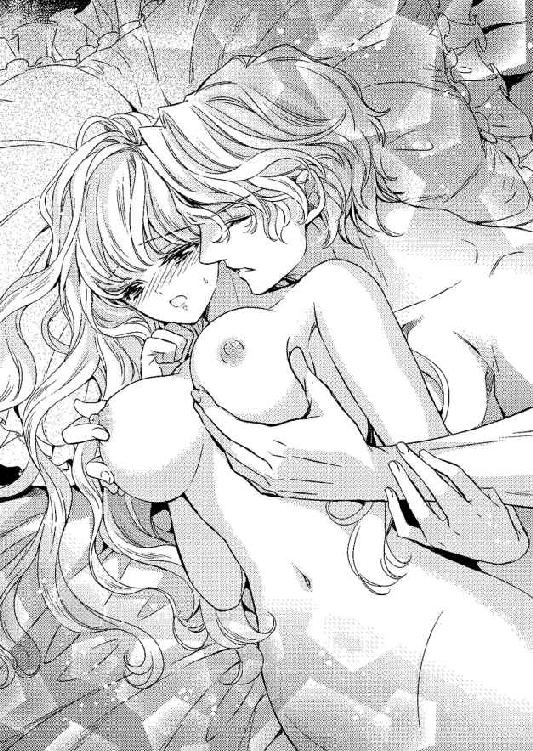
無駄な抗いと知りつつ身を捩って逃げ惑うと、彼が指先を襞の奥へと進めてきた。
浅い位置で指先を抜き差しされ、こそばゆいような感覚にぴたりと動きを止める。
「物欲しげにここが蠢いている」
さらに言葉で煽られ、全身が燃えるように熱くなった。
愛し合っているのだから、恥ずかしく思う必要はない。愛の行為は尊いものなのだと頭ではわかっていても、言葉にされると消え入りたくなってしまうのだ。
「はっ......ああぁ......」
蜜に濡れた指先が柔らかな茂みの下へと移り、どこよりも敏感な場所を捕らえてくる。
軽く触れただけなのに、そこから甘い痺れが駆け抜けていき、そこかしこが心地よい快感に満たされていった。
「君のここは小さくて感度がいいね」
小さな塊を守る包皮を指先で捲り上げ、露わになった先端を指の腹で撫で回してくる。
彼が記憶を失ってから身体を繋げたのは、一度きりでしかない。それなのに、まるでティルレアの身体を記憶しているかのように、彼の手はなんの躊躇いなく動いて翻弄してくる。
「やっ......ああ......あ......」
わずかな愛撫にツンと尖った塊を執拗に指の腹で撫でられ、腰が淫らに揺れ動く。
「あ......ひっ」
彼の指が触れているそこで快感がとめどなく弾け、下肢が甘く痺れてくる。
「や......ああぁ......ぁ......」
小さな塊が痛いほどに疼き、彼の腿に絡めている脚が震え出す。
「はっ......うん......」
疼くそこに爪を立てられ、ジワッとなにかが漏れてきそうな感覚に襲われる。
一方的に喘がされているから恥ずかしい。けれど、彼から与えられる快感に、意思に関係なく身体は取り込まれていく。
サディアスの肩に頭を預けてあごを大きく反らし、腰を前後に揺らして甘美な痺れに酔いしれるティルレアは、自分の身体が蕩けていきそうな錯覚に囚われていた。
「そろそろ限界かな？」
耳をかすめていく甘い声音にすら身を震わせ、コクコクとうなずき返す。
下腹の奥も、弄られている小さな塊も、焦れったいほどに疼いている。身も心も解かしてしまう甘美な感覚を、早く味わいたくてしかたなかった。
「僕の可愛いお姫さまは素直だね、特別なご褒美をあげよう」
熱い吐息混じりの声を耳に吹き込きこまれ、期待に露わな肢体がより細かく震える。
けれど、なぜか彼は疼く凝りから手を遠ざけてしまう。そればかりか、抱きしめる腕を解いて起き上がった。
あと少しで頂点にたどり着けるというのに快感が遠ざかり、つい恨みがましい思いで彼を見てしまう。
「意地悪したわけじゃないから怒らないで」
優しく微笑んできた彼が、ティルレアの脚を大きく割ってきた。
いきなりのことに目を瞠ると、こともあろうに彼が広げた脚のあいだに入り込んでくる。
慌てて膝を閉じようとしたけれど、抗う間もなく両の腿を押さえ込んできた彼が下腹に顔を近づけてきた。
「サディアス？」
なんだかとても恥ずかしくなり、ティルレアは激しく身を捩る。
「ひっ......」
甘く疼いている場所を舌先で突かれ、かつてない衝撃を受けて硬直した。
「いやよ、サディアス......やめて......」
彼はティルレアの訴えに耳を貸してくれず、何度も何度も小さな塊を舐めてくる。
秘所に顔を埋めているだけでも考えられないことだ。そのうえ、そこに舌を這わせてきているのだから驚く。
「あっ......ふ......」
いますぐ押し退けたいほど恥ずかしいのに、湿った舌先で刺激される心地よさに両の手を動かすことすらできない。
舌の感覚は指と比べものにならないほど気持ちよく、押さえ込まれている脚から自然に力が抜けていった。
「はっ......んっあ、ああっ......」
疼き続ける小さな塊を強く吸われ、舌先で先端を転がされ、かつて味わったことがない強烈な快感に溺れていく。
「んふっ」
全身の震えが止まらなくなり、いったんは薄れたあの絶頂間際に下腹を支配する感覚が舞い戻ってきた。
「やっ......ああぁ......もっ......」
指先にまで広がっていく甘酸っぱい痺れに、髪を乱して身悶える。
「サディ......アス......」
音が立つほどに敏感な塊を吸い上げられ、ついに限界を超えてしまう。
「ああああぁ──────っ」
嬌声を響かせ、しなやかに背を反らして昇り詰めていく。
そのあいだ舌での愛撫は止むことなく、痛いほどの快感にティルレアは全身を打ち震わせた。
「んっ」
極まって硬直した身体が、力なくベッドに落ちる。
頭の中が真っ白でなにも考えられない。ゆるゆると広がっていくたまらない開放感に無心で浸る。
「ティルレア、特別なご褒美の感想を聞かせて」
身体を重ねてきたサディアスに訊ねられ、夢居心地だったティルレアは現実へと引き戻された。
「サディアス......」
感想など恥ずかしくて口にできるわけがなく、困り顔で彼を見返す。
「もしかして、初めてではなかったのかな？」
初めて身体を繋げたときの記憶を失っている彼は、曖昧な笑みを浮かべて見つめてきた。
「いいえ、初めてよ......」
正直に教えてあげなければといった思いがあり、顔を真っ赤にしながら答えたティルレアは恥ずかしげに睫を伏せる。
「じゃあ、初めての感想を聞かせて」
安堵の笑みを浮かべるとともに改めて訊いてきたサディアスが、汗が滲む額に張りついた銀色の髪をそっとかき上げてくれた。
「言わないといけないの？」
こういった状況で感想を言わせるのは意地が悪いとしか思えず、不満げに上目遣いで彼を見返す。
「君をどんなふうに愛してあげたのか覚えていないから、ちゃんと気持ちよくなってくれているのか、それが心配なんだ」
思いがけず真摯な瞳を向けられ、彼の苦悩を知ったティルレアは咄嗟に両手で抱きしめる。
「大丈夫よ、私、身も心もあなたに満たされているから、心配なんかしないで」
「本当に？」
「ええ」
にこやかにうなずき返し、広い胸に頬をすり寄せた。
「よかった......」
小さくつぶやいた彼が、きつく抱きしめてくれる。
と同時に、腿に熱く脈打つ屹立があたり、彼がまだ悦びを味わっていないことを思い出す。
「サディアス、ねえ......」
「なんだい？」
「もっとして......」
彼のために頑張ってみたけれど、恥ずかしくて彼を見ることはできなかった。
それでも、思いは充分に通じたのか、弾かれたように顔を上げた彼が、満面の笑みで見下ろしてくる。
「本当に君は可愛い......こんなにも可愛い君の記憶を僕から奪ってしまった神様は、なんて意地悪なんだろう......」
せつない声を響かせた彼に、ティルレアはことさら明るい笑顔を向けた。
「私たちがあまりにも強い愛で結ばれていたから、神様は嫉妬に駆られてちょっと意地悪をなさったのよ。でも、私たちの愛が変わらず強ければ、きっと元に戻してくださるわ」
「そうだね、もっと愛し合わないと」
笑顔でうなずき返してきた彼がおもむろに身体を起こし、ティルレアを俯せにしてくる。
そのまま腰を引き上げられ、四つん這いにさせられた。彼に向けて尻を高く突き出す格好となり、あまりの恥ずかしさに慌てて振り返る。
「もっとしてって言っただろう？」
両手で尻を掴んできた彼は怒張を秘所にあてがってくると、有無を言わさぬ勢いで突き上げてきた。
「あぅ......」
唐突な挿入に、ティルレアの身体が前のめりになる。
「ああ、ティルレア......君の中はなんて気持ちがいいんだ......」
感じ入ったような彼の声に羞恥をことさら煽られ、ベッドについている両手に赤く染まった顔を埋めた。
「ティルレア......」
サディアスが両手で尻を掴んだまま、ゆっくりと腰を使い始める。
緩やかな抽挿に合わせ、溢れ出してきた蜜がクチュクチュと嫌らしい音を立てた。
音が立つほどに秘所が蜜に濡れているのは、彼を愛しているからだ。身体を繋げ合うことに悦びを感じるからこそ、蜜はとめどなく溢れてくる。
それでも、静かな寝室に響く淫らな音を聞けば平常心ではいられない。顔ばかりか、身体中が羞恥に赤く染まっていった。
「ぁ......ああっ......ん」
灼熱の楔と化している彼自身で、深いところを腰が浮くほどに突き上げられ、下腹のあたりが熱く疼く。
何度も何度も同じようにされ、大きくなっていく疼きに甘声が勝手にもれてきた。
「ふ......ん、ああぁ......」
激しくなっていく抽挿に、下向きになっているたわわな乳房が前後左右に揺れ動く。硬く凝った乳首が寝具に擦れ、そこが甘痒くなってきた。
さらには、彼の舌によって絶頂へと導かれたばかりの小さな塊までが、新たな熱に包まれてくる。
「ティルレア......君の中が熱くて、僕のが溶けてしまいそうだ......」
熱っぽい声をもらした彼が、にわかに抽挿を速めてきた。
彼の呼吸はいつになく乱れている。ともに快感を得ているのだと思うと嬉しさが込み上げ、恥ずかしい格好をしているのも忘れていく。
「ひゃあ......」
最奥を突き上げてくる彼に、甘く疼きが残っている小さな塊を摘ままれ、そこで弾けた快感に腰を大きく揺らしてしまう。
「もう一度、僕とイッて」
「あっ......やぁ......」
背後から力強く突き上げられ、指先で疼く凝りを弄られ、高く掲げている尻を左右に振りながら下腹を波打たせる。
寝具に擦られ続けている両の乳首からも快感が湧き上がっていて、もうどこでどう感じているかすらわからない。
「あんっ」
「もう少しだよ、ティルレア......」
腰を使うサディアスの切羽詰まった声にすら、快感が増幅されてしまう。
顔を伏せている両手に熱い吐息をこぼしながら、ティルレアは再び下腹の奥を支配し始めたあの感覚に意識を集めていく。
「サディ......あっ......ふ、ああぁ......」
小さな塊を指先で執拗に撫で回され、ときにきつく摘ままれ、弾ける強い快感に腰が淫らに揺れ動いた。
穿たれている灼熱の楔がふいに膨らみ、内臓が押し上げられるような錯覚を起こす。
ますます抽挿が速まっていき、身体を揺さぶられるティルレアの下腹の奥から、抗い難い官能の大波が押し寄せてくる。
「ん─────んっ」
「くっ......うう」
唇を噛みしめて達したティルレアが頭を反らして身を震わせると同時に、極まった声をもらしたサディアスが腰を強く押しつけてきた。
動きを止めた彼が最奥に向けて精を迸らせ、内側が心地よい熱に満たされていく。
「はぁ......」
彼の深いため息が聞こえ、次に熱の塊が引き出される。
摩擦によって痺れている柔襞を擦られ、ブルリと身震いして脱力したティルレアは、そのままベッドに身体を横たえた。
「ティルレア......」
そっと身体を添わせてきた彼に抱き込まれ、疲れ切っている身体を抗うことなく委ねる。
「サディアス......」
思いの丈を込めて名を呼び、しっとりと汗ばんでいる彼の胸に頬を寄せた。
身体を満たしているのは、心地よい余韻だ。けれど、胸の内にはもやもやとしたものが渦巻いている。
彼は惹かれていると言ってくれたし、愛情を込めて抱いてくれる。それを嬉しく思う一方で、記憶がない彼にとって自分は出会ったばかりの相手にすぎないと思うと、どこか虚しさを覚えてしまうのだ。
ともに快楽に溺れた悦びに、素直に浸れないのが寂しくてしかたない。きっと彼も心のどこかで同じように感じているだろうと思うと、やるせなくなってしまうのだった。
「可愛い僕のお姫さま、目覚めたら君を思い出していることを祈ってくれないか」
サディアスの口調は明るかったけれど、せつなる願いに感じられたティルレアは、抱きしめてくれている腕の中で身じろいで顔を上げる。
「もちろんよ」
大きく目を見開いて真っ直ぐに見つめ、ふと口元を綻ばせた彼にくちづけた。
サディアスのためなら、いくらでも祈る。二人の思い出を彼が取り戻せるなら、夜を明かして祈ってもかまわない。
片腕をサディアスの首に絡めたティルレアは、ただひとつしかない願いを念じながら、いつまでも唇を貪っていた。
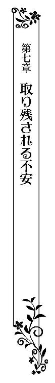
柔らかな陽に包まれた居間の窓際に置かれた小さなテーブルを挟み、サディアスと向かい合わせに座っているティルレアは、午後のお茶を楽しんでいた。
彼が記憶を失ってから、すでに一週間が経っている。けれど、過去を思い出す気配はまったくなく、時だけが無情に過ぎていくばかりだった。
ティルレアが別荘に留まることを決めたその日に、ティモシーが事情を伝えるための使いをジェラルド男爵家に出してくれていて、理解を示してくれた両親は今のところなにも言ってきていない。
とはいえ、結婚前の娘が家を空けて一週間ともなれば、さすがに黙ってはいないはずだ。
近いうちに彼らはここを訪ねてくるか、一度、実家に戻ってくるようにと言ってくるに違いない。
「この後はなにをして過ごそうか？」
ティーカップをソーサーに下ろしたサディアスが、そう言って柔らかに微笑む。
深い緑色のラウンジスーツを纏い、白いシャツに赤いクラヴァットを合わせている彼は、高い背もたれにゆったりと寄りかかり、長い足を優雅に組んでいる。
アーチを描くガラス窓から差し込む陽に、金色の髪と魅惑的な青い瞳が輝きを増していた。
こうしてのんびりと居間で午後のお茶を楽しんでいる彼は、とても記憶を失っているようには見えない。それくらい、振る舞いがごく自然で、贅沢な空間にその姿が馴染んでいた。
「カードでもして遊びましょうか？」
ティルレアは小首を傾げ、手にしているティーカップから紅茶を静かに啜る。
四角い襟をレースのフリルで縁取り、肩山がこんもりと膨らんだ長袖のドレスを纏い、長い銀色の髪を後ろでひとつにまとめ、赤いリボンを結んでいた。
このところ、あまり髪を結っていない。簡単に束ねたスタイルのほうが好きだと、サディアスが言ってくれたからだ。
「カードで遊ぶなら、なにか賭けないか？」
彼が悪戯っぽい瞳を向けてくる。
不思議なことに、彼はカードの遊び方は記憶していた。ダンスのステップも同じで、易々と踊ってみせたのだ。
身近な人間の記憶はすっぽりと消えてしまっているのに、新たに覚えればいいようなことは忘れていないのだからいやになってしまう。
「賭けるって？」
わずかに眉根を寄せて問い返したティルレアは、パタパタと廊下を走る足音を耳にして開け放たれた居間の扉に目を向ける。
「お兄さま、サディアスお兄さま......」
足音にサディアスを呼ぶ声が重なり、間もなくしてシェリルが居間に駆け込んできた。
少し遅れて、ティモシーが姿を見せる。どうやら、彼女は執事の取り次ぎを待つことなく、居間に向かってきたようだ。
「お兄さま、私よ」
シェリルは金色の髪を結い上げ、周りに細いつばのある白いレースの帽子を被っている。
たっぷりと生地を使って仕立てた鮮やかな紅色のドレス姿はとても美しく、一瞬にして居間が華やぐ。
前触れもなく彼女が姿を見せたことに驚きを隠せず、ティルレアは思わず息を呑んだ。
「ティルレア？」
見知らぬ女性の登場に、サディアスが救いを求める視線を向けてくる。
「妹のシェリルさんよ」
声を潜めて教えると、彼が静かに椅子から立ち上がった。
「よく来たね」
駆け寄ってくるシェリルを、彼は両手を広げて迎える。
それは妹を迎えるに相応しい兄の態度であり、覚えていないはずなのにどうしてだろうかとティルレアは解せない思いで彼らを見つめた。
「お兄さま！」
シェリルが弾んだ声をあげ、サディアスの腕に飛び込んでいく。
ひしと抱き合い、頬をよせて挨拶のキスを交わす。
「私のことを覚えているのね、よかった......」
安堵の笑みを浮かべて身体を離した彼女が、しみじみと兄を見つめる。
「すまない、覚えているわけではないんだ。ティルレアに妹だと教えてもらっただけで......」
シェリルと顔を見合わせているサディアスが苦笑いを受けべ、こちらを振り返ってきた。
「覚えていないの？ 血の繋がった妹なのに......私のことも忘れてしまったというの？」
「ああ、本当に誰のことも覚えていないんだ」
力なく肩を落とした彼が、小さく首を振る。
すると、こちらに鋭い視線を向けてきたシェリルが、つかつかと歩み寄ってきた。
「あなたのせいよ、あなたのせいでお兄さまは記憶を失ってしまったんだわ！ シャーウッド伯爵家の跡継ぎであるお兄さまをこんな目に遭わせておいて、よくもここにいられるわね！」
声高に言い放つや否や背を向けた彼女が、サディアスに駆け寄って腕を取る。
「お兄さまとふたりだけで話がしたいの、邪魔をしないでちょうだい」
そう言い残した彼女が、サディアスを居間から連れ出していく。
責められてもしかたない立場にあることを自覚しているティルレアは、椅子に腰かけたまま唇を噛みしめ、遠ざかっていく彼の後ろ姿を見つめた。
「私のせい......」
自分と一緒に遠乗りをしなければ、サディアスは落馬をすることもなく、記憶を失うこともなかった。
詰られて当然なのだから、シェリルからどれほど厳しい言葉を突きつけられても、甘んじて受け入れるしかない。
こちらに気遣いすら見せてくれたシャーウッド伯爵夫妻の優しさが、今さらながらに身に染みてくる。
「ティルレアさま、熱い紅茶をお持ちいたしましょうか？」
静かに歩み寄ってきたティモシーを、肩を落としたまま見上げた。
「いいわ、ありがとう」
いらないと首を小さく振り、紅茶が残っているティーカップを、桜色の手袋に包まれた指先で取り上げる。
「サディアスさまとシェリルさまは、書斎でお話をなさっているようです。ティルレアさまはこちらでお待ちになりますか？」
「ええ、そうするわ」
「なにかご用命がありましたら、遠慮なさらずお呼びください」
「ありがとう」
にこやかに礼を言ったティルレアに恭しく頭を下げ、ティモシーが居間から出て行く。
サディアスのことが気になるけれど、様子を見に行くわけにもいかない。和やかなひとときが一瞬にして失われ、することもなくぼんやりと窓の外を眺める。
「ずっとサディアスがこのままだったら、シャーウッド伯爵だって......」
ひとりになったとたん、不安が込み上げてきた。
記憶が戻るまで一緒にいることを伯爵夫妻は許してくれたけれど、息子になにも変化が現れなければ、彼らも考えを変えるかもしれない。
「私たちの結婚はどうなるのかしら......」
息子の記憶を奪う原因となった自分を、伯爵家の嫁として迎えることを躊躇うのではないだろうか。
どれほどの時間がかかろうとも、サディアスの記憶が戻るまでそばにいるつもりだった。けれど、それができなくなるかもしれないのだ。
「サディアスの奥さんになれないかも......」
最悪の事態が脳裏を過ぎり、苦しいほどに胸が締めつけられる。
窓の外を眺めるすみれ色の瞳にうっすらと涙が滲み、美しい景色がぼやけてきた。
いますぐ彼に会いたい。不安と寂しさに苛まれてきたけれど、自ら書斎に足を向けるわけにいかないティルレアは、ひとり居間の椅子に腰かけ、涙に揺らいで見える景色を眺めていた。
＊＊＊＊＊
「私が来てよかったでしょう？ こういったときに血の繋がりの強さが表れるのよね」
廊下から聞こえてきたシェリルの高らかな声に、ぼんやりしていたティルレアはハッと我に返り、急いで椅子から腰をあげる。
「不思議なものだよ、まるで靄が晴れたみたいにすっきりしているんだ」
続けて聞こえてきたサディアスの声に、たまらず廊下に向かって駆け出していた。
長いドレスの裾を翻し、逸る思いで駆け寄っていくと、腕を組んで歩いていたサディアスとシェリルが足を止め、こちらに視線を向けてくる。
「私といろいろなお話をしていくうちに、お兄さまはすべてを思い出してくれたわ。お父さまやお母さまのこと、そして、生まれ育ったお屋敷、学校のお友達のこと、すべてよ」
ツンとあごを上げて得意げに言い放ったシェリルが、腕を絡めているサディアスに身をすり寄せた。
「記憶が戻ったの？ サディアス、嘘みたいだわ」
ティルレアは両手を胸にあて、感無量の思いで彼を見上げる。
この一週間、なにひとつ思い出せなかっただけに、にわかには信じ難かったけれど、彼が偽る理由もない。
「よかった、本当に......」
なによりも待ちかねていたこの瞬間に頬が勝手に緩んできたが、それもわずかなあいだでしかなかった。
「すべてを思い出したと言ったけど、あなたのことは覚えていないんですって。残念だったわね」
シェリルから冷ややかに言われ、ティルレアは愕然とする。
自分のことだけ思い出せないなんて、そんなことがあるのだろうか。大きく瞠った瞳で、穴の空くほどサディアスを見つめる。
「ごめん、どうしても君のことだけ思い出せないんだ」
「そんな......」
苦々しい顔をした彼に力なく首を横に振られ、続ける言葉もなく口を閉ざして項垂れた。
「早くお父さまたちに会わせてあげたいから、お兄さまを連れて帰るわね」
「ええ、そうしてください」
異論などこれっぽっちもない。誰よりも心配しているであろう伯爵夫妻と、一刻も早く会ってほしい思いがあった。
「ティモシー、お兄さまの身仕舞いを急いでちょうだい」
「御意」
シェリルから命じられたティモシーが居間の入口で一礼し、すぐさまその場をあとにする。
「ティルレア、急なことですまないが、先に帰らせてもらうよ」
「私のことは気にしないで」
「君はゆっくり支度をして、ご両親のもとに戻るといい。ティモシーに言えば、馬車と列車の手配をしてくれる」
「ありがとう」
声をあげて泣きたいのを必死に堪えて礼を言うと、サディアスが軽く頬にくちづけてきた。
「お兄さま、急いで」
「ああ」
シェリルに急かされ、彼が慌ただしく居間を出て行く。
彼の足取りはいつになく軽い。記憶が戻った嬉しさに気持ちだけでなく、身体も弾んでいるのだろう。
喜ぶべきことなのに、素直に喜べないでいるティルレアは、神妙な面持ちで佇んでいた。
「お兄さまがあなたのことを思い出せないでいるのは、きっと記憶に残らない程度の存在でしかなかったからよ。覚えていない相手と夫婦になるのもおかしな話だし、お兄さまとの結婚はなかったことにしていただくわ」
シェリルから胸を抉るような言葉を投げつけられ、一瞬にして青ざめたティルレアは、なにも言い返せないままふらりとよろめく。
そうした様子を彼女は嘲笑うかのような顔つきで一瞥してくると、ドレスの長い裾を大胆に翻して背を向け、足早に居間から出て行った。
「ううっ......」
彼女の姿が消えると同時に、堪えていた涙が溢れ出す。
立っていることもできずに頽れ、両手で顔を覆って啜り泣いた。とめどなく溢れてくる大粒の涙に、桜色の手袋が濡れていく。
家族や友人のことを思い出したにもかかわらず、結婚の約束をしていた相手を覚えていないとなると、彼もシェリルと同じような考えを抱くかもしれない。
「どうして......あんなに愛し合っていたのに......」
記憶を失ってからも、サディアスは熱い眼差しを向けてくれた。覚えていなくても、互いの心は通じ合っているように感じられた。
記憶に残らない程度の存在だったとは、絶対に思いたくない。けれど、サディアスが覚えていないという事実に、自信が失われていく。
ひとり広い居間に残されたティルレアは、床に頽れたままとめどなく溢れてくる涙に頬を濡らしていた。
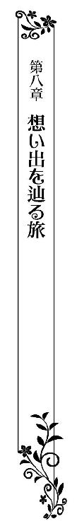
一夜明けてシャーウッド伯爵家の別荘をあとにしたティルレアは、長い時間、列車に揺られて街へと戻ってきていた。
ひとりで馬車や列車に乗ったことがない。ティモシーが列車の一等席を取ってくれたので、ひとりでも安心していられたけれど、隣にサディアスがいないからいたたまれないほどの寂しさを覚えた。
話をする相手もなく、ひたすら寂しさを堪えていたせいか、気が遠くなりそうなほど乗車時間が長く感じられた。
ようやく駅に到着して、実家に向かうために馬車に乗ったものの、今度は寂しさとは異なるいたたまれなさに苛まれ始めた。
両親にことの顛末を話さなければならない。サディアスとの結婚を喜んでくれた彼らは、破談になったと知ってさぞかし残念がることだろう。
「なんて親不孝なのかしら......」
悲しむ両親の様子を思い描いただけで、胸が痛んでくる。
嫁いでいく娘の幸せな姿を見せてあげたかった。娘を送り出す喜びに顔を綻ばせている両親を見たかった。その夢も、いまは泡となって消えてしまったのだ。
「はぁ......」
大きなため息をもらし、土埃を上げて走る馬車の窓から外に目を向ける。
なにげなく眺めていると、間もなくして豊かに水を湛える川が見えてきた。向こう岸には見覚えのある公園が広がっている。
サディアスと初めて二人で街に出てきたとき、時間つぶしに立ち寄った公園だ。あのときのことが、鮮明に脳裏に浮かんでくる。
「サディアス......どうして......」
彼はふと気がつけば、熱っぽい瞳でこちらを見つめてくれていた。愛の言葉もたくさん言ってくれた。
腕を取り、身体を寄り添わせて歩きながら、たくさんの話をした。二人のあいだには楽しい思い出しかないというのに、彼がそれらのすべて忘れてしまうなんて信じられない。
「会いたい......」
もう二度とサディアスに会えないかもしれないと思うと、居ても立ってもいられなくなり、ティルレアは座席から身を乗り出して御者に声をかける。
「すみません、八番街のシャーウッド伯爵家に行き先を変更してください」
馬の脚を止めることなく振り返ってきた御者が、了解とばかりに軽くうなずき返してきた。
このまま実家に戻りたくない。ただその思いだけでシャーウッド伯爵家を訪ねることにしてしまったけれど、サディアスは会ってくれるだろうかと不安になってくる。
それでも、彼に会わなければ、きっと後悔してしまうに違いない。彼にはどうあっても自分のことを思い出してほしい。愛し合った日々を、忘れたままでいてほしくなかった。
間もなくして、馬車が川沿いの道に入っていく。そこから先は、景色が一変した。貴族たちが社交界のシーズンを過ごす立派な屋敷が、広い通りに面して建ち並んでいるのだ。
中でもひときわ目を引く豪奢な建物が、シャーウッド伯爵家の屋敷で、遠くからでもすぐにわかった。
屋敷が近づいてくるほどに、不安が募ってくる。シャーウッド伯爵夫妻は、ようやく記憶を取り戻した息子の帰宅を喜び、久しぶりの家族団らんに浸っていることだろう。
いきなり訪問は礼儀に反する行為であるうえに、ティルレアが訪ねて行くことによって憩いのひとときを邪魔しかねないのだ。
それに、馬車と列車を乗り継いできたため、クリーム色のリネンで仕立てたドレスが、少し皺になってしまっている。
手袋は嵌めているけれど、長い銀の髪は下ろしたままで、帽子も被っていない。伯爵家を訪ねるに相応しい姿とはとても言い難い。
「やっぱり......」
日を改めようかと考え直したそのとき、不意に身体が前のめりになり、ハッと我に返る。
「レディ、着きましたよ」
御者の大きな声に、シャーウッド伯爵家に到着したことを知り、覚悟を決めて馬車から降り立つ。
念のためにとティモシーが持たせてくれた金で馬車の代金を支払い、荷台から下ろしもらった大きな鞄を手に屋敷の玄関へと足を進めた。
通りから続く階段を上がり、仰ぎ見るほどに高い扉の前に立ち、鞄を足元に下ろしたティルレアは、洒落た細工が施された金色のドアノッカーを迷い顔で見つめる。
サディアスに会いたい気持ちと、面会を拒絶されたらどうしようという不安が、胸の内で交錯し、なかなかドアノッカーに手を伸ばせない。
「いつまでもこうしていたら変に思われてしまう......」
道行く人の視線を感じ、意を決してドアノッカーを握り、何度か扉を叩いた。
しばらくすると、目の前の大きな扉が静かに開き、黒いお仕着せを纏った若いフットマンが顔を覗かせてくる。
緊張から鼓動が驚くほど速くなっていたが、初めてここを訪ねてきたときに彼の顔を見た記憶があり、少し落ち着きを取り戻す。
「私はティルレア・ジェラルドです。お約束はしていないのですが、シャーウッド伯爵にお取り次ぎいただけますでしょうか？」
「ジェラルド男爵家のティルレアさまでございますね。しばらくお待ちさいませ」
礼儀正しく接してくれたのは、フットマンもこちらを覚えてくれていたからだろう。
伯爵に取り次いでもらうことはできた。あとは、会ってもらえることを祈るばかりだ。
屋敷はとても広く、主人に客の訪問を告げに行くだけでも、かなりの時間を要するとわかっている。
それでも、待たされているあいだは長く感じてしまうものであり、ティルレアはじりじりし始めた。
「お待たせいたしました。ご案内いたします」
足早に戻ってきたフットマンが、恭しく頭を下げてくる。
伯爵が会ってくれるとわかってほっと胸を撫で下ろし、足元に置いていた大きな鞄に手を伸ばした。
「運ばせますので、そのままどうぞ」
フットマンからにこやかに言われ、小さくうなずき返す。
彼に片手で促されて玄関ホールへと入ると、どこからともなく現れた別のフットマンがティルレアの鞄を運んでいった。
案内役のフットマンのあとについて玄関ホールを抜け、絨毯が敷き詰められた長い廊下を歩いて行く。
この先には居間があったはずだ。伯爵はそこにいるのだろうかと思っていると、聞き覚えのある笑い声が聞こえてきた。
（サディアス......）
愛する彼の声を聞き間違えるわけがない。
彼とはたった一日、離れていただけなのに、楽しげな笑い声に懐かしさを覚えてしまう。
早く会いたいけれど、フットマンを追い越すわけにはいかない。逸る気持ちを必死に押さえ込み、静かに歩みを進める。
「ティルレアさまをご案内いたしました」
居間の入口で足を止めたフットマンが主人に報告し、ティルレアに深く頭を下げてきた。
中にはサディアスがいる。駆け込んでいきたいほど彼に会うのを待ち焦がれていたけれど、まずは伯爵に突然の訪問を詫びなければと、神妙な面持ちで居間に入っていく。
「失礼いたします」
いったん足を止めて深く頭を下げると、真っ先に長椅子でくつろいでいたサディアスが腰を上げた。
金色の髪に軽く櫛を入れ、茶色いラウンジスーツを纏い、白いシャツに薄紫色のクラヴァットを合わせている。
背筋を伸ばし、軽やかな足取りで歩み寄ってくる彼に、ティルレアは目が釘付けになった。
「ティルレア、急にどうしたんだい？」
変わらない彼の笑顔に、涙が溢れそうになる。
「突然、ごめんなさい......どうしてもあなたに会いたくて......」
思いをそのまま言葉にしたティルレアは、愛しくてならない彼をいまにも泣き出しそうな顔で見上げた。
「私のことを覚えていなくても、私はあなたのそばにいたいの......」
「ティルレア、そんな顔をしないで......」
優しく微笑んで頬にくちづけてきた彼が、ティルレアの腰に手を回してくる。
「一緒にお茶でもどうだい？」
腰に添えられた手で、暖炉前に置かれた長椅子へと導かれていく。
長椅子の前には象眼を施した楕円形のテーブルがあり、向こう側に並べて置かれた優雅な猫脚の腰かけに、シャーウッド伯爵と夫人が座っている。シェリルの姿はなく、親子三人で談笑していたようだ。
長椅子の脇で足を止めたティルレアは、黒いラウンジスーツ姿でゆったりと背もたれに寄りかかっている伯爵と、艶やかな空色のドレスに身を包み、白い手袋に包まれた両手を膝に載せている夫人を真っ直ぐに見つめ、ことさら深く頭を下げた。
「お約束もなしに伺ってしまい、申し訳ありませんでした」
「気にしなくていいのよ。それより、サディアスから婚約者のあなたを思い出せないと聞かされて、驚いていたところなの」
心配そうな顔した夫人に見上げられ、ティルレアは言葉もなく脇に立っているサディアスをチラリと見やる。
「さあ、座って」
ちょっと困ったように苦笑いを浮かべたサディアスに椅子を勧められ、軽く会釈をして腰掛けた。
隣に腰を下ろしてすぐさま長い脚を組んだ彼が、しみじみとティルレアを見つめてくる。
「子供のころのことまで思い出せたというのに、本当にレディ・ティルレアのことはなにも覚えていないのか？」
わずかに身を乗り出してきた伯爵が、解せないと言いたげに首を捻った。
記憶を取り戻して帰宅した息子と、伯爵夫妻はさまざまな話をしたに違いない。それでもなお、自分だけがサディアスの記憶から消えたままだと知り、ティルレアは深く落胆した。
「僕も不思議でならないんですが、レディ・ティルレアの記憶だけがすっぽりと抜け落ちてしまっているようです」
「そんなことってあるのかしら？ あなたにとって誰よりも大切な人なのだから、真っ先に思い出してよさそうなものなのにねぇ」
力なく首を振って肩をすくめた息子を、さも訝しげに眉根を寄せて見つめた夫人が、同意を求めるような視線をこちらに向けてくる。
声を出して賛同するのはさすがに憚られたティルレアが、黙って小さくうなずき返したところに、パーラーメイドが銀色のトレイを持って現れた。
テーブルから少し離れたところに置かれているワゴンまで行くと、その場でティーポットを取り上げ、トレイで運んできた新たなカップに紅茶を満たしていく。
ティーカップを載せたソーサーをティルレアの前に下ろしたパーラーメイドは、トレイを手に音もなく下がっていった。
「どうぞ召し上がれ」
夫人から勧められ、ソーサーごと手に取ったティルレアは、薫り高い湯気が立ち上るティーカップの華奢な取っ手を摘まみ上げ、ゆっくりと口に運ぶ。
挙式を終えてサディアスの妻になり、温厚な伯爵や優しい夫人と楽しい日々を過ごすことを心待ちにしていた。
それなのに、彼と結婚できるかどうかもわからない状況に陥っている。できることなら、自分のことを思い出してくれた彼と結婚したい。けれど、もし記憶が戻らなかったとしても、彼の妻になりたかった。
昨日、ひとり別荘で過ごしているあいだ、ずっとサディアスのことだけを考えていた。
彼は隣にいるのがあたりまえになっていた。その彼がいないことが堪えられず、どうあってもそばで暮らしたい思いがこれまで以上に強くなったのだ。
「一目惚れをして求婚した女性を忘れてしまうとは、まったくおまえも薄情な男だ」
「そうよ、他の男性に取られてしまいそうだからと、慌てて求婚するほどの熱愛ぶりだったというのに、忘れてしまうなんて女性として許し難いわ」
呆れた様子の両親から立て続けに小言を口にされ、サディアスが苦々しく笑う。
「愛する女性の記憶を好んで失う男が、いったいどこにいるというのですか？ 僕だって忘れたくてレディ・ティルレアを忘れたわけではありませんよ」
不満げに言い放った彼が、申し訳なさそうな顔つきでティルレアを見つめてきた。
青い瞳には熱がこもっているものの、記憶を失ってからの彼に愛の言葉を口にされたことはない。惹かれる気持ちはあっても、愛するまでには至っていないのだろうか。
記憶が戻らないままでも、新たな愛を育んでいくことができるなら、それでもいいとさえ思うようになっている。けれど、彼の胸の内は知りようもなく、もどかしさが募ってくるばかりだった。
「そうだわ、ティルレア」
ふとなにか思いついたように夫人が弾んだ声をあげ、紅茶を啜っていたティルレアはティーカップをソーサーに下ろす。
「なんでしょうか？」
「しばらくここでサディアスと一緒に暮らしてみたらどうかしら？」
「えっ？」
「わたくしたちを思い出せたのだから、妻になるあなたのことも思い出せる気がするの。だから、もう少し一緒に過ごしてみたらどうかしらと思って」
微笑みを崩さない夫人を、長い睫を瞬かせながら見返した。
夫人はいまでも自分を息子の婚約者として認めてくれているのだと思うと、嬉しくて胸が熱くなった。
「私は賛成だが、君たちはどうなんだ？」
シャーウッド伯爵は妻の提案に異論はないようだが、本人に意向を訊ねてくる気遣いを見せてきた。
「それはもう、僕だって思い出したいですからね。レディ・ティルレアと愛し合っていたことを、当事者の僕が覚えていないなんてあまりにも寂しすぎます」
「わ......私もお許しがいただけるのでしたら、是非、このまま一緒に......」
サディアスの答えに安堵したティルレアは、真摯な思いで深く頭を下げる。
彼と一緒に過ごしたからといって、記憶が戻ってくる保証などないことはわかっているけれど、もう離ればなれになりたくなかったのだ。
「しかし、ご両親に話をしておいたほうがいいだろうから、一度、戻ったらどうだね？」
伯爵が心配してくれたというのに、両親のことを思い出してある疑問が湧いてきたティルレアは、ハッとした顔でサディアスを見つめた。
「どうしたんだい？」
「サディアス、私の両親は？ 両親のことは覚えているの？」
ティーカップを載せたソーサーをテーブルに戻し、身を乗り出すようにして彼に詰め寄る。
「君のご両親？ いや......」
一瞬、表情を険しくした彼が、小さく首を横に振った。
彼は両親を覚えていないと知り、ティルレアは愕然とする。いったい、彼の記憶はどうなってしまっているのだろうか。
伯爵夫妻が興味深げにこちらを見ている。彼らにとっても、ティルレアの両親に関しての記憶は、気になるところだったのだろう。
「覚えていないの？ 最初に会ったときのことは？ 舞踏会で私は父と一緒にいたのよ、あなたは父の前で初めてのダンスに誘ってくれたじゃない」
さらに詰め寄り、わずかに翳っている青い瞳をジッと見つめる。
ティルレアは忘れられてしまっているが、彼は生まれ育った屋敷のことや、友人たちのことも思い出したのだから、これまでに出会った人たちを覚えていておかしくない。
約束の再会を果たしたあの舞踏会で、一緒にいた父親を覚えていれば、自分を思い出してもらえるきっかけが掴めるような気がしただけに、簡単には引き下がれなかった。
「うーん......」
「もしかして、あの舞踏会がそのものがあなたの記憶に残っていないの？」
「どうやら、そうみたいだ」
ため息交じりに答えたサディアスが、大きく肩を落とす。
「私の両親と一緒に花嫁衣装の仮縫いを見ていたことも？」
次なる問いかけに、彼は力なく首を横に振った。
苦渋の表情を浮かべる彼はいまにも頭を抱え込みそうで、やりきれない思いで胸がいっぱいになってしまう。
「どうしてなの......」
かつてない悲しみに襲われたティルレアは、両手で顔を覆ってむせび泣く。
彼の記憶の中に、自分はこれっぽっちも残っていない。そばにいた父親や母親まで消えてしまっている。
愛してやまないサディアスから存在自体を否定されたかのようで、悲しみに胸が締めつけられた。
「ティルレア......」
身体を寄り添わせてきた彼に、そっと抱き寄せられる。
彼はどこまでも優しい。愛し合ったことすら忘れているのに、こんなふうに優しくされるとよけいに心が痛む。どうして覚えていないのだと、叫びたい衝動に駆られた。
「サディアス、部屋で少し休ませてあげたらどう？」
「そうします」
母親から勧められたサディアスに腰を支えられ、ティルレアは長椅子から立ち上がる。
「ジェラルド男爵も心配なさっているだろうから、レディ・ティルレアがしばらくこちらで暮らすことを、とりあえず使いを出して伝えておくよ」
「ありがとうございます。さあ、ティルレア」
父親に礼を言った彼が、腰に回してきている手で促してきた。
「自宅だと思ってくつろいでちょうだい」
夫人の温かい言葉にジワッと涙が溢れ、力なくサディアスに身を寄せたまま、伯爵夫妻に感謝の気持ちを込めて頭を下げる。
緩やかな足取りで扉へと向かう彼が、しっかりと腰を抱え込んでくれていなければ、その場に頽れてしまいそうなほど、虚しさに身体が脱力していた。
自分だけが忘れられたままなら、なにも思い出さなくてよかったのにと、そんな自分勝手な思いに囚われてくる。
家族や友人たちと過ごした楽しい時間を、彼はシェリルと言葉を交わすうちに思い出した。
それが兄に対する妹の愛情のなせる技であるとするならば、自分には愛が足りないということになる。
そんな馬鹿なことはない。誰よりもサディアスを愛している。偽りのない純粋な愛を、彼だけに向けてきた。
それなのに、なぜ思い出してくれないのだろう。彼にとって自分はどういった存在だったのだろうか。考えれば考えるほど胸が痛み、次第に息苦しくなってきた。
「ティルレア、大丈夫かい？」
廊下へと出たところで、サディアスから顔を覗き込まれる。
心配させてはいけないと思い、うなずき返そうとしたのだけれど、あまりの息苦しさにそれもできずに、彼の身体を伝うようにしてその場にへたり込む。
「ティルレア？」
彼の声がやけに遠くに聞こえる。
息ができなくて、胸が苦しい。救いを求めたいのに、顔を上げることすらできない。
「うっ......」
片手でドレスの胸を掴んだティルレアは、目の前にしゃがみ込んできたサディアスの腕の中に倒れ込み、そのまま意識を失っていた。に倒れ込み、そのまま意識を失っていた。
＊＊＊＊＊
「待って......サディアス、行かないで......」
真っ暗闇の中、遠ざかっていくサディアスの後ろ姿だけが、ぼんやりと浮かんで見える。
花嫁衣装を身に纏い、父親にエスコートされて教会の祭壇に向かっていたはずなのに、なぜかひとり取り残されてしまった。
二人で愛の誓いを交わすはずだったのに、サディアスが行ってしまう。結婚式はどうなるのだろう......。
どんどんサディアスの姿が小さくなっていく。腕を取って歩いていたはずの、父親の姿までが忽然と消えていた。
純白の花嫁衣装のままひとり残されたティルレアは、恐ろしさのあまり叫び声をあげる。
「いや─────っ」
耳を劈くような自分の声に、ハッとして目を瞠った。
（ここはどこ......）
煌めくシャンデリアが見える。眩しくて思わずきつく目を瞑ると、誰かに大きく肩を揺さぶられた。
「ティルレア、ティルレア」
優しげに呼ぶ声がすぐ近くから聞こえ、恐る恐る目を開く。
真っ直ぐに自分を見つめてくるのは、一度として忘れたことがない青い瞳だった。
「ティルレア、大丈夫かい？」
「サディアス......」
咄嗟に身体を起こしたティルレアは、彼の頬を両手で挟む。
指には確かな温もりが伝わってくる。指先で唇に触れてみると、吐息がかすめていった。
「夢だったのね......」
胸を撫で下ろし、そっと両手を下ろす。
「突然、気を失ってしまったんだよ。どこか具合が悪いのなら、ドクターを呼ぶよ？」
ベッドの端に腰かけてきたサディアスが、乱れたティルレアの長い銀の髪を指先で梳いてくれる。
「私......」
シャーウッド伯爵夫妻と話をしているときに、急に胸が苦しくなったことを思い出した。着ていたドレスも脱がされ、横になりやすいためにか、薄いワンピース姿にさせられていて困惑も露わに彼を見返す。
「どうしたの？ どこか痛いところがあるのかい？」
心配してくれるサディアスは、これまでと変わらず優しい。けれど、今の彼の記憶に自分は存在していないと思うと、またしてく胸が苦しくなってきた。
「サディアス......どうして......どうして、あなたは私のことだけ忘れてしまったの......私たちは心の底から愛し合っていたのに......」
やりきれない思いに、涙が溢れてくる。
「ティルレア、泣かないで......」
困り顔で見つめてくる彼にそっと抱き寄せられ、片手で口元を押さえて啜り泣く。
「ごめん......両親からも君とのことをいろいろ聞かされたけど、なぜか思い出せないんだ。自分でもなぜなのかわからない......」
サディアスの苦しげな声に、新たな涙が溢れてくる。
一部の記憶だけが抜け落ちたままの彼は、自分以上に辛い思いをしているのだ。覚えていないからといって、彼を責めるのは間違っている。
詫びなければいけないのは、自分のほうだと思い直したティルレアは、涙を堪えて顔を起こした。
「サディアス、謝ったりしないで......私こそひどいことを言ってしまってごめんなさい。あなたは悪くないのに......」
「ティルレア」
片手であごを捕らえてきた彼が、いつになく真摯な瞳で見つめてくる。
「これだけは信じてほしい、僕は君といると安らぎを覚えるし、君に触れていると愛しさが込み上げてくるんだ」
「本当に？」
涙に潤んだ瞳で問いかけると、彼が笑顔でうなずき返した。
「僕は君に一目惚れをして、求婚したんだろう？ 世界で一番、愛しているはずなんだ。それなのに、君の記憶が完全に消えてしまうなんてありえない。きっと、思い出してみせる」
サディアスに強い口調で言い切られ、ティルレアは嬉しさに思わず目を細める。
抜け落ちたままの記憶が蘇ってくるまで待つしかないと、彼がそんなふうに考えているようであれば、喜びを感じることもなかっただろう。
「私、あなたの記憶を取り戻すためなら、どんなことでも協力するわ」
「もし具合が悪いのでなければ、これから街に行ってみないか？」
「街に？」
あまりにも唐突な提案に、ティルレアはなぜだろうかと首を傾げる。
「母から、頼んでいた結婚指輪が完成していると言われているんだ。君と一緒に指輪を選んだんだろう？」
「ええ、そうよ」
思わず声を弾ませ、涙が乾きつつある瞳を輝かせた。
初めて二人で街にでかけたあの日、長い時間をかけて結婚指輪を選んだ。二人で宝飾店を訪れれば、そのときのことを思い出すかもしれない。
「じゃあ、さっそく着替えて出かけよう」
ベッドから腰をあげたサディアスが、ティルレアの前髪を指先でかき上げ、額に唇を押しあててくる。
「メイドを寄こすから、おめかしするんだよ」
「わかったわ」
明るい声をあげ、彼を真っ直ぐに見上げた。
「迎えに来るから、支度がすんだら僕を呼んで」
「ええ」
笑顔でうなずき返すと、彼は足早に部屋をあとにした。
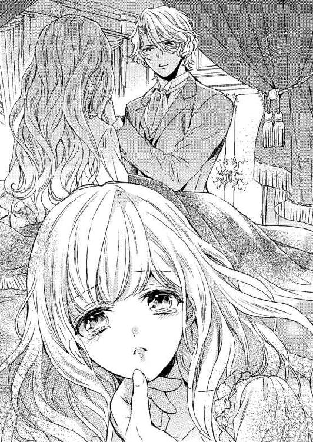
すぐさまベッドから下りたティルレアは、あたりをぐるりと見回す。
「客間のようね」
天蓋つきのベッドが置かれた部屋は、普段から人が生活している気配が感じられない。
揃えられた調度品はどれも上品で、ちょっとしたよそよそしさがある。
「私の鞄......」
いつの間に運ばれたのか、大きな鞄が部屋の片隅に置かれていた。
急いで鞄に歩み寄り、蓋を大きく開く。週末を別荘で過ごすだけの予定だったから、ドレスは二着しか入っていない。
サディアスが記憶を失ってしまったことで、滞在期間が延びてしまったけれど、実家からドレスを送ってもらうのも憚られ、着ていったドレスを含めた三着を着回していた。
「取りにいっている時間はないのだから、しかたないわ......」
別のドレスを着て街に行きたい思いを、ティルレアぐっと抑え込む。
「どちらにしようかしら......」
鞄から引っ張り出した二着のドレスを持ってベッドへ行き、一着ずつ広げて置いていく。
窓の外に目を向けてみると、西の空に陽が大きく傾いている。まもなく、着飾った紳士淑女で街が賑わいを見せる時間帯だ。
「こちらがいいわね」
しばらく迷った末に、小さな花の刺繍を胸元と裾に散らした、淡いピンク色のドレスを取り上げた。
煌びやかというよりは、可愛らしいといった印象が強いドレスだが、レースがふんだんに使われているお気に入りの一着だ。
「どうぞ」
扉を叩く音が聞こえて声をかけると、二人の若いメイドが丁寧に頭を下げて入ってきた。
どちらも黒い長袖のドレスの上に、フリルの縁取りが施された白いエプロンをして、白い小さなキャップを被っていた。
「お召しになるのはそちらのドレスでございますね？」
「ええ、お願いするわ」
にこやかに言ったティルレアは、持っていたドレスをメイドに渡す。
「失礼いたします」
ドレスをいったんベッドに下ろしたメイドと、もうひとりのメイドがティルレアの前と後ろに立ってきた。
身につけているドレスを脱がし始めたメイドたちにすべてを任せ、ティルレアは二人で街に出たあの日に思いを馳せる。
（最初に宝飾店を訪ねて、それから公園に行ったのよね......そのあとにレストランでお食事をして......）
二人で結婚指輪を選び、公園のベンチ、そして、食事をしながら、サディアスといろいろなことを語り合った。
あの日は、記念すべき初めてのデートだった。本来であれば、深く記憶に刻まれているはずだ。
シェリルと話をしたことで、彼は家族や友人のことを思い出した。二人にとっての思い出の場所である街に出れば、記憶が蘇ってくるかもしれない。
（大丈夫、きっと思い出す......）
サディアスと街に出ればよいことが起こる気がしてならないティルレアは、メイドたちに身仕舞いをしてもらいながら期待に胸を弾ませていた。
＊＊＊＊＊
ガス燈に灯された火に浮かび上がる街を、着飾ったティルレアはサディアスの腕を取って歩いている。
黒いテールコート姿の彼は、白いシャツに青いクラヴァットを合わせ、トップハットを被っていた。
大勢の紳士淑女が街を行き交っている。紳士たちはみな同じような装いだ。けれど、同様の格好をしていても、花があるサディアスはひと目を惹いた。
連れ添って歩く紳士がいるにもかかわらず、ほとんどの淑女たちがサディアスとすれ違いざまに目を向けてくるのだ。
社交界において注目の的である彼は、街に出てもとうぜんのように人の視線を浴びる。それは初めてのデートのときも同じで、自分はこんなにも素敵な男性の妻になれるのだと、少しばかり得意になったものだ。
けれど、今回は得意になるどころではない。宝飾店に立ち寄って店主たちと言葉を交わしても、公園のベンチで前はこんなことを話したのだと聞かせても、サディアスはこちらを思い出してくれないのだ。
こともあろうに、宝飾店の店主や店員たちは覚えているのに、二人で選んだ結婚指輪のことは忘れていた。
二人でしたことを悉く彼は忘れている。期待に胸を弾ませて街へとやってきただけに、突きつけられた現実に心が折れそうになっていた。
「サディアス、久しぶりじゃないか」
声をかけられたサディアスが、ふと足を止める。
「やあ、二人とも元気だったか？」
目の前までやってきた二人の男性にサディアスが親しげに声をかけ、ティルレアはいったい誰だろうかとさりげなく彼らを見つめた。
（あの人たちは......）
二人には見覚えがあった。
サディアスから求婚された舞踏会で、結婚を祝ってくれた彼の友人だ。
（えーっと、確かアンディさんとロバートさんだったような......）
あの場で祝ってくれた友人の数は多く、すぐには全員の名前は覚えられなかった。ただ、アンディとロバートは、はじめに挨拶を交わしたこともあって、どうにか覚えられたのだ。
「ティルレア、紹介しよう。僕の友人のアンディとロバートだ」
サディアスからにこやかに言われたティルレアが困ったように唇を噛むと、すでに挨拶を交わしているアンディとロバートが顔を見合わせた。
「サディアス、君が結婚を発表した舞踏会で、僕たちはレディ・ティルレアを紹介されているんだけどな」
「あっ......」
アンディから呆れ気味に言われたサディアスが、ばつの悪そうな顔をティルレアに向けてくる。
友人たちを前に、どう対処すればいいのかわからず、ティルレアは黙ってサディアスを見返した。
「いったい、どうしたんだよ？」
訝しげに眉根を寄せているるロバートから問われ、サディアスが苦々しく笑ってこちらを見てくる。
彼は確かに友人たちの記憶も取り戻しているようだ。けれど、あの舞踏会で会ったことは忘れてしまっている。自分がそこにいたからだと思うと、ティルレアはせつなさに胸が痛んだ。
ひとしきりこちらを見ていたサディアスが、柔らかに微笑んでうなずいてみせ、アンディたちへと視線を戻す。
「少し君たちと話をしたいんだが、時間はあるかな？」
サディアスから改まった口調で訊ねられたアンディが、ロバートと顔を見合わせる。
「これからニコルの家で飲むことになっているんだよ。ひとりや二人、増えたところで問題ないだろうから、僕たちと一緒に行かないか？」
アンディが誘いの言葉を向けてきたのは、サディアスの様子が普段と違っているように感じたからかもしれなかった。
「ティルレア、どうする？」
サディアスは君次第だよと言いたげな視線を向けてきたが、ティルレアに迷いはなかった。
結婚を祝ってくれた友人たちと話をすることで、サディアスが舞踏会での出来事を思い出してくれることを期待したからだ。
「お邪魔させていただきましょう」
「わかった」
小さくうなずいたサディアスが、アンディたちに向き直る。
「急ですまないが同行させてくれ」
「堅苦しいこと言うなよ。向こうに馬車を待たせているんだ、さあ、行こう」
サディアスの肩を軽く叩いたアンディが、ロバートを促して先を歩き出す。
再びサディアスの腕を取ったティルレアは、一緒に彼らのあとを追った。
待機していた馬車に四人で乗り込み、ニコルが暮らす屋敷へと向かう。馬車は四人乗りで、二人がけの席が向かい合わせに設けられていた。
アンディたちは、サディアスの様子がおかしいと感じているようだが、話しをしたいと言った本人が口を開くまでは問いただすつもりがないのか、たわいない世間話に終始している。
サディアスと並んで座っているティルレアは、たっぷりとしたドレスの裾が邪魔にならないよう両手で押さえながら、ときおり相づちを打ったりしていた。
間もなくして馬車が屋敷の前に到着し、サディアスの手を借りて降りたティルレアは、閉ざされた大きな玄関の扉を見上げる。
ニコルはコースワース子爵家の長男で、四人とも同じ大学に通っていたこともあり、仲がいいのだと教えられた。
呼び鈴を聞いて扉を開けたのは、黒いお仕着せを身につけた老齢の執事だった。フットマンではなく執事が迎えに出てきたのは、アンディたちが大事な客人として認識されているからだろう。
サディアスはコースワース子爵家を幾度か訪れたことがあるらしく、執事に急な訪問を詫びて無事に通してもらった。
執事に案内されて居間に行くと、暖炉前の椅子に座っていたニコルが、サディアスを目にして驚いたように立ち上がる。
「サディアス、どうしたんだい急に？」
「すまない、街でアンディたちと会って、君たちに話したいことがあるので同行させてもらったんだ」
歩み寄ってきたニコルと握手を交わしながら説明したサディアスが、ティルレアへと視線を向けてくる。
「彼女を知ってるのかな？」
「ああ、君の婚約者だろう？ レディ......レディ・ティルレア」
サディアスから訊ねられたニコルは妙なことを言うなといった顔をしながらも、どうにか名前を思い出して安堵の笑みを浮かべた。
「突然、お邪魔して申し訳ありません」
「いつでも大歓迎ですよ。さあ、座って」
明るい声をあげたニコルが暖炉前の席へと向かい、揃って彼のあとに従う。
楕円形のテーブルを囲むように、長椅子や一人がけの椅子が幾つも置かれている。
ニコルは先ほど座っていた暖炉寄りの椅子に座り、アンディとロバートが向かい側に置かれている長椅子に並んで腰かけた。
暖炉の正面にある長椅子に座るようサディアスから促され、ティルレアは端に浅く座る。
みなが席についたのを見計らったかのように、執事が銀色のワゴンを押して居間に現れた。
ワゴンの上には、琥珀色の液体が満たされたクリスタルのデカンタと、四つの小さなカットグラス、そして、ティーセットが載っている。
どうやら、気を利かせた執事が、ティルレアのために紅茶を用意してくれたようだった。
まずティーポットを取り上げ、カップに紅茶を満たした執事が、ソーサーごとティルレアに差し出してくる。
礼の代わりに小さくうなずいてソーサーを受け取り、揃えた膝の上にいったん下ろす。
執事は次にデカンタを取り上げ、小さなグラスに酒を満たすと、小振りの盆に載せて男性たちに配っていった。
「しばらく下がっててくれないか」
「御意」
ニコルから命じられた執事が、恭しく頭を下げて居間を出て行く。
「で、話したいことって？」
乾杯をするでもなくグラスに口をつけたニコルから真っ先に問われ、サディアスがグラスを手にしたまま小さく息を吐き出す。
「実は、ちょっとした事故で記憶を失ってしまって、いまだにティルレアのことだけ思い出せないんだよ」
「なんだって？」
椅子から身を乗り出したアンディが、驚きの顔でサディアスを見つめる。ニコルとロバートも同じように、唖然としていた。
「僕たちのことは覚えているんだろう？」
「家族はどうなんだ？」
「レディ・ティルレアだけとはどういうことだ？」
次々に問いを投げつけられ、さすがに順を追って説明する必要があると思い直したのか、サディアスが静かな口調で話し始めた。
「ティルレアと二人で別荘に行ったときに落馬して、その衝撃ですべての記憶が飛んでしまったらしく、最初は自分の名前すらわからなかったんだ」
想像し得なかったであろう話に、ニコルたちは酒を飲むのも忘れて耳を傾けている。
ときおり彼らから向けられる視線に、なにも言葉がないティルレアは、伏し目がちにサディアスの話を聞いていた。
「だから、舞踏会で君たちにティルレアを紹介したことも覚えていないんだよ」
「そんなことがあるのか......」
すべてを聞き終えたアンディは、先ほど街で遭遇したときのおかしなやり取りが、ようやく理解できたらしく、ため息交じりにつぶやいてグラスを口に運んだ。
「それじゃあ、ベッドで気がついたときにそばにいたレディ・ティルレアは、君にとって初めて会った女性だったわけか？」
「知らない女性が、どうして僕のそばにいるんだろうと思ったよ」
興味津々といった表情を浮かべているアンディに、サディアスが小さく笑って肩をすくめてみせる。
サディアスはありのままを口にしたにすぎない。記憶に残っていないのだから、彼が見知らぬ女性と思うのは当然だ。
けれど、あのときの彼の反応を、ティルレアは一生、忘れられないような気がしている。
強い愛で結ばれ合っていたはずの彼から、「離れてくれるかい」と言われ、さらには身体を遠ざけられたという衝撃的な出来事が、いまだに繰り返し脳裏に蘇ってくるのだ。
久しぶりに会ったアンディたちと話をしていても、サディアスの抜け落ちている記憶の一部が戻ってくるような気配がない。
仲のいい友人たちと言葉を交わしても効果がないのであれば、他になにをすればいいというのだろうか。
記憶が戻るかもしれないと期待していただけに落胆は大きく、ティルレアは寂しい思いで彼らの会話に耳を傾けていた。
「で、しばらく一緒に過ごしたんだろう？ いまはレディ・ティルレアのことをどう思っているんだ？」
「最初から愛しく感じていたな。なんかこう、一緒にいると心が安らぐんだよ」
身を乗り出して訊ねたニコルに、迷うことなく答えたサディアスが、柔らかな微笑みを浮かべてティルレアを見つめてくる。
気持ちのこもった青い瞳に、胸が熱くなっていく。けれど、あまり嬉しさが感じられない。
彼が愛し合ったことを忘れてしまっていると思うと、どうしても素直に喜べないのだ。
「それなら結婚しても支障はなさそうだな」
「僕だってそうしたいと思っているよ」
ロバートの言葉にサディアスがすぐさま同意し、初めて彼の胸の内を知ったティルレアは驚きに目を瞠った。
「ただ、僕としてはこのまま結婚していいものかどうか、少し迷っているんだ」
静かな口調で続けたサディアスが、言葉どおり迷いも露わな顔でこちらを見てくる。
「僕と君が愛し合っていたことを疑ってはいないし、僕にとって今の君はとても愛しい存在になっている。だから予定どおり結婚すべきだと思うんだ。だけど、この先も君のことを思い出せないかもしれないんだよ？ そう思うと君に申し訳なくて......」
「そんなこと......」
苦悶の表情を浮かべるサディアスを見ていられず、言葉を途切れさせたティルレアは唇を噛んで項垂れた。
「レディ・ティルレアはいまもサディアスを愛しているんだろう？」
アンディから問われ、おずおずと顔を上げてうなずき返す。
「はい、愛しています」
嘘偽りのない気持ちだ。
サディアスにはすべてを思い出してほしい。けれど、たとえ忘れられたままであっても、彼に対する愛が変わるなどあり得ない。愛する人は彼ただひとりきりだ。
「レディ・ティルレアは君を愛している。で、君はレディ・ティルレアを愛しい存在だと思ってる。なにを迷うことがあるんだ？ 結婚すればいいじゃないか」
「僕もそう思うな。結婚して一緒に暮らすようになれば、どこかで思い出すかもしれないし」
「二人の思い出がないことになってしまったのだから、レディ・ティルレアも辛いだろうけれど、ここは前向きに考えてみるべきだと思うぞ。予定どおり結婚をして、二人で新たにたくさんの思い出を作ったらいい」
友人たちから続けざまに結婚を勧められ、サディアスが神妙な面持ちで黙り込む。
いったい、彼はなにを思っているのだろうか。口を閉ざしている彼を見ていると、不安ばかりが募っていく。
「ティルレア......」
長椅子に座ったまま身体ごとこちらに向き直ってきたサディアスが、いつになく真摯な瞳で見つめてきた。
きっと、心が決まったのだろう。不安が消えないティルレアは息を呑んで次の言葉を待つ。
「僕は君のことを覚えていない......けれど、いまの君をとても愛しく思っているんだ。もし君がそれでも......」
「サディアス、私はあなたが好きなの......たとえ私を忘れてしまっていてもかまわない......あなたがそばにいてくれれば、それでいい......」
言葉を最後まで聞くことなく両手でしがみついて思いの丈をぶつけると、サディアスが優しく抱きしめてくれた。
「ティルレア......僕の可愛いお姫さま、結婚してくれるね？」
肩を震わせていたティルレアは、抱きしめてくる腕の中で身じろいで顔を起こし、改めて求婚してきた彼を涙に濡れた瞳で真っ直ぐに見上げる。
「もちろんよ」
嬉しさに新たな涙が溢れてきたけれど、懸命に笑みを浮かべてみせた。
「おめでとう」
「君たちの結婚を心から祝福するよ」
「よかった、本当によかった」
友人たちが口々に言いながら、拍手で祝ってくれる。
「君たちのおかげで決心がついたよ。ありがとう」
ティルレアを抱きしめる手を解き、前に向き直ったサディアスが晴れやかな声をあげると、ニコルがおもむろに立ち上がり、執事が残していったワゴンに歩み寄っていった。
「二人の結婚を祝して乾杯しよう」
そう言いながらワゴンから取り上げたデカンタを手に戻ってきたニコルが、友人たちのグラスに酒を注いでいく。
全員のグラスに酒が満たされたところで、ニコルがデカンタをテーブルに下ろして椅子に腰かけた。
「我が友人、サディアス、そして、レディ・ティルレア、結婚おめでとう」
ニコルが音頭を取り、それぞれが手にしたグラスを掲げる。
「ありがとう」
「ありがとうございます」
サディアスに続いてティルレアがにこやかに礼を言うと、椅子から身を乗り出した男性陣が手にしたグラスを合わせ、勢いよく酒を呷っていく。
酒を飲めないティルレアは、紅茶を啜りながら彼らを見つめる。サディアスが結婚を決意してくれたこと、そして彼の友人たちに祝ってもらえたことで、これまでにない幸せを感じていた。
「ところで、結婚式はいつだったかな？」
「半月後だよ」
「あまり日がないんだな」
即座に答えたサディアスを呆れたように見たロバートが、ティルレアに視線を向けてくる。
「レディ・ティルレアの花嫁姿を見るのが楽しみだ」
「さぞかし可愛い花嫁になるだろうな」
ロバートだけでなく、アンディからもしみじみと見つめられ、面映ゆくなったティルレアはほんのりと頬を染めた。
「そういえば、君とレディ・ティルレアは幾つ違うんだ？」
ふと思い出したように訊ねてきたニコルが、身を寄り添わせて座っているサディアスとティルレアの顔を見比べてくる。
「ティルレアが十六歳だから、七つ違いだな」
「十六歳の花嫁かぁ......」
ため息交じりの声をもらしたニコルが、酒を一気に呷ってグラスを空にした。
「なんとも羨ましいものだ」
つぶやくように言いながら、テーブルから取り上げたデカンタの酒をグラスに満たすと、ニコルはまたしても大きくあごを反らして酒を呷る。
豪快な飲みっぷりを呆気に取られて見つめていたティルレアは、ふとニコルと目が合って慌ててしまう。
赤みが引いたばかりの頬が、再び恥じらいにほんのりと染まる。目のやり場に困って、さりげなくティーカップをソーサーに下ろしてテーブルに戻す。
「辛い思いをさせていたのだから、レディ・ティルレアを幸せにしてあげないとだめだぞ」
「もちろんだよ」
ロバートから諭されたサディアスが、言われなくてもわかっているとばかりに強い口調で返し、ティルレアに顔を向けてくる。
「今夜は大いに飲みたい気分なんだけど、こうした男ばかりの席は君にはつまらないかな？」
「そんなことないわ」
笑顔で首を横に振ったティルレアの前に、スッとティーカップを載せたソーサーが差し出され、驚きに顔を上げた。
「どうぞ」
にこやかに勧めてきたニコルは、片手にティーポットを持っている。
どうやら、気を利かせて新たな紅茶を満たしてくれたようだ。
「ありがとう」
満面の笑みで礼を言い、手を伸ばしてソーサーごと受け取る。
「なにか、甘い物を用意させよう」
そう言い残してティーポットをワゴンに下ろしたニコルが、使用人を呼ぶことなく自ら扉に向かう。
貴族らしからぬ振る舞いではあるが、彼の心遣いが嬉しく思えたティルレアは、微笑みながらニコルの後ろ姿を見つめた。
「まさか、ニコルに心変わりしたんじゃないだろうね？」
耳元でこっそりとサディアスに囁かれ、ハッとした拍子にティーカップを満たす紅茶が大きく波打って慌てる。
「驚かさないで」
危うく紅茶をこぼしそうなったティルレアは、つい責めるような口調で言ってしまう。
「ニコルに見とれているからだよ」
「見とれてなんかいないわ」
悪びれた様子もないばかりか、逆に疑るような視線を向けられ、すぐさま言い返して不満に頬を膨らませた。
「痴話喧嘩はよそでやってくれないか」
「そうそう、僕たちはまだ恋人もいなくて寂しい思いをしているんだから、少しは気を遣ってほしいものだ」
ロバートとアンディはそんなことを言いながらも、楽しそうに笑っている。
本気でやっかんでいるのではないとわかるその表情に、思わずサディアスと顔を見合わせ、声を立てて笑う。
サディアスからの求婚も、彼の友人たちから祝福も二度目となるけれど、迷いが吹っ切れて晴れやかな気持ちになっているティルレアは、心の底から喜びを感じている。
たとえ愛し合った記憶が蘇ってこなくても、妻として生涯を彼とともに暮らせるのであればそれでいい。
愛を育んでいきながら、新たな思い出をたくさん作っていけばいいのだと、素直にそう思えるようなっていた。
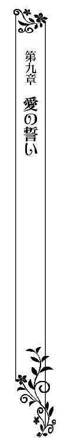
瞬く間に日々は過ぎていき、サディアスの妻となる日を迎えたティルレアは、清楚な純白の花嫁衣装に身を包み、レースのベールでふんわりと顔を覆い、小さな白いブーケを手に、祭壇を前に立っている。
隣に立つサディアスもまた、晴れの日に相応しい華やかな姿をしていた。シャツ、ボウタイ、ウエストコート、ズボン、靴、そして、羽織っている上着のすべてが純白で揃えられている。
由緒ある聖ローズウッド教会の礼拝堂に差し込む陽差しが、彼の柔らかな金色の髪にキラキラと反射し、いつも以上に輝いた。
祭壇の前までは父親にエスコートされてきたのだが、あまりの緊張にどうやって歩いてきたのかすら覚えていない。
サディアスと二人で結婚の誓いを立てたけれど、なにを言ったのか記憶にない。正しく言うことができたのかどうかもわからなかった。
胸に刻まなければいけないはずなのに、司祭から与えられた祝福の言葉すら、耳に残っていないありさまだ。
ただただ幸せに胸がいっぱいで、サディアスの隣にいられることが嬉しく、一生に一度の儀式が上の空のまま終わろうとしている。
「ティルレア」
サディアスから静かな声で呼びかけられ、ハッとして目を瞠ると、ティルレアの顔を覆うベールがそっと捲られた。
魅惑的な青い瞳で愛しげに見つめられ、はにかんで見返す。と同時に、唇に軽くくちづけられ、胸が大きく弾んだ。
「愛している」
甘い囁きに続き、賛美歌が始まる。
参列者とともに歌っているうちに、少しずつ緊張が解れてきた。
（やだ、いつの間に......）
白い手袋をはめた指に輝く結婚指輪に気づき、彼と指輪の交換をした瞬間すら飛んでしまっている自分に唖然とする。
間もなくして賛美歌が終わり、二人並んで祭壇をひとしきり見つめ、ともに背を向けたとたん、大勢の参列者の姿が目に飛び込んできた。
溢れかえる幸せに顔を綻ばせたティルレアは、夫となったサディアスの腕を取り、二人を祝福するために集まってくれた人たちに見守られながら、大きく開かれている礼拝堂の扉へと向かう。
厳粛な空気に包まれていた礼拝堂に、参列者たちの祝う声や、拍手が鳴り響き始めた。
幸せを噛みしめて歩くティルレアは、ふとサディアスを見上げる。すぐに目が合い、互いに微笑む。
「君を必ず幸せにするよ」
耳元でそっと囁かれ、嬉しさに破顔した。
いまだに彼の記憶は完全に戻っていない。相変わらず、ティルレアだけが抜け落ちている状態だ。
いまの自分を愛してくれているのだから、それで充分だと思うようにしているけれど、正直な気持ちを言えばやはり寂しかった。彼の記憶が蘇ってくることを、心のどこかで願ってしまう自分がいた。
「おめでとう！」
礼拝堂の外へと出たところで、後方から祝いの声をあげて押し寄せてきた参列者たちが、純白の花弁を二人に向けて撒いてくる。
軽やかに舞いながら落ちていく大量の花弁に、広場へと続く階段が瞬く間に埋め尽くされ、真っ白に染まった。
青々と晴れ渡った空に輝く太陽が、階段を覆い隠した白い花弁の数々を、眩しいほどに照らしている。
「足元に気をつけて」
サディアスから声をかけられ、長いドレスの裾に気を配りながら階段を下りていく。
まるで花弁の絨毯の上を歩いているような気分だ。こんなにも素敵な気分を味わうことができるのは、新郎新婦だけなのだと思うと感極まってくる。
「サディアス、私、幸せすぎて......」
彼を見上げて喜びを伝えようとしたそのとき、階段に積もった花弁に足を取られ、ティルレアの身体が大きく揺らぐ。
「危ない！」
声をあげたサディアスが咄嗟に抱き寄せてくれたが、崩れた体勢を立て直すことができずに、二人揃って足を滑らせる。
「うわっ」
「きゃ─────っ」
抱き合ったまま盛大に転んだあげく、ティルレアは彼の上に乗り上げてしまった。
「サディアス！」
「ティルレア！」
新郎新婦の大惨事に、教会前に響いていた祝福の声が悲鳴に変わり、参列者たちがいっせいに駆け寄ってくる。
「ティルレア、大丈夫か？ 怪我は？」
真っ先にそばに来てくれた父親に抱き上げられ、階段の下へと運ばれた。
「私は大丈夫よ、どこも痛くないわ。それよりサディアスは？」
自らの足で立ったティルレアが慌てて振り返ると、家族や友人たちが彼を取り囲んでいる。
彼が起き上がる気配がなく、とてつもない不安に駆られた。
「サディアス！」
居ても立ってもいられず、花嫁衣装の裾をたくし上げて彼の元に戻っていく。
「サディアス！」
階段でぐったりしている彼を目の当たりにして、見る間にティルレアの顔から血の気が引いていった。
「いや──」
サディアスの脇にしゃがみ込み、ぴくりとも動かない彼に恐る恐る手を伸ばすが、怖くて触れることができない。
「誰か、サディアスを中へ......早く中に運んで......」
シャーウッド伯爵夫人の慌てふためいた声に、挙式に参列してくれていたアンディやロバートたちがサディアスを持ち上げた。
「サディアス......」
心配でならないティルレアは、すぐさま彼らを追いかける。
長いベールをなびかせ、ドレスの裾を大きくたくし上げて走る花嫁姿を、いったい誰が想像できただろうか。
ようやく迎えた晴れの日に、こともあろうに悲劇に見舞われてしまい、ティルレアの瞳が涙に霞み始める。
「私のせいだわ......サディアスに注意されたのに......」
足元に気をつけるようと彼が言ってくれたのに、不用意に踏み出したからいけないのだ。
「あのときだって......」
彼が落馬したのだって、自分を助けようとさえしなければ、あのような事故が起こることもなかった。
いつも自分は救われて、彼が危険な目に遭ってしまう。まるで自分が疫病神のように思えてならなかった。
「サディアス......」
泣きながら追いかけていると、騒ぎを聞きつけた司祭が姿を見せ、手短に事情を説明したロバートが休ませる場所の提供を願い出る。
司祭は控え室へと案内してくれ、ロバートたちがサディアスを運んで行く。彼らのあとから部屋に駆け込むと、片隅に置かれた横長の椅子にサディアスは横たわらされていた。
椅子の脇に立って身を屈めているアンディが、サディアスのボウタイを解き、シャツの襟ボタンを外している。
「サディアス？」
アンディの横で跪いたティルレアは、首元を楽にしてもらったサディアスの顔を怖々と覗き込んだ。
彼は相変わらずぐったりしている。このまま意識が戻らなかったどうしようかという不安に苛まれ、涙に濡れた顔でアンディを見上げた。
「すぐにドクターが来てくれるから、心配しないで」
優しく声をかけてくれたアンディが、抱きかかえるようにして立ち上がらせてくれる。
ロバートが運んできてくれた丸い椅子に、アンディに支えられて座ったティルレアは、両の手をきつく握り合わせ、眠っているかのように横たわっているサディアスを見つめた。
花嫁衣装を着たままティルレアが手をこまねいているしかない中、控え室にシャーウッド伯爵夫妻やジェラルド男爵夫妻などの、身内が次々にやってくる。
「ティルレア」
身を硬くしてサディアスを直視しているティルレアの肩に、父親がそっと手を置いてきた。
「大丈夫かい？」
「お父さま......」
座ったまま父親を振り返り、両の手で腰に抱きつく。
啜り泣く娘にかける言葉もないのか、父親は優しく抱きしめてきた。
「ドクターが見えたわ、場所を空けてちょうだい」
伯爵夫人の声に、横たわるサディアスのすぐ脇で見守っていたアンディたちが下がり、入れ替わりに黒い鞄を提げたラウンジスーツ姿の医者が姿を見せる。
誰かが前もって事故の状況を説明したのか、医者はなにも訊ねてくることなく、サディアスの脈を測り始めた。
ティルレアはもとより、その場にいる全員が、サディアスの診察を始めた医者を無言で見つめる。
「軽い脳震盪を起こしているようですな。怪我をしている様子もないですし、しばらくすれば気がつくでしょう」
簡単な診察を終えて振り返った医者に、伯爵夫人が歩み寄っていく。
「なにもしなくてよろしいの？」
「ええ、このままで」
医者の言葉に、あちらこちらから安堵のため息がもれた。
「ドクター、お送りしますわ」
帰り支度を終えた医者を見送るため、伯爵夫人が控え室を出て行く。
「せっかくの挙式がとんだ騒ぎになってすまなかった。せっかく集まってもらったのにすまないが、食事会は改めて開くことになるだろう」
シャーウッド伯爵から暗に帰るよう言われ、顔を見合わせてうなずいたアンディたちが静かに退室する。
「ジェラルド男爵、とんだことになってしまって申し訳ない。さぞかしレディ・ティルレアを心配なさっていることと思いますが、あとは我々で」
「とんでもない、私たちがいたところでお邪魔になるだけでしょうから、本日はこれで失礼させていただきます。どうか、お大事に」
伯爵との会話を終えた父親が、ティルレアに歩み寄ってきた。
「ティルレア、落ち着いたら連絡を寄こすんだよ」
「気をしっかり持ってね」
父親と母親が次々に抱きしめてくる。
「ありがとう」
サディアスが気になってしかたないティルレアは、両親と手短に別れの挨拶を交わし、控え室から送り出した。
見送りもそこそこに彼の元に戻り、椅子の脇に立って見下ろす。相変わらず彼は瞼ひとつ動かないけれど、医者に診てもらったことで気持ちはいくぶん落ち着きを取り戻していた。
「レディ・ティルレア、すまないが少し席を外させてもらうよ。実は先ほどの騒ぎでシェリルが卒倒してしまってね、馬車で休ませているんだ」
伯爵の言葉に、シェリルの姿が見えないことに初めて気づく。
「私がサディアスについていますから、こちらのことはご心配なさらずに」
「すぐに戻るよ」
ティルレアの肩に手を置いてきた伯爵が部屋を出て行き、意識を失ったままのサディアスと二人きりになった。
「サディアス......ごめんなさい、私のせいで......」
彼が横たわっている椅子の端に腰かけ、乱れている金色の髪を指先で整えてあげる。
「早く目を覚まして」
祈る思いで彼の頬を撫で、そっと胸に耳を寄せていく。
シャツの上から耳を押し当てると、小さな鼓動が聞こえてきた。
規則正しい響きに安堵を覚えて身体を起こしたティルレアは、いつ瞼が開くともわからないサディアスの顔をじっと見つめていた。
＊＊＊＊＊
「もうかれこれ二時間になるというのに、いったいどうしたのかしら......」
教会の控え室に置かれた簡素な椅子に腰かけ、意識を失ったままのサディアスを見守っているシャーウッド伯爵夫人が、不安げな顔で夫を見上げる。
「ドクターの言葉を信じてもう少し様子をみてみよう」
夫人の脇に立っている伯爵が、安心させるように微笑みかけた。
「レディ・ティルレア、疲れたのではないかい？」
背後から声をかけてきた伯爵が、サディアスが横たわっている椅子の端に腰かけているティルレアの肩にそっと手を置いてくる。
サディアスが控え室に運び込まれてから、いっときもそばを離れていなかった。花嫁衣装を纏い、ベールを被ったまま、ただただ祈るようにして彼が目を覚ますのを待っている。
「あちらで少し休んだらどうかな？」
伯爵が部屋の片隅に置かれている、背もたれつきの椅子を振り返った。
サディアスが寝かされている細長い椅子は、充分な大きさがあると言い難く、ティルレアは身体を斜めにしてごく浅く腰かけている。
楽な姿勢ではないし、伯爵の気遣いはとても有り難かったけれど、彼のそばについていてあげたい思いが強くあった。
「ありがとうございます。私は大丈夫ですので」
感謝の気持ちを込め、泣き濡れた顔にどうにか笑みを浮かべて一礼する。
伯爵は思いを察してくれたのか、小さくうなずくと夫人のもとに戻っていった。
「サディアス......」
わずかに乱れている柔らかな金色の髪に指を滑り込ませ、彼を一心に見つめる。
彼はとても穏やかな表情をしていて、規則正しい呼吸を繰り返していた。心地よく微睡んでいるようにしか見えず、いまにも目を開けそうに思えてならない。
いつ気がついてもおかしくないように感じられるから、よけいにそばを離れられなかった。
「早く目を開け......」
頬を撫でていたティルレアは、ハッとしたように手を止め、サディアスの顔を覗き込む。
ほんのかすかではあったけれど、彼の瞼が動いたような気がしたのだ。
「サディアス？」
顔を寄せて呼びかけると、彼が目を閉じたまま眉間を寄せた。
見間違うことなどあり得ないはっきりとした動きに、鼓動が一気に速くなる。
「サディアス、サディアス！」
頬に手を添えたまま必死に呼びかけると、伯爵夫妻が駆け寄ってきた。
「瞼が動いたんです」
ティルレアは彼らを見上げてそう言い、再びサディアスの顔を覗き込む。
「ぅ......ん」
小さく呻いた彼が、頭を左右に動かす。
「サディアス」
思わず彼の肩に手をかけて揺すると、彼の表情がにわかに険しくなり、ようやくゆっくりと瞼が上がった。
「うん......」
部屋の明かりが眩しく感じられたのだろうか、彼がいったんは開けた目をギュッと瞑ってしまう。
「サディアス、聞こえるか？ サディアス？」
脇から手を伸ばしてきた伯爵が、目を閉じて眉根を寄せている息子の頬を軽く叩いた。
「サディアス、目を覚ましてちょうだい」
夫人まで身を乗り出してくる。
三人が間近から見つめる中、睫を震わせたサディアスが、今度は大きく目を開いた。
「サディアス？」
咄嗟にティルレアが呼びかけると、天井を見つめていた彼が視線をこちらに動かしてくる。
「サディアス、私がわかる？ サディアス？」
必死に呼びかけ、真っ直ぐに見つめた。
青い瞳の焦点は合っているように感じられる。それなのに、なにも言葉を発しないから不安でたまらない。
「ティルレア......」
迷うことなく名前を口にした彼が、椅子に片手をついて難儀そうに身体を起こす。
邪魔にならないようティルレアが立ち上がると、彼が不思議そうな顔で見上げてきた。
「どうして君は花嫁衣装を着ているんだ？ それに父上たちもなぜここに？ お二人で別荘に来る予定でしたか？」
「別荘？ 結婚式のことを覚えていないの？」
名前を呼ばれて安堵したのもつかの間、彼におかしなことを言われて胸が不安でいっぱいになる。
「結婚式はまだ先だろう？」
「サディアス......ついさっき、結婚式を終えたばかりなのに......」
「そんな馬鹿な......僕たちは別荘に来てるはずじゃ......」
サディアスがしきりに首を傾げながら、納得のいかない顔で見上げてきた。
別荘に行ったのは、もうずいぶん前のことだ。いったい、彼の記憶はどうなってしまっているのだろう。
「サディアス、あなたは別荘でティルレアと遠乗りに出て落馬をしたの。そのときの衝撃で、すべての記憶をなくしてしまって......」
サディアスの脇に腰を下ろした伯爵夫人が、別荘で記憶を失ってから今日までのことを話して聞かせ始めた。
神妙な面持ちで耳を傾けている彼が、ときおりティルレアに視線を向けてくる。名前を呼んでくれたのだから、彼の記憶に自分は残っているはずだ。けれど、彼はつい先ほど行われた結婚式のことを覚えてない。
いまの彼がなにを覚えていて、なにを忘れてしまっているのか、それが早く知りたくてならなかった。
「そんなことがあったなんて信じられない......ティルレアと遠乗りに出たことは覚えているけど......」
「サディアス、直前のことを覚えている？ あなたはなにをしていたの？」
床に跪いたティルレアは、彼の手を取ってきつく握りしめる。
「僕は......確か君と一緒に馬で走っていたはず......」
「落馬をする直前までの記憶しか残っていないのかしら？」
伯爵夫人のつぶやきに、ティルレアは思わず息を呑む。
もしかすると、サディアスはこちらの記憶を取り戻しているかもしれない。
階段で転んだ衝撃で落馬直後の記憶が失われたのならば、それ以前の記憶がすっかり戻っている可能性がある。
「サディアス、私と初めて会ったときのことを覚えている？」
「もちろんだよ、部屋を抜け出して舞踏会を覗き見していた、おませなお嬢さんとの出会いを忘れるわけがない......」
「サディアス？」
不意に言葉を途切れさせた彼を、ティルレアはどうしたのだろうかと首を傾げて見返す。
「二人だけの秘密なのに言ってしまっていいのかい？」
戸惑ったような顔をしたサディアスが、そう言って両親をちらりと見やる。
「あっ......」
令嬢として恥ずべき行いを、自ら伯爵夫妻の前で暴露するような真似をしてしまった。
彼が初めての出会いを覚えてくれていた嬉しさよりも、いますぐ消え入りたい思いに囚われたティルレアは、頬を真っ赤に染めて項垂れる。
「あなたちのあいだには、そんなことがあったのね」
夫人がもらした小さな笑い声に羞恥を煽られ、ティルレアはさらに深く項垂れた。
「そうか、だからだ......二人だけの秘密だったからだよ」
サディアスがいきなり大きな声をあげ、驚きに思わず顔を上げる。
彼はひとり納得したように、何度もうなずいていた。
「大きな声を出して、どうしたんだ？」
息子に問いかけた伯爵ばかりか、夫人も解せない表情をしている。
ティルレアも理解に苦しみ、わずかに眉根を寄せてサディアスを見つめた。
「ずっと君だけを思い出せないでいたのは、きっと秘密の約束をしていたからだよ。君とのことを知られてはいけないという気持ちがどこかで働いてしまって、二人の思い出を封印してしまったんじゃないかな」
「まさか、そんなことが......」
目を瞠ったティルレアは、幾度も長い睫を瞬かせて彼を見返す。
「その封印が二度目の衝撃で解けたんだよ、そうに違いない」
サディアスはいつになく晴れやかな顔をしていた。
人の記憶の仕組みなどわからないけれど、忘れられてしまったと嘆いていたあいだも、彼の心の中に自分は大切にしまわれていたのだ。
記憶が蘇ったこと、そして、彼の心の中に存在していたことが嬉しく、ティルレアは跪いたまま彼に抱きつく。
「サディアス......」
「すまない、なんだか君にいろいろと辛い思いをさせてしまったようだね」
「いいの......私を覚えていてくれたなら、それでいい......」
身体を引き上げて、隣に座らせてくれた彼が、優しく抱き寄せてくれる。
「少し整理をしてみようか」
椅子の腰かけた伯爵が、背もたれによりかかってゆったりと脚を組む。
細長い椅子に三人並んで座っているティルレアたちは、いちようにうなずき返した。
「別荘で落馬した際にすべての記憶を失った君は、しばらくして私たち家族や友人のことを思い出した。だが、レディ・ティルレアの記憶は戻ってくることなく今日を迎えた」
「でも、いまの僕はその間の記憶がない」
「先ほど階段で転んだ際に、消えてしまったんだな」
「そのようですね」
サディアスが苦笑いを浮かべる。
「君が記憶しているのはレディ・ティルレアと別荘で過ごしているところまで、ということでいいのだろうか？」
伯爵の問いかけに、サディアスが黙って大きくうなずき返した。
「レディ・ティルレア」
伯爵から呼びかけられ、サディアスに身を寄せていたティルレアは、座ったまま居住まいを正す。
「はい」
「結婚式の記憶がないのは二人にとって可哀想なことだが、終えてしまった以上、やり直すわけにはいかない、わかってくれるね？」
「サディアスが私を思い出してくれたのですから、それで充分です」
素直な気持ちを伝えたけれど、サディアスはどう思っているのだろうかと、伯爵から隣へと視線を移した。
「そうだ、二人で礼拝堂に行こう」
そう言っていきなり立ち上がったサディアスを、ティルレアは驚きの顔で見上げる。
「一生に一度のことなんだから、二人のたいせつな思い出にしたいじゃないか」
柔らかに笑った彼が、スッと片手を差し出してきた。
彼の言葉に胸が熱くなり、迷うことなく彼の手を握り取って椅子から腰を上げる。
「お騒がせしてしまって申し訳ありませんでした。二人で結婚の誓いを立ててきます」
ティルレアの腰に手を回してきたサディアスが、伯爵夫妻に向けて深く頭を下げた。
「せめて身だしなみを整えていきなさい」
優しく微笑んで息子の前に立った夫人が、乱れた金色の髪や、上着の襟、クラヴァットの結び目を整えていく。
「あなたもよ」
ティルレアの前に移ってくると、ベールやドレスの裾を丹念に直してくれた。
「ありがとうございます」
「いってらっしゃい」
顔を綻ばせたティルレアの頬をそっと叩いてきた夫人と、満面の笑みを浮かべている伯爵に見送られ、サディアスの腕を取って控え室をあとにする。
「君のことを忘れてしまっていたなんて、本当に信じられない......いくら秘密の約束をしていたからといって、愛する君を忘れてしまった薄情な僕を許してほしい。もう二度と僕は君を忘れたりしないよ......辛い思いをさせて、すまなかった......」
廊下を歩き始めてすぐに足を止め、これまでになく真摯な面持ちで詫びの言葉を口にしてきたサディアスを、柔らかに目を細めて見上げた。
「そんなふうに謝ったりしないで」
「ティルレア......僕の可愛いお姫さま、未来永劫、君を愛すると誓うよ」
両の手で頬を挟んできた彼が、熱のこもった瞳で見つめてくる。
「私、愛するあなたから二度も求婚されたのよ、こんな幸せな女性はほかにいないわ」
満面に笑みを浮かべると、彼が軽く唇にくちづけてきた。
落馬によって彼が記憶をなくしてからは、辛い日々が続いたけれど、ずっと離れることなくそばにいたからこそ、今日があるような気がしてならない。
「でも二度も結婚の誓いを立てたりしたら、神様が呆れないかしら？」
「今回は特別な事情があるんだから、きっと許してくれるさ」
そう言いながら、互いに顔を見合わせて笑う。
こんなふうに心から笑ったのは、久しぶりだ。彼が記憶を失ってからも、それなにり楽しいことはあったけれど、胸の内では言いようのない寂しさをいつも感じていたからこそ、以前のように笑えてるいまが嬉しくてならなかった。
「お兄さま！ お兄さま！」
礼拝堂の入口近くまできたところで、淡いピンク色のドレスに身を包んだシェリルが、血相を変えて駆け寄ってきた。
今日まで彼女とはほとんど言葉を交わしていない。結婚に反対だった彼女と顔を合わせるのが気まずく、ティルレアはつい伏し目がちになってしまう。
「お兄さま......もう大丈夫なの？」
目の前で足を止めたシェリルが、息を弾ませたまま心配そうな顔で彼を見上げる。
「ああ、なんともないよ」
「よかったわ」
「それより、僕の記憶がまたおかしなことになってしまったんだ」
「どういうこと？」
訝しげに首を傾げた彼女が、ちらりとティルレアを見てきた。
冷たい視線に、思わず肩を窄めてサディアスに身を寄せる。
「落馬で失ったあとの記憶を、さっきの事故で失ってしまったんだよ」
「えっ？」
「僕の頭に残っている直前の記憶は、ティルレアと別荘に行ったときのことでね、ティルレアを忘れてしまっていたことも覚えていないんだ」
「まあ！」
シェリルが手袋に包まれた両手を口にあて、驚きに目を瞠った。
「それで、結婚式をしたことも覚えていないから、これから二人でもう一度、愛の誓いを立てにいくんだよ」
「そう......」
小さくつぶやいた彼女が、再びこちらに視線を向けてくる。
また嫌みを言われるのではないかと、ティルレアは身構えてしまう。
「ティルレア、結婚おめでとう」
あまりにも思いがけない祝いの言葉に、息を呑んでシェリルを見返す。
「いろいろ意地悪なことを言ってしまったけど、とりあえずお兄さまの妻として認めることにしたわ」
「いったい、どういう風の吹き回しだ？」
呆気に取られているティルレアの横で、サディアスが声を立てて笑う。
「お兄さまのことを本当に愛しているみたいだし、お父さまやお母さまが二人の結婚を認めたのに、私だけ反対していたら嫌な子だと思われそうだもの」
シェリルが結婚を祝ってくれたのは建前でしかないないようだったが、嫌みを言われるよりよほどいいように思えた。
「相変わらず素直じゃないな」
「でも、結婚したからには二人に幸せになってほしいと思ってるわよ」
「ありがとう」
身を屈めたサディアスから頬にキスをされ、シェリルが嬉しそうに顔を綻ばせる。
兄と妹の微笑ましい様子を目にして、ティルレアも自然と頬が緩む。
「じゃあ、いってくるよ」
シェリルと別れをつげ、二人で礼拝堂に入っていく。
参列者の姿もなく、静まり返った礼拝堂は、荘厳な空気に包まれている。
サディアスの腕を取り、身を寄せ合って祭壇に向かって通路を歩いて行く。
すでに司祭から祝福されているし、結婚指輪の交換もすませている。それでも、新鮮な気持ちだった。最初の出会いを覚えている彼と、改めて愛の誓いを立てられると思うと、喜びが胸に溢れてきた。
祭壇の前で足を止めて一度、顔を見合わせ、ともに祭壇を真っ直ぐに見つめる。
「私、サディアス・レナード・シャーウッドは、ティルレア・イヴ・ジェラルドを生涯の伴侶とし、永遠に愛することをここに誓います」
サディアスの高らかな声が、静かな礼拝堂に響き渡る。
先ほどの結婚式では終始、上の空で、誓いの言葉も耳に残っていない。けれど、いまは喜びを感じていながらも、心が落ち着いているせいか、彼の言葉が胸に深く染み込んできた。
「私、ティルレア・イヴ・ジェラルドは、サディアス・レナード・シャーウッドを生涯の伴侶とし、永遠に愛することをここに誓います」
ひとつひとつの言葉を噛みしめならが誓いを立て、サディアスに向き直る。
「愛してるよ」
青い瞳でひとしきり見つめてきた彼が、微笑みを浮かべて唇を重ねてきた。
嬉し涙が自然と溢れてくる。
「サディアス......」
くちづけを終えた彼を真っ直ぐに見つめ、再び腕を取って身を寄せる。
並んで祭壇に背を向け、ゆったりとした足取りで、大きな扉へと向かう。
祝福の声も、拍手もない。それでも、胸が張り裂けそうなほどの幸せを感じている。
「あとで、あなたが記憶を失っていたあいだのことをお話してあげるわね。本当にいろいろなことがあったのよ。辛いこともたくさんあったけれど、あなたはいつでも私を見ていてくれたから、ずっとそばにいようと心に決めたの」
笑顔で見上げてそう言うと、サディアスが頬に唇を寄せてきた。
「これまで以上に君を大切するよ」
胸を熱くする言葉に、自然と顔が綻ぶ。
腕を取っている彼にぴったりと身を寄せ、舞い上がりそうなほどの幸せを噛みしめながら歩みを進める。
開け放たれた扉から外に出て、柔らかな陽に包まれた広場へと続く階段を、二人でゆっくりと下りていく。
参列者によって撒かれた白い花弁はすっかりなくなっていて、足を滑らせる心配もない。
「きゃっ」
階段を下りきったところでいきなり抱き上げられ、驚きの声をあげたティルレアは慌てて彼の首に両手を絡める。
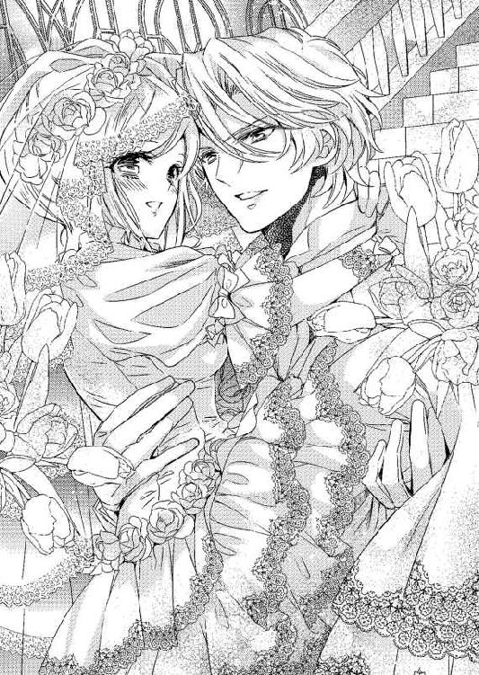
「僕の可愛いお姫さま、今夜は寝かせないからね」
意味ありげに笑った彼がティルレアを抱き上げたまま、門の外に待機している新郎新婦のために用意された馬車へと向かって歩き出す。
吹き抜けていく柔らかな風に、長いドレスの裾やベールが翻る。波打つ純白のレースが、陽光によって眩しいほどに輝く。
美しい花嫁衣装を身に纏い、サディアスに抱き上げられて歩いている。ただそれだけのことに、かつてないほど気持ちが湧き立ってきたティルレアは、嬉しそうに笑っている彼をいつまでも目を細めて見つめていた。
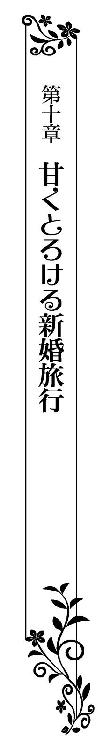
挙式から三日後、延期になってしまった朝食会を開き、その後、参加者に見送られて馬車に乗ったティルレアとサディアスは、新婚旅行で港町を訪れていた。
一週間の滞在予定で、海辺に建つ宿に部屋を取ってある。のんびりと二人きりの時間を過ごすつもりなのだ。
「海が近くに見えるのって、とても素敵ね」
朝の散歩を終えて宿の部屋に戻ってきたティルレアは、開け放した窓から身を乗り出すようにして青い海原を眺める。
銀色の髪を後ろでひとつに束ねて黄色いリボンを結び、クリーム色のリネンで仕立てた軽やかなドレスを纏っている。
夕食の席では贅沢にシルクを使った煌びやかなドレスを身につけ、耳や首元を宝石で飾っているが、それ以外のときはコットンやリネンで仕立てた飾りの少ないものを着ていた。
街の喧噪から離れ、長閑な海辺の宿に滞在しているのに、堅苦しい格好をする必要もないような気がしているからだ。
「ここが気に入ったみたいだね」
背後に立ってきたサディアスが、両手をティルレアの前に回し、肩にあごを載せてくる。
彼もほとんどの時間をラウンジスーツで過ごしていた。上着を脱いでいることも多く、いまもシャツにズボンといった軽装だった。
「夏には泳げるのでしょう？ また来てみたいわ」
「お姫さまの願いとあらば、聞かぬわけにはいきませぬな」
わざと古めかしい口調で言った彼が、悪戯に腰を押しつけてくる。
尻に硬いものがあたるのを感じたティルレアは、振り返りざまきつい視線を向けた。
「朝食もまだなのに」
「朝食より君を先に食べたい」
咎められても意に介さない彼は、甘ったるい声で耳でくすぐってきたかと思うと、前に回している手を滑り落とし、ドレスの裾をゆるゆると捲り上げてきた。
「サディアス......」
膝上まで捲り上げてきた彼が、ドロワーズの上から腿を撫でてくる。
咄嗟に片手でドレス越しに押さえたけれど、彼はかまわず撫で回し続けた。
布をあいだに挟んだ愛撫がもどかしく、彼を窘めておきながら身をくねらせてしまう。
「抱いても抱いても、すぐにまた抱きたくなる」
吐息混じりに囁かれ、耳たぶを甘噛みされ、肌がざわめき出す。
宿に着いたその日から、幾度、彼に抱かれただろうか。
新婚旅行中なのだから、羽目を外したくなる気持ちも理解できる。とはいえ、サディアスは驚くほど精力的に、ティルレアを求めてきた。
夜のベッドでは言うまでもなく、朝も昼も、ときには浴室でも、躊躇うことなく触れてくる彼に快楽の海へと導かれ、いとも容易く官能の渦に巻き込まれていった。
触れ合うことに悦びを感じてしまうから、抗うことができずにいつも身を任せてしまう。
それによって調子に乗ってしまうのだとわかっていても、愛する彼の愛撫を拒むことなどできないのだ。
「あっ......」
腿の付け根に到達した彼の指先が、ドロワーズの合わせ目を分け入ってきた。
はしたなくもしっとりと湿り始めた柔襞をツッとなぞられ、膝から力が抜けそうになる。
窓枠を両の手で掴んでいなければ、その場にへたり込んでいたことだろう。
「ティルレア、僕を誘って......もっと僕を欲しがって......」
「ふ......ぁ......」
柔襞のあいだに差し入れてきた指で、中を掻き混ぜてくる。
指を感じたとたんに最奥から蜜が溢れ出し、クチュクチュと嫌らしい音が立ち始めた。
「僕の記憶を取り戻したくて、大胆に誘ってきたんだろう？ 恥じらいを捨てた君を僕に見せて......もうひとりの僕だけが淫らな君を知っているなんて許せない」
柔襞の奥に収めた指を、繰り返し抜き差ししてくる。
耳をかすめる彼の吐息がいつも以上に熱い。
彼はまるで、記憶を失っていたあいだの自分に嫉妬しているかのようだ。
記憶に空白があるままでは彼が可哀想に感じられ、二人で共有した出来事をありのままを話して聞かせたのだけれど、よけいなことをしてしまったように思えてきた。
「さあ、ティルレア」
急かしてきた彼が、長い指で最奥を突いてくる。
「あぅ......」
あのときは必死だったのだ。彼に記憶を取り戻してほしい一心だったから、羞恥をかなぐり捨てることができた。
「無理よ......」
いまは状況が異なっているのだから、自ら誘うような真似ができるわけがなく、ティルレアは前を向いたまま小さく首を横に振る。
「なぜ？」
「恥ずかしいもの......」
「僕の可愛いお姫さまは、いつもの恥ずかしがり屋さんに戻ってしまったんだな」
残念そうにつぶやきながら、首筋に唇を押し当ててきた。
「ごめんなさい......」
「僕こそ無理を言ってごめん、記憶をなくしていたときの僕が知っている君を、いまの僕は知らないんだと思ったら悔しくなってしまったんだよ、もう忘れて」
耳元で優しく囁やかれて安堵したのもつかの間、サディアスが緩急をつけて指を抜き差しし始める。
彼の長い指で擦られる続けている柔襞が甘く痺れ、下腹の奥のほうからせつない疼きが生じてきた。
「ああぁ......んっ......ふ」
鼻にかかった甘声が勝手にこぼれ、脚が震えてくる。
目の前には美しい景色が広がっているというのに、与えられる快感に意識が向かい、もう目に入らなくなっていた。
「こうして奥まで挿れてあげると、僕の指を締めつけてくるよ」
深く差し入れてきた長い指をゆっくりと抜き差しされ、下腹の奥が疼くと同時に体温が一気に高まっていく。
まだ一度も触れられていない小さな突起が、柔らかな茂みの下で早くも熱く脈打ち出す。
早く触ってほしいけれど、幾度、身体を繋げても言葉にするのが恥ずかしく、望みを伝えることができない。
「ああ......」
もどかしさに尻を淫らに揺り動かす。
「物欲しげに腰が揺れてるね。恥ずかしがり屋さんの君は、いつになったらしてほしいことを言ってくれるのかな？」
そんなことを言いながらも、優しいサディアスは深く差し入れていた指を抜き出し、蜜に濡れた指先を茂みの下に滑らせてくる。
「ひゃっ」
敏感な場所に触れられ、駆け抜けていった甘酸っぱい痺れに、窓枠を掴んだまま背を反らして打ち震えた。
「どこよりもここが好きなんだろう？」
首筋に舌を這わせながら、突起を覆う包皮を捲り、先端を撫で回してくる。
「んんっ......ふ......ぁ」
脚の震えが止まらず、立っているのが辛い。
それを知ってか知らずか、彼は執拗に感じてしかたない突起を指先で嬲ってきた。
下腹から広がっていく心地よい痺れに、ついには膝の力が抜け落ち、窓枠に腹を預けてもたれかかる。
「そんなふうにお尻を突き出すなんて、君もずいぶんおねだり上手になったね」
耳に届いてきた笑いを含んだ声に、そんなつもりではないと言い返そうとしたけれど、言葉にする前に息を呑んでしまう。
「......っ」
勢いよくドレスの裾を捲り上げた彼が、いつの間にか露わにした怒張を、蜜に濡れた襞の奥へと穿ってきたのだ。
背後からの突き上げによって、身体が前のめりになる。しっかり窓枠に掴まっていないと、外に落ちてしまいそうだ。
「サディアス......怖い......」
さすがに恐怖には勝てず、ティルレアが必死の声をあげると、不意に身体が浮き上がった。
屹立を深く突き立てたまま抱き上げてきた彼が、壁の前に置かれている長椅子へと移動し、そのまま腰かける。
「はぅ......」
向き合うように身体を移動され、真下から最奥を押し上げられると、息が詰まって仰け反った。
先ほどより、彼の屹立が力を増しているようだ。ひどい圧迫感に、ますます息が苦しくなっていった。
「気持ちよくしてあげるから、脚を開いてごらん」
息苦しくてしかたないのに、膝に添えてきた手で膝を開かされ、淫らに彼の脚を跨ぐ格好となる。
「んっ」
布越しに乳房を鷲掴みにされたうえに、茂みを分け入ってきた指で疼いたままの小さな塊を撫で回されたティルレアは、あごを大きく反らしてガクガクと震えた。
揺さぶられる豊かな乳房も、執拗に弄られる小さな突起も、屹立で突き上げられる最奥も、蕩けそうなほど熱くなっている。
「可愛い僕のティルレア、もっと声を聞かせて」
吐息を耳に吹き込まれ、腰を前後に揺すられ、全身が甘い痺れに包まれていく。
「あふっ......んん......っ、あああぁ......」
嫌らしい声がひっきりなしにもれた。
窓を開け放しているから、誰かに聞かれないだろうかと心配になる。
けれど、絶え間なく湧き上がってくる快感に、声を抑えることなどできるわけもなく、銀色の髪を揺らして喘ぎ続けた。
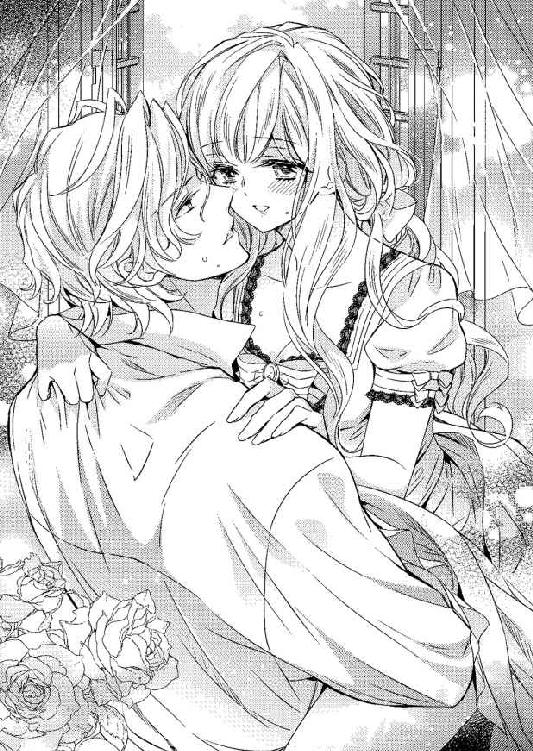
「ひっ......ふん......んっ」
腰を捩って身悶えながら、快感に酔いしれていく。
「ああっ......サディアス......もっ、来るわ......」
下腹の奥から押し寄せてきた抗い難い奔流は、紛れもなく絶頂の兆しだ。
「いつ達してもかまわないよ、僕もすぐに君を追いかけるから」
腰の動きを速めてきた彼が、疼いてたまらない突起を丹念に撫で回し始める。
指先が食い込むほどに彼の背をきつく掴み、広い胸に身体を預けたティルレアは、怒濤のような快感の波に飲み込まれていく。
「ん────っ」
極まりの声をもらして昇り詰め、ブルッとドレスに包まれた細い身体を震わせる。
「はぁ......んっ」
ひと息つく間もなく真下から突き上げられ、腰が大きく跳ね上がった。
「く......ぅ」
短い呻きが首をかすめ、彼の動きがぴたりと止まった。
硬く張り詰めた彼自身が弾け、最奥が熱い精に満たされていく。
夫婦となったいまは、憚ることなく身体を繋ぐことができる。内に放たれた精は新たな命の源であり、いずれ二人の愛の結晶が宿るのかと思うと、達した以上の悦びを覚えた。
「サディアス......」
細波のように引いていく甘い痺れに酔いしれているティルレアは、放心状態で脱力した身体を広い胸に預ける。
「早く赤ちゃんができるといいな」
やんわりと抱きしめてきた彼が、だらしなく脚の上に乗っているティルレアの手に指を絡めてきた。
彼が同じ思いでいることを知って嬉しくなったが、息が荒くて言葉を紡げそうになく、無言でただこくりとうなずき返した。
「幸せかい？」
もちろんと答えたかったけれど、やはり言葉にすることができず、何度も首を縦に振る。
「よかった」
安堵の声を聞きいて顔を綻ばせたティルレアは、妻になれた喜びを噛みしめながら、いつまでもサディアスと指を絡め合っていた。
あとがき
みなさまこんにちは、伊郷ルウです。
このたびは『とろける蜜月』をお手に取ってくださり、ありがとうございました。
本作は初のロイヤルキス文庫となります。
ヴィクトリアン風で、できるだけ若いヒロインで、思いきり甘いお話で......そんな思いからできあがった作品です。
ヒーローとヒロインは七歳の差があります。でも、ヒロインが十六歳なので、思いのほかヒーローは若かった......。普通に見れば、初々しいカップルですね。
ヒロインはいろいろ辛い思いをしますが、基本的には激甘になっていますので、イチャラブをお楽しみ頂ければ幸いです。
イラストを担当してくださいました、氷堂れん先生には心よりの御礼を申し上げます。
私が過去最大級のどじを踏んでしまったせいで、多大なご迷惑をかけることとなり、本当に申し訳ありませんでした。
そうした中、とても可愛くて素敵なイラストの数々を描いていただけたこと、とても嬉しく思っています。ありがとうございました。
担当さまにも、ごめんなさい。のちほど胃薬をお送りさせていただきます。
二〇一四年 夏
伊郷ルウ
◆オフィシャルブログ〈アルカロイドクラブ〉......http://alkaloidclub.web.fc2.com/
『終わらない蜜月』
「明日にはお屋敷に戻るのよねぇ......」
長い銀色の髪を下ろし、夜着を纏って宿のベッドに入ったティルレアは、先に着替えて横になっていたサディアスに躊躇うことなく身を寄せる。
新婚旅行も今日で終わりだ。明日の朝一番の列車に乗って、街に戻る予定になっている。
長閑な港町で、二人だけで過ごす楽しい時間も、もうおしまいかと思うと、残念でならなかった。
「それほどここが気に入ったなら、滞在期間を延ばそうか？」
寝返りを打ってベッドに片肘をついた彼が、目を瞠ったティルレアを間近から見つめてくる。
「そんなことができるの？」
「街に戻ったところで、舞踏会やパーティの予定しか入っていないんだから、べつにかまわないよ」
こともなげに言ってのけたサディアスを、大きく目を見開いたまま見返す。
貴族にとって社交界のつきあいは、最重要事項ともいえる。
社交界のシーズンは先々まで予定が埋まっているのが普通で、よほどのことがないかぎり招待を受けた舞踏会やパーティを欠席しない。
彼は由緒ある伯爵家の長子なのだから、家名を汚すような真似は避けたいはずだ。
いくら新婚とはいえ、勝手な真似は許されない気がした。
「どうしてそんな顔をしているんだい？ もう少しここにいたんだろう？」
「でも、急に予定を変更したりしたら、いろいろなところに迷惑がかかるわ。それに伯爵家の評判だって......」
本気で心配したというのに、こともあろうに彼は声を立てて笑った。
「君は真面目すぎるよ。催しには父の代理で僕が出席することもあれば、その逆もある。ようは、義理を欠かなければいいんだよ」
深く考えるなと言いたげな顔で見下ろしてきた彼が、ベッドに散った銀の髪を指先で弄び始める。
社交界にデビューして間もないティルレアは、そんなものなのだろうかと思いながらも、彼が無謀なことをするはずがないと考え直す。
「じゃあ、もうしばらくここに泊まりましょう」
笑顔でそう言うと、彼が満足そうに微笑み、身体を重ねてきた。
「あっ......」
薄い布越しに彼の猛りを感じ、咄嗟に身を捩る。
新婚旅行のあいだ、数え切れないほど彼に抱かれてきた。
生まれたままの姿を晒し、あられもない声をあげて幾度も達している。
それなのに、いまだこうした状況に羞恥を覚えてしまう。欲情した身体を重ねてこられると、消えてなくなってしまいたくなるのだ。
「鼓動が速くなって......それに体温も上がったみたいだね」
耳を舐めるようにして言われ、無意識に自分が昂揚していることを知ったティルレアは、恥ずかしさのあまり両手で彼の胸を押し返す。
「あなたがそうやって身体を擦りつけてくるから、だから私は......」
「僕が君を求めているように、君も僕を求めているんだろう？ べつに悪いことじゃないよ」
あけすけな言い方に羞恥を煽られ、勢いよく寝返りを打って彼に背を向けた。
愛し合っているのだし、夫婦なのだから、求め合うのは自然なことだ。そうわかっていても、触れられただけで身体の熱が高まってしまうのは、とても淫らなような気がしてならない。
ましてや、そうした身体の変化を即座に彼が感じ取ってしまうから、いたたまれなくなるのだ。
「洗ったばかりだから、とてもいい匂いがする」
背中越しに抱きしめてきたサディアスが、肩口に顔を埋めてくる。
柔肌を啄まれ、舌を這わされ、恥ずかしさに背を向けたはずなのに、じんわりと広がっていった心地よさに身を震わせてしまう。
「この柔らかな手触りがたまらない......」
夜着の上からたわわな乳房を掴まれ、駆け抜けていった甘酸っぱい痺れにあごが上がる。
「ああぁ......」
どこに触れられてもすぐに感じてしまい、身体の熱がどんどん高まっていく。
「サディ......アス......」
掴まれた乳房を激しく揺さぶられ、さらにはツンと尖った乳首に爪を立てられ、最奥から溢れてきた蜜に襞が濡れていった。
柔らかな茂みに隠された小さな塊までが熱く疼き始め、羞恥などどこかへ吹き飛んでいく。
「明日も明後日も、ずーっとこうして君を愛してあげるよ」
吐息混じりの囁きを耳に吹き込んできた彼が、片手を腿に滑らせてくる。
ゆるゆると夜着の裾が捲り上げられ、間もなくして彼の手が直に内腿に触れてきた。
「あっ......」
かすめるように敏感な肌を撫でられると、投げ出している足先までが震えてくる。
彼に触れられるのを待ち焦がれている小さな塊が、茂みの奥で熱く脈打っていた。けれど、彼の手はいっこうに望む場所に移ってこない。
悪戯に内腿を撫でるばかりで、早くも痺れを切らしてしまう。
「サディアス、お願い......」
いまだ望みを口にすることができないティルレアは、彼を振り返って熱に潤んだ瞳で訴えった。
「僕の頼みを聞いてくれたら、すぐに望みを叶えてあげる」
彼の理解し難い言葉に、長い睫を瞬かせる。
すると、所在なげにベッドに落ちている手を掴まれ、背中側に導かれた。
「......っ」
指先にただならない熱を感じ、驚きに手を引っ込める。手に触れたものがなんであるかは、容易に察せられた。いつも自分を満たしてくれる、彼の屹立に間違いない。
「僕のを握って」
甘さを含んだ声でねだってきた彼が、滾った自身をティルレアの尻に押しつけてくる。
恥ずかしく直視することすらできないでいるというのに、触れられるわけがない。
迷いも露わな顔で、自分の小さな手をしばらく見つめた。
「ティルレア......一緒に楽しもう」
耳たぶを甘噛みしてきた彼が、腰を前後に揺らしてくる。
彼はいつも自分の望みを叶えてくれているのだから、お返しをするべきなのだろう。
恥ずかしがるなと言われても無理な話ではあるけれど、意を決するときも必要なのだと自らに言い聞かせる。
そろそろと片手を後ろに回し、探るように指先を動かすと、間もなくして熱い塊が触れた。
覚悟を決めてやんわりと握り取ってみる。思っていた以上の太さがあり、強い脈動が掌に伝わってきた。
（これを私に......）
いつも穿たれているものなのだと思うと、ただならない羞恥が込み上げてくる。
「ああ......ティルレア、最高に気持ちがいい......」
手を引っ込めようとした瞬間に、彼が感じ入った声をもらし、ティルレアは動きを止めた。
彼のこんな声は聞いたことがない。ただ触れただけなのに、彼は感じてくれているのだ。
羞恥を掻き消す悦びが湧き上がり、しっかりと屹立を握り締めた。
「ん......」
鼻にかかった甘い声が耳に届いてくると同時に、前に回してきた手で茂みに隠された塊をいきなり嬲られ、ティルレアは大きく仰け反る。
「はっ......ああぁ......」
思わず屹立から手が離れそうになったけれど、必死に握り続けた。
互いの手でともに快楽を得ている。こうした楽しみ方もあるのだと、彼が教えてくれたのだ。
「ふ......んんんっ......」
「ティルレア、僕のを擦って」
敏感な突起で弾ける快感に身悶えながら、サディアス自身を握っているティルレアは、促されるままに小さな手を動かし、かつて味わったことがない快楽に酔いしれていた。
【とろける蜜月 〜溺愛に恥じらう幼妻〜 番外編ＳＳ】
とろける蜜月 〜溺愛に恥じらう幼妻〜
電子第１版発行 ２０１４年11月21日
著 者 伊郷ルウ
発行所 株式会社ジュリアンパブリッシング
東京都千代田区九段北１─５─９─３Ｆ
０３─３２６１─２７３５
ＨＰ http://www.julian-pb.com/
※本電子書籍は左記の作品に基づき製作されました。
発行 株式会社ジュリアンパブリッシング
ロイヤルキス文庫『とろける蜜月 〜溺愛に恥じらう幼妻〜』
(初版発行 ２０１４年７月30日)
(c)Ruh Igoh 2014
※本書の一部、あるいは全部を無断で複製複写（コピー）、転載、上演、放送することは法律で認められた場合を除き、著作権の侵害となるため、禁止します。